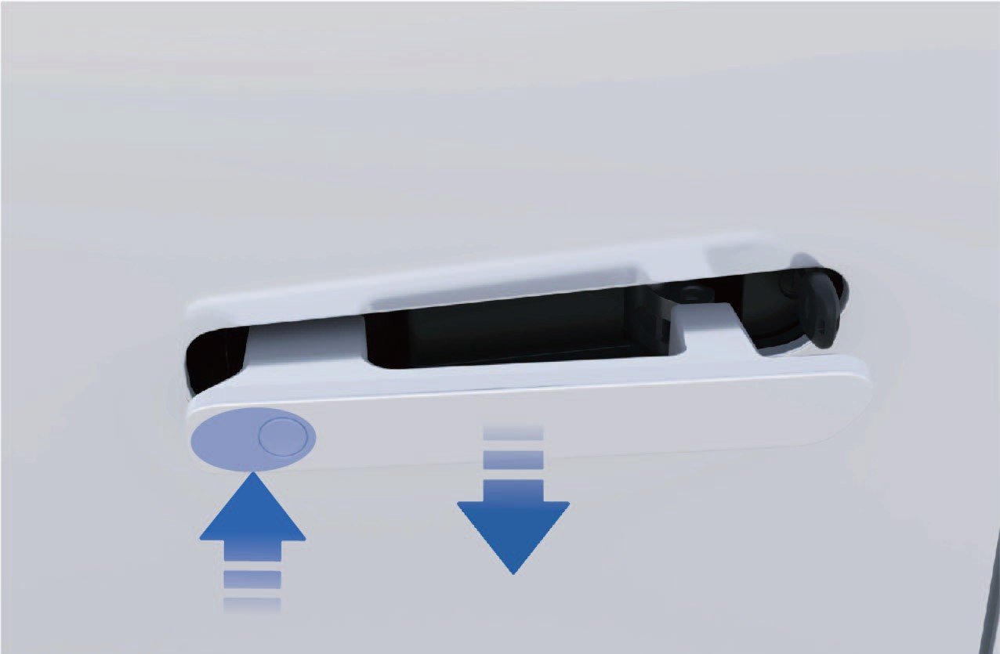
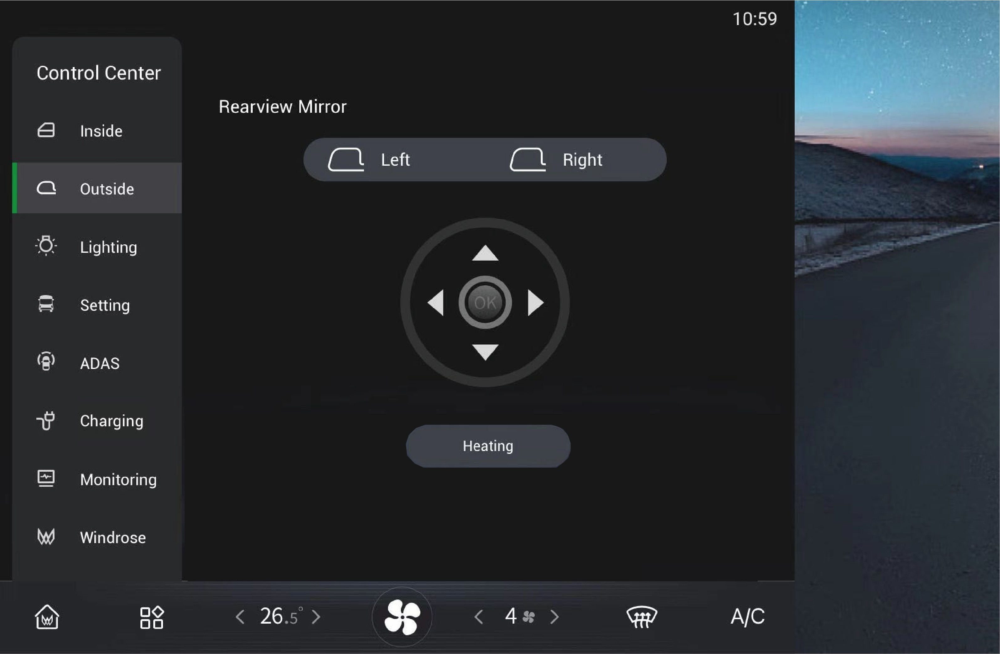
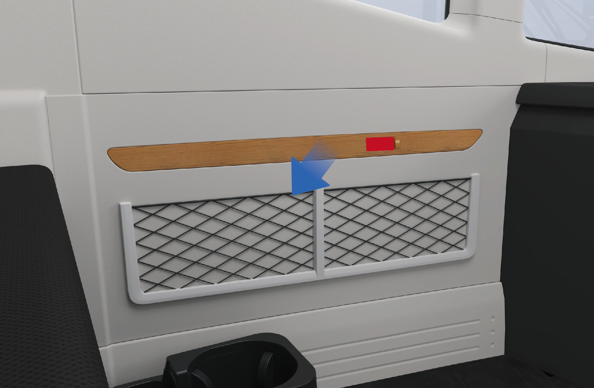
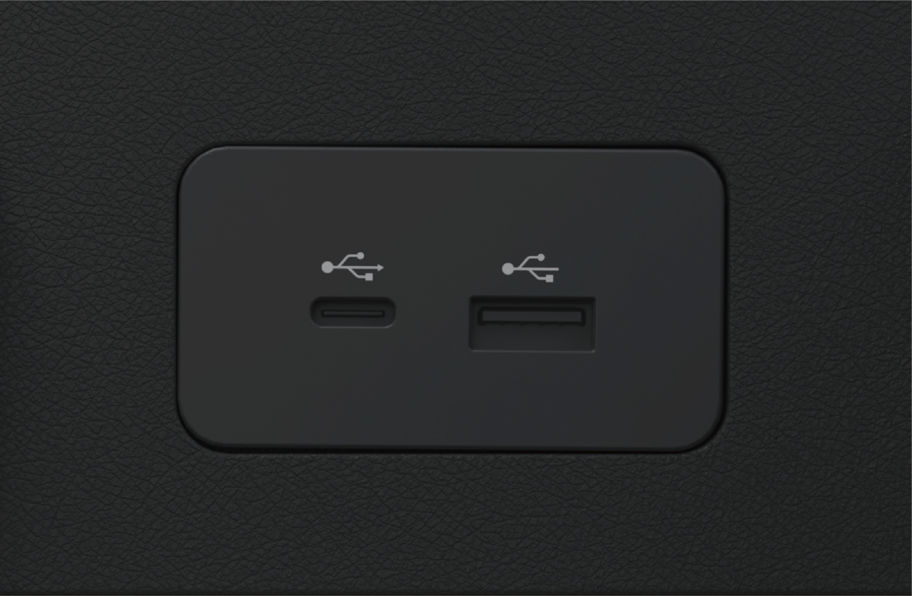
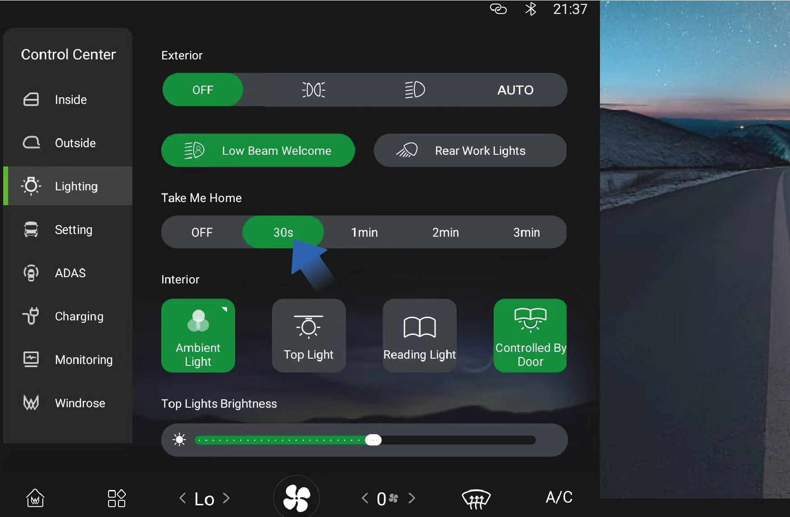
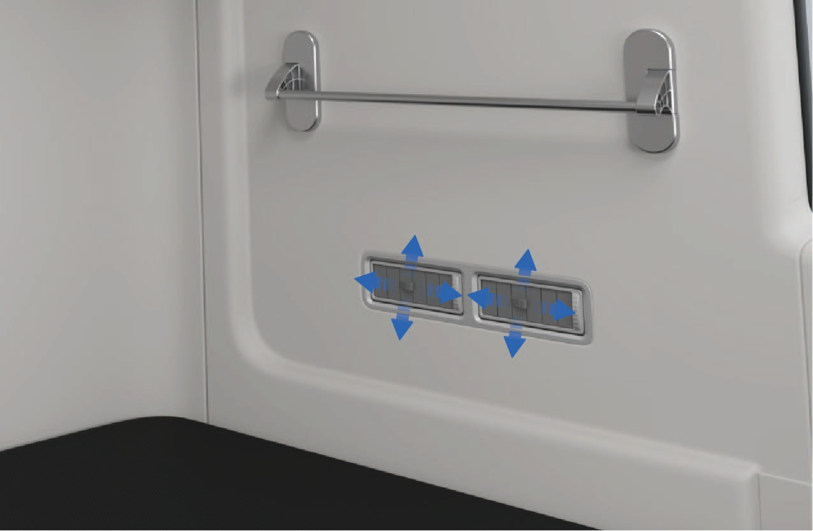
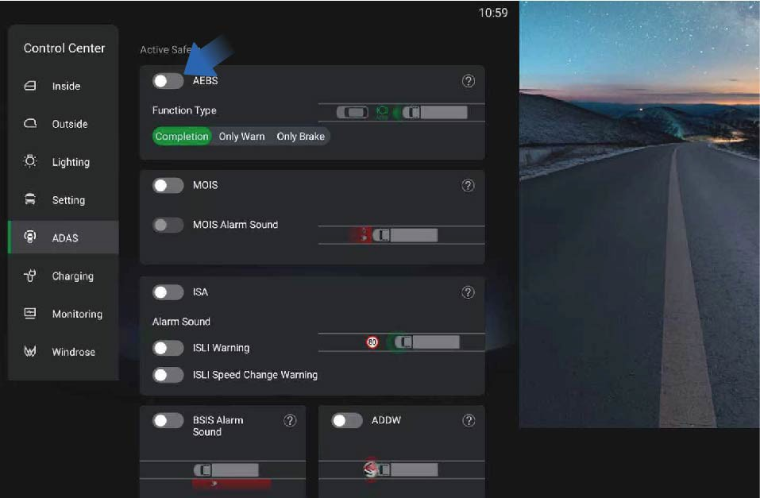
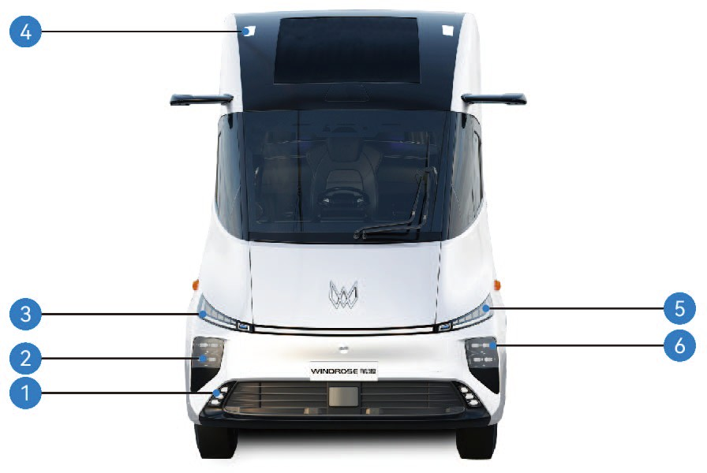

Drogi Kliencie,
Dziękujemy za wybór pojazdu Windrose.
Przed pierwszym uruchomieniem pojazdu prosimy o uważne przeczytanie niniejszej Instrukcji Obsługi. Zawiera ona ważne informacje dotyczące funkcji pojazdu, bezpiecznej eksploatacji, wymagań konserwacyjnych oraz danych technicznych. Zapoznanie się z tymi informacjami pomoże zapewnić bezpieczną jazdę i optymalną wydajność pojazdu.
Ze względu na różne konfiguracje pojazdu i wyposażenie opcjonalne, dostarczony pojazd może nieznacznie różnić się od opisów lub ilustracji zamieszczonych w niniejszej instrukcji. Windrose zastrzega sobie prawo do modyfikacji projektu, specyfikacji i wyposażenia pojazdu bez wcześniejszego powiadomienia w ramach ciągłego doskonalenia produktu.
Informacje, ilustracje i dane techniczne zawarte w niniejszej instrukcji były aktualne w chwili jej publikacji. Podane są wyłącznie w celach informacyjnych i nie stanowią zobowiązania umownego.
Żadna część niniejszej Instrukcji Obsługi nie może być powielana ani przekazywana w jakiejkolwiek formie bez uprzedniej pisemnej zgody firmy Windrose.
Uwaga: Zdjęcia na okładce i ilustracje w niniejszej instrukcji służą wyłącznie celom poglądowym. Rzeczywisty wygląd i specyfikacje pojazdu mogą się różnić.
Spis treści
1. Bezpieczeństwo i Zgodność
2. Ogólny opis pojazdu
3. Wnętrze i Komfort
4. Ładowanie i Przygotowanie
5. Tablica wskaźników
6. Elementy sterowania
7. Wspomaganie kierowcy
8. Procedury awaryjne
9. Konserwacja
10. Dane techniczne
1AInformacje dla użytkowników
↑ GóraPrzed jazdą
Niniejszy pojazd jest elektryczną ciągnikiem bateryjnym.
Podczas codziennej eksploatacji i konserwacji należy przestrzegać wszystkich ostrzeżeń i instrukcji zawartych w niniejszej Instrukcji Obsługi (zwanej dalej „niniejszą instrukcją"), aby uniknąć uszkodzenia pojazdu lub obrażeń ciała.
Przed pierwszym uruchomieniem pojazdu należy uważnie przeczytać niniejszą instrukcję, aby zapoznać się z jego funkcjami i wymaganiami eksploatacyjnymi. W razie problemów podczas użytkowania należy skontaktować się z infolinią serwisową Windrose.
Prawa autorskie do niniejszej instrukcji należą do firmy Windrose. Żadna część niniejszej instrukcji nie może być powielana, przekazywana ani rozpowszechniana bez uprzedniej pisemnej zgody firmy Windrose.
Windrose zastrzega sobie prawo do aktualizacji treści niniejszej instrukcji bez wcześniejszego powiadomienia w ramach ciągłego doskonalenia produktu. Aktualne informacje o pojeździe można znaleźć w elektronicznej Instrukcji Obsługi dostępnej na centralnym wyświetlaczu lub w aplikacji mobilnej Windrose.
Strona internetowa Windrose:
Infolinia serwisowa Windrose:Aplikację można pobrać, wyszukując „Windrose" w oficjalnym sklepie z aplikacjami mobilnymi.
NotatkaSkróty są wprowadzane w formacie „pełna nazwa (skrót)" przy pierwszym użyciu. W dalszej części używany jest skrót.
1BOpis ostrzeżeń
↑ GóraPrzed jazdą
W niniejszej instrukcji używane są następujące słowa sygnałowe i symbole:
OstrzeżenieWskazuje sytuację niebezpieczną, która — jeśli nie zostanie uniknięta — może spowodować poważne obrażenia ciała lub śmierć.
1B.1Uwaga
↑ GóraUwagaWskazuje sytuację, która może spowodować uszkodzenie pojazdu lub jego podzespołów.
1B.2Notatka
↑ GóraNotatkaZawiera dodatkowe przydatne informacje lub wskazówki dotyczące obsługi.
1B.3Ochrona środowiska
↑ GóraOchrona środowiskaWskazuje informacje związane z ochroną środowiska lub efektywnością energetyczną.
1B.4Gwiazdka
↑ GóraGwiazdka (*) po nazwie funkcji oznacza, że dana funkcja dotyczy wyłącznie określonych modeli pojazdu lub konfiguracji opcjonalnych.
1B.5
Informacje o ilustracjach
↑ Góra
Ta strzałka wskazuje dokładne położenie obiektu przedstawionego na rysunku.
Ta strzałka wskazuje kierunek ruchu obiektu przedstawionego na rysunku.
Ta strzałka wskazuje kierunek obrotu obiektu przedstawionego na rysunku.
Ta strzałka wskazuje kierunek obrócenia obiektu przedstawionego na rysunku.
1COchrona środowiska
↑ GóraPrzed jazdą
Windrose jest zaangażowana w zrównoważony rozwój i ochronę środowiska. Niniejszy pojazd został zaprojektowany z myślą o poprawie efektywności energetycznej i redukcji emisji. Użytkownik może przyczynić się do ochrony środowiska, jeżdżąc odpowiedzialnie i eksploatując pojazd w sposób energooszczędny.
1DBezpieczeństwo eksploatacji
Przed jazdą
Należy zawsze przestrzegać dopuszczalnej maksymalnej masy całkowitej pojazdu i dopuszczalnych nacisków na osie. Nie wolno przeciążać pojazdu, ponieważ może to prowadzić do jego uszkodzenia, utraty kontroli lub obrażeń ciała.
Każdy pas bezpieczeństwa, który był narażony na siły uderzeniowe podczas kolizji, należy wymienić, nawet jeśli nie widać żadnych uszkodzeń
Ostrzeżeniezewnętrznych.
Ostrzeżenie
Nigdy nie wolno zjeżdżać ze wzniesienia na biegu jałowym. Powoduje to wyłączenie hamowania silnikiem trakcyjnym i może skutkować utratą kontroli nad pojazdem.
Przed jazdą należy wyregulować fotel do właściwej pozycji. Nieprawidłowa pozycja siedzenia może powodować zmęczenie, nieoczekiwany ruch fotela lub utratę kontroli nad pojazdem. Należy upewnić się, że pozycja fotela umożliwia prawidłowe korzystanie z pasa bezpieczeństwa.
Pasy bezpieczeństwa są niezbędnymi urządzeniami bezpieczeństwa. Wszyscy pasażerowie muszą prawidłowo zapinać pasy bezpieczeństwa podczas jazdy pojazdem.
Podczas jazdy nie należy nadmiernie odchylać oparcia fotela. W przypadku awaryjnego hamowania nieprawidłowa pozycja siedząca może
zmniejszyć skuteczność pasa bezpieczeństwa.
Nie należy przekraczać prędkości 30 km/h w żadnej z poniższych sytuacji:
Wjazd lub wyjazd z dróg dla pojazdów niemotoryzowanych, przejazdów kolejowych, ostrych zakrętów, wąskich dróg lub mostów.
Zawracanie, skręcanie lub zjazd po stromym zboczu.
Widoczność jest mniejsza niż 50 m z powodu mgły, deszczu, śniegu, kurzu lub gradu.
Jazda po oblodzonych, zaśnieżonych lub błotnistych drogach.
Holowanie unieruchomionego pojazdu.
↑ Góra
UwagaJadąc w pobliżu radioastronomicznego obserwatorium, należy zachować bezpieczną odległość. Pojazdy wyposażone w radar mogą powodować zakłócenia elektromagnetyczne urządzeń obserwatorium.
1EOryginalne części
Przed jazdą
Windrose nie zapewni gwarancji na części w następujących okolicznościach:
Nieuprawnione modyfikacje pojazdu, w szczególności dotyczące układów związanych z bezpieczeństwem jazdy (np. układy wysokiego napięcia, układy elektryczne, hamulcowe, kierownicze lub TBOX).
Ingerencja w system OBD pojazdu.
Stosowanie nieaprobowanych części lub płynów, które powodują zagrożenie bezpieczeństwa lub uszkodzenie pojazdu.
Brak dokumentacji potwierdzającej stosowanie zatwierdzonych płynów w okresie gwarancyjnym.
Niespełnienie wymogów obsługi technicznej w autoryzowanym centrum serwisowym Windrose.
1FBezpieczeństwo danych
↑ GóraPrzed jazdą
Zgodnie z obowiązującymi przepisami prawa i regulacjami Windrose gromadzi i przetwarza dane pojazdu, w tym informacje o lokalizacji, dane dotyczące zachowania podczas jazdy, nagrania audio i wideo oraz dane osobowe.
Windrose stosuje odpowiednie środki techniczne i organizacyjne w celu ochrony takich danych zgodnie z obowiązującymi przepisami o ochronie danych i standardami branżowymi.
1GModyfikacja pojazdu
Przed jazdą
↑ Góra1G.1Dokumenty wymagane przed modyfikacją
Wszelkie modyfikacje pojazdu muszą być zgodne z obowiązującymi wymaganiami technicznymi i regulacyjnymi. Przed dokonaniem modyfikacji należy przedłożyć firmie Windrose odpowiednią dokumentację techniczną.
Dokumentacja powinna zawierać co najmniej:
Przeznaczenie i warunki eksploatacji zmodyfikowanego pojazdu.
Masa całkowita pojazdu i naciski na osie po modyfikacji.
Wymiary zewnętrzne zmodyfikowanego pojazdu (w tym konfiguracja robocza).
Wysokość podłogi nadwozia nad poziomem gruntu.
Metoda mocowania nadwozia.
Schemat ramy pomocniczej.
1HZłomowanie pojazdu
Przed jazdą
↑ GóraPojazdy, które nie spełniają już wymagań dotyczących zdatności do ruchu drogowego, należy zutylizować zgodnie z obowiązującymi przepisami środowiskowymi.
Złomowanie pojazdu i recykling akumulatora wysokiego napięcia muszą być przeprowadzane przez Windrose lub autoryzowane organizacje recyklingowe.
OstrzeżenieNieprawidłowa utylizacja akumulatorów wysokiego napięcia może spowodować pożar lub szkody dla środowiska. Nie wolno demontować ani wyrzucać akumulatorów wysokiego napięcia bez upoważnienia.
1G.2Recykling akumulatora wysokiego napięcia
Windrose przeprowadzi testy pojemności i stanu akumulatora wysokiego napięcia, a następnie dokona jego recyklingu zgodnie z obowiązującymi przepisami prawa, regulacjami i warunkami rynkowymi.
Recykling akumulatora wysokiego napięcia: Recykling i dalsze przetwarzanie powinno być przeprowadzane przez Windrose lub zewnętrzną organizację recyklingową wyznaczoną przez Windrose.
Transport akumulatora wysokiego napięcia: Akumulatory wysokiego napięcia są transportowane przez profesjonalną agencję transportową. Należy skontaktować się z autoryzowanym centrum serwisowym Windrose w celu powiadomienia profesjonalnej agencji recyklingowej.
Ostrzeżenie
Nie wolno utylizować ani wyrzucać zużytych akumulatorów wysokiego napięcia, aby uniknąć przypadkowego pożaru lub poważnego zanieczyszczenia środowiska.
Nie wolno przekazywać zużytych akumulatorów wysokiego napięcia innym podmiotom lub osobom fizycznym. Użytkownik ponosi odpowiedzialność za wszelkie zanieczyszczenia środowiska lub wypadki bezpieczeństwa spowodowane nieuprawnionym demontażem akumulatorów wysokiego napięcia.
1IJazda ekologiczna
Przed jazdą
Poniższe praktyki pomogą zmaksymalizować zasięg jazdy i efektywność energetyczną:
Należy utrzymywać stałą prędkość i unikać gwałtownego przyspieszania lub hamowania.
Należy utrzymywać pojazd w dobrym stanie technicznym poprzez regularne przeglądy.
Nigdy nie wolno jeździć na biegu jałowym, ponieważ spowoduje to niewystarczające smarowanie osi elektrycznej, prowadząc do uszkodzenia podzespołów.
1JJazda zimowa
↑ GóraPrzed jazdą
1J.1Przygotowanie do jazdy zimowej
Należy stosować wysokiej jakości płyn chłodzący dostosowany do najniższych temperatur; temperatura zamarzania płynu powinna być niższa od lokalnej minimalnej temperatury.
Należy dbać o pełne naładowanie akumulatora, aby zapobiec jego zamarzaniu w niskich temperaturach.
1J.2Stosowanie płynu chłodzącego pojazdu zimą
↑ GóraW sezonie zimowym lub gdy pojazd jest parkowany w zimnym miejscu, należy zapewnić właściwości przeciwmrozowe płynu chłodzącego. Należy stosować płyn chłodzący zalecany przez Windrose.
1J.3Środki ostrożności przy jeździe zimowej
Zaleca się stosowanie łańcuchów śniegowych lub opon zimowych.
Należy unikać gwałtownego przyspieszania, gwałtownego hamowania i ostrych zakrętów przy dużych prędkościach.
Jadąc po drogach pokrytych śniegiem i lodem, należy utrzymywać niską prędkość w celu zapewnienia lepszego działania hamulców roboczych.
Należy zachować odpowiednią odległość między pojazdami (zwiększyć odległość podczas jazdy w deszczowych i śnieżnych
Po zamontowaniu łańcuchów śniegowych należy uruchomić pojazd i sprawdzić, czy łańcuchy nie są luźne lub czy opony są prawidłowo zamontowane.
↑ GóraOstrzeżeniePodczas korzystania z łańcuchów śniegowych zabrania się przekraczania maksymalnej skutecznej prędkości jazdy, aby uniknąć wypadków.
warunkach lub na oblodzonych drogach, co może zwiększyć drogę hamowania).
1KUżywanie łańcuchów śniegowych
Przed jazdą
Podczas korzystania z łańcuchów śniegowych należy zwrócić uwagę na następujące kwestie:
Zaleca się stosowanie łańcuchów śniegowych podczas jazdy po drogach pokrytych grubą warstwą śniegu lub lodu.
Łańcuchy śniegowe muszą być kompatybilne z rozmiarem i typem opon zamontowanych w pojeździe.
Łańcuchy śniegowe należy zakładać na zewnętrzne opony osi napędowej (po obu stronach).
Podczas zakładania lub zdejmowania łańcuchów śniegowych należy uważać, aby nie uszkodzić opon.
Uwaga
 Jadąc po długich odcinkach dróg bez śniegu i lodu, należy zdjąć łańcuchy śniegowe.
Jadąc po długich odcinkach dróg bez śniegu i lodu, należy zdjąć łańcuchy śniegowe.Należy upewnić się, że łańcuchy śniegowe nie stykają się z żadnymi podzespołami pojazdu podczas jazdy ani nie wchodzą z nimi w kontakt.
Łańcuchy śniegowe należy zakładać i zdejmować wyłącznie gdy pojazd stoi na poziomym podłożu.
1LJazda w tropikach i obszarach wysokich temperatur
Przed jazdą
Przed jazdą należy sprawdzić stan pojazdu:
Sprawdzić, czy poziom płynu chłodzącego mieści się w normalnym zakresie, i skontrolować szczelność układu chłodzenia.
Nie zostawiać łatwopalnych przedmiotów (np. zapalniczek, produktów w aerozolu, perfum) na desce rozdzielczej ani w miejscach narażonych na bezpośrednie działanie promieni słonecznych przez dłuższy czas. Wysokie temperatury mogą spowodować rozerwanie pojemników ciśnieniowych i stworzyć zagrożenie pożarowe.
Podczas jazdy należy zwrócić uwagę na następujące kwestie:
lampki ostrzegawcze zapalą się, należy natychmiast zatrzymać jazdę i
skontaktować się z autoryzowanym centrum serwisowym Windrose.
Należy obserwować ciśnienie i temperaturę opon. W przypadku stwierdzenia nieprawidłowego ciśnienia lub temperatury opon należy natychmiast zatrzymać jazdę i pozwolić oponom ostygnąć naturalnie. Nie wolno obniżać ciśnienia ani chłodzić opon poprzez spryskiwanie wodą lub upuszczanie powietrza, ponieważ przyspieszy to starzenie się i zużycie opon, a w skrajnych przypadkach może doprowadzić do ich pęknięcia.
W przypadku pęknięcia opony podczas jazdy należy natychmiast nacisnąć przełącznik świateł awaryjnych, trzymać kierownicę obiema rękami w pozycji godziny 9 i 3 bez skręcania oraz przerywanego naciskać pedał hamulca, aby stopniowo zwalniać pojazd i ostrzegać innych uczestników ruchu drogowego.
Należy monitorować ciśnienie i temperaturę opon.
W przypadku stwierdzenia jakichkolwiek nieprawidłowości należy jak najszybciej zatrzymać pojazd w bezpiecznym miejscu i pozwolić oponom ostygnąć naturalnie. Nie wolno chłodzić opon wodą ani przez upuszczanie powietrza, ponieważ może to przyspieszyć starzenie się opon i zwiększyć ryzyko ich pęknięcia.
Należy obserwować wskaźniki i lampki ostrzegawcze na zestawie wskaźników, a jeśli zapala się którakolwiek lampka kontrolna lub ostrzegawcza związana z pojazdem
Jazda po wybojach i śliskich drogach
Przed jazdą
Podczas jazdy po wyboistych i śliskich drogach należy zwrócić uwagę na następujące kwestie:
Na wyboistych drogach należy zmniejszyć prędkość, aby poprawić komfort jazdy i zminimalizować zużycie zawieszenia i elementów amortyzujących.
Na śliskich drogach należy zmniejszyć prędkość i łagodnie hamować, aby zapobiec utracie trakcji i poślizgowi bocznemu pojazdu.
Jeśli pojazd zacznie się ślizgać na mokrym lub śliskim podłożu, należy płynnie zmniejszyć prędkość za pomocą hamulca roboczego i unikać gwałtownych ruchów kierownicą.
1MJazda po wzniesieniach
↑ GóraPrzed jazdą
1M.1Środki ostrożności przy jeździe pod górę
Jeśli pojazd cofa się podczas ruszania na wzniesieniu, należy natychmiast wcisnąć pedał hamulca, zaciągnąć elektryczny hamulec postojowy, a następnie ponownie rozpocząć procedurę ruszania.
Podczas podjazdu należy utrzymywać niską i stałą prędkość. Należy stopniowo naciskać pedał przyspieszenia i unikać gwałtownego przyspieszania lub hamowania.
Środki ostrożności przy jeździe z góry
Przed zjazdem należy zmniejszyć prędkość, aby pojazd wjechał na pochyłość z kontrolowaną prędkością.
Nigdy nie wolno zjeżdżać ze wzniesienia na biegu jałowym. Powoduje to wyłączenie hamowania silnikiem trakcyjnym i może skutkować utratą kontroli nad pojazdem.
Przed zjazdem należy upewnić się, że układ hamulcowy działa prawidłowo. W przypadku podejrzenia usterki należy ją usunąć przed kontynuowaniem jazdy.
Należy unikać gwałtownych ruchów kierownicą na drogach z pochyłością, aby zmniejszyć ryzyko wywrócenia się pojazdu.
Na długich zjazdach należy unikać ciągłego hamowania. Należy stosować odpowiednie techniki kontroli prędkości i hamowania, aby zapobiec przegrzaniu hamulców i ewentualnemu zanikowi siły hamowania.
1NZgłaszanie defektów bezpieczeństwa
↑ GóraPrzed jazdą
Jeśli istnieje podejrzenie, że pojazd posiada usterkę związaną z bezpieczeństwem, należy jak najszybciej zatrzymać pojazd w bezpiecznym miejscu i niezwłocznie skontaktować się z obsługą klienta Windrose lub autoryzowaną stacją serwisową Windrose.
Windrose może wydawać zawiadomienia bezpieczeństwa, kampanie serwisowe lub akcje naprawcze, gdy jest to wymagane przez obowiązujące przepisy prawa i regulacje. W Unii Europejskiej akcje naprawcze dotyczące bezpieczeństwa pojazdów są prowadzone w ramach unijnych przepisów dotyczących nadzoru rynku i homologacji typu i są koordynowane z właściwymi krajowymi organami homologacji typu i nadzoru rynku zainteresowanych Państw Członkowskich. Należy przestrzegać wszystkich instrukcji bezpieczeństwa i wymagań kampanii serwisowych zapewnianych przez Windrose.
Infolinia serwisowa Windrose: [DANE KONTAKTOWE UE DO POTWIERDZENIA]
Serwisowa strona internetowa Windrose: [SERWISOWA STRONA INTERNETOWA UE DO POTWIERDZENIA]
Autoryzowana sieć serwisowa: [SIEĆ SERWISOWA UE DO POTWIERDZENIA]
2APrzegląd zewnętrzny pojazdu
Identyfikacja pojazdu

Przednia lampa kierunkowskazu/dzienna lampa do jazdy
Lampa postojowa 3. Panoramiczny dach
4. Boczna skrzynka narzędziowa 5. Gniazdo ładowania

|
|
|
|
|
|
|---|---|---|---|---|---|
|
|
|
|
|
|
|
|
|
|
|
|
2BPrzegląd wnętrza pojazdu
Identyfikacja pojazdu

|
|
2. |
|
3. |
|
|---|
4.
Kierownica
Ekran systemu infotainment
Łopatka kinetycznego hamowania regeneracyjnego (lewa)
7.
Zestaw wskaźników
Schowek na desce rozdzielczej/AR-HUD*
Łopatka kinetycznego hamowania regeneracyjnego (prawa)
|
|
11. |
|
12. |
|
|---|---|---|---|---|---|
|
|
14. |
|
15. |
|
2CTabliczka znamionowa i VIN pojazdu
Identyfikacja pojazdu
Tabliczka znamionowa pojazdu

Tabliczka znamionowa pojazdu znajduje się na prawym ościeżniku drzwi przesuwnych (słupku C) pojazdu.
Tabliczka zawiera następujące informacje:
Nazwa producenta
Numer homologacji całego pojazdu (WVTA)
Numer identyfikacyjny pojazdu (VIN)
Przeznaczona do rejestracji maksymalna dopuszczalna masa
Technicznie dopuszczalna maksymalna masa całkowita
Inne informacje regulacyjne wymagane przez obowiązujące przepisy
Numer identyfikacyjny pojazdu

Numer identyfikacyjny pojazdu (VIN) jest wybity na prawej belce ramy bocznej, w pobliżu osi przedniej.
2DPołożenie tabliczki znamionowej silnika i kodu
Identyfikacja pojazdu

Położenie tabliczki znamionowej silnika
Położenie numeru seryjnego silnika
Uwaga
Odcisk (odbicie) numeru seryjnego silnika jest dostarczany wraz z dokumentacją silnika przy opuszczaniu pojazdu z fabryki. Należy zachować ten dokument do przyszłego wykorzystania.
Ponieważ silniki trakcyjne dostarczane przez różnych producentów mogą się różnić, informacje podane na tabliczce znamionowej silnika i w odpowiedniej dokumentacji mogą się różnić. Należy odnieść się do rzeczywistego produktu.
Przepuszczalność mikrofalowa/RF szyby przedniej Identyfikacja pojazdu
Szyba przednia niniejszego pojazdu nie zawiera powłok metalicznych zakłócających transmisję sygnałów radiowych (RF).
W związku z tym urządzenia do elektronicznego poboru opłat (ETC), winiety elektroniczne, urządzenia telematyczne lub inne urządzenia oparte na sygnale RF mogą być instalowane na szybie przedniej zgodnie z instrukcją montażu dostarczoną przez producenta urządzenia.
3AElektryczne drzwi przesuwne
↑ GóraDostęp do pojazdu
Po prawej stronie pojazdu zamontowane są elektryczne drzwi przesuwne. Drzwi można otwierać lub zamykać kilkoma metodami obsługi.
3A.1Instrukcja obsługi
Obsługa z zewnątrz

↑ GóraElektrycznie: Gdy pojazd jest odblokowany, należy nacisnąć przełącznik uchwytu drzwi wpuszczanego. Elektryczne drzwi przesuwne otworzą się lub zamkną automatycznie.

Ręcznie: Gdy pojazd jest odblokowany:
1. Nacisnąć przedni koniec uchwytu drzwi wpuszczanego, aby go zwolnić.
2. Pociągnąć uchwyt na zewnątrz, aby odblokować drzwi przesuwne.
3. Otworzyć drzwi ręcznie przez przesunięcie.
3A.2Wsiadanie do pojazdu

Po otwarciu elektrycznych drzwi przesuwnych należy wejść do kabiny zgodnie z poniższymi krokami:
Stanąć przodem do drzwi i chwycić obiema rękami lewy i prawy uchwyt.
Postawić jedną stopę na dolnym stopniu i podciągnąć się ku górze.
Postawić drugą stopę na górnym stopniu.
Przesunąć dolną rękę wyżej na uchwycie.
Wejść do kabiny pojazdu.
Poślizgnięcie lub upadek podczas wsiadania lub wysiadania z pojazdu może spowodować obrażenia ciała.
Mokre lub brudne obuwie znacznie zwiększa ryzyko poślizgu. Należy zachować szczególną ostrożność podczas wsiadania i wysiadania z kabiny.
Podczas wsiadania i wysiadania z kabiny należy zawsze zachować kontakt w trzech punktach z pojazdem (dwie ręce i jedna stopa lub dwie stopy i jedna ręka).
Nigdy nie wolno skakać z pojazdu.
Obsługa od wewnątrz
Gdy pojazd jest odblokowany:

Wybrać „Centrum sterowania" na ekranie informacyjnym pojazdu.
Przełączyć na interfejs „Wewnątrz".
Nacisnąć przycisk sterowania „Drzwi przesuwne", aby otworzyć lub zamknąć elektryczne drzwi przesuwne.
Elektrycznie: Gdy pojazd jest odblokowany, nacisnąć przełącznik umieszczony na panelu wykończeniowym słupka B przed drzwiami przesuwnymi, aby otworzyć lub zamknąć drzwi.
Ręcznie: Gdy drzwi przesuwne są zamknięte, pociągnąć wewnętrzny uchwyt do tyłu, aby odblokować drzwi i ręcznie je otworzyć.
Gdy drzwi przesuwne są otwarte, trzymać wewnętrzny uchwyt i przesunąć drzwi do przodu, aby je zamknąć.
Sytuacje awaryjne wewnątrz pojazdu


W przypadku awarii przełącznika elektrycznego lub wewnętrznego uchwytu:
Zdjąć dolną pokrywę osłony ochronnej drzwi przesuwnych.
Pociągnąć awaryjny kabel zwalniający, aby ręcznie odblokować drzwi przesuwne.
Centralny przełącznik blokady

Po zamknięciu drzwi przesuwnych:
Nacisnąć centralny przełącznik blokady znajdujący się w grupie przycisków po prawej stronie tablicy przyrządów, aby zablokować drzwi przesuwne.
Wskaźnik stanu zaświeci się, gdy drzwi są zablokowane.
Nacisnąć przełącznik ponownie, aby odblokować drzwi.
Tryb ręczny drzwi przesuwnych

Tryb ręczny można aktywować lub dezaktywować za pomocą ekranu informacyjnego pojazdu:
Wybrać „Centrum sterowania".
Przełączyć na interfejs „Monitorowanie".
Wybrać „Tryb ręczny drzwi przesuwnych".
↑ GóraGdy tryb ręczny jest włączony, drzwi przesuwne można obsługiwać wyłącznie ręcznie.
Funkcja ochrony przed zgnieceniem drzwi przesuwnych
Podczas automatycznego zamykania, jeśli drzwi przesuwne wykryją przeszkodę, drzwi zatrzymają się i automatycznie cofną do pozycji otwartej.
3A.3Środki ostrożności
↑ GóraOstrzeżenieFunkcja ochrony przed zgnieceniem jest aktywna wyłącznie podczas elektrycznego zamykania. Nie jest aktywna podczas ręcznej obsługi drzwi.
3BPas bezpieczeństwa
↑ GóraDostęp do pojazdu
Siedzenie kierowcy i pasażera z przodu są wyposażone w pasy bezpieczeństwa. Pasy bezpieczeństwa pomagają zapobiegać urazom lub je zmniejszać podczas hamowania awaryjnego lub kolizji.
3B.1Instrukcja obsługi
↑ GóraPas bezpieczeństwa kierowcy znajduje się po lewej stronie fotela kierowcy i można go bezpośrednio wyciągnąć, aby zapiąć.
Pas bezpieczeństwa pasażera z przodu znajduje się po prawej stronie fotela pasażera. Gdy fotel pasażera jest zajęty, należy przypomnieć pasażerowi o prawidłowym zapięciu pasa przed ruszeniem pojazdu.
Prawidłowe użycie pasa bezpieczeństwa
Podczas zapinania pasa bezpieczeństwa należy przestrzegać następujących zasad:
• Biodrowa część pasa powinna leżeć nisko na miednicy (biodrach), a nie na brzuchu.
• Pas powinien przylegać do ciała bez skręceń.
• Barkowa część pasa powinna przebiegać przez środek ramienia.
• Nigdy nie wolno umieszczać pasa na szyi ani pod pachą.
• Po zapięciu pasa bezpieczeństwa należy pociągnąć barkową część ku górze, aby upewnić się, że biodrowa część pasa mocno przylega do bioder.
• Przed jazdą należy zawsze upewnić się, że pas bezpieczeństwa jest prawidłowo zapięty.
Przypomnienie o pasie bezpieczeństwa
Jeśli pas bezpieczeństwa kierowcy nie jest zapięty, na zestawie wskaźników zaświeci się lampka ostrzegawcza pasa bezpieczeństwa.
Po zapięciu pasa bezpieczeństwa przez kierowcę lampka ostrzegawcza zgaśnie.
Czyszczenie pasów bezpieczeństwa
Jeśli pas bezpieczeństwa się zabrudzi, należy go wyczyścić łagodnym mydłem i wodą.
1. Całkowicie wyciągnąć pas bezpieczeństwa i unieruchomić go w miejscu.
2. Nałożyć łagodny roztwór mydła na zabrudzone miejsca.
3. Delikatnie wyczyścić pas miękką szczotką lub ściereczką.
4. W razie potrzeby spłukać czystą wodą.
5. Pozwolić pasowi bezpieczeństwa całkowicie wyschnąć przed jego zwinięciem.
Nie wolno zwijać mokrego pasa bezpieczeństwa z powrotem do mechanizmu zwijacza.

3B.2Środki ostrożności
OstrzeżenieWszyscy pasażerowie muszą prawidłowo zapinać pasy bezpieczeństwa podczas jazdy pojazdem. Prawidłowe użycie pasów bezpieczeństwa znacznie zmniejsza ryzyko obrażeń podczas awaryjnego hamowania lub kolizji.
Niezapięcie pasa bezpieczeństwa lub jego nieprawidłowe użycie może prowadzić do poważnych obrażeń lub śmierci.
Nie wolno siedzieć w miejscach niewyposażonych w fotel i pas bezpieczeństwa.
Nie wolno używać uszkodzonego lub niesprawnego pasa bezpieczeństwa.
Każdy pas bezpieczeństwa jest przeznaczony dla jednej osoby. Nigdy nie wolno dzielić pasa bezpieczeństwa z inną osobą.
Nigdy nie wolno umieszczać barkowej części pasa na szyi ani pod pachą.
Nie wolno zdejmować, modyfikować ani manipulować układem pasów bezpieczeństwa.
Do czyszczenia pasów bezpieczeństwa nie wolno używać wybielaczy, barwników ani chemicznych rozpuszczalników, ponieważ mogą one osłabić materiał pasa.
3CElektryczne szyby
↑ GóraDostęp do pojazdu
Boczne szyby można obsługiwać za pomocą przełączników sterowania szybami umieszczonych po lewej stronie tablicy przyrządów lub na panelu sterowania kuszetki.
Pojazd jest wyposażony w funkcję automatycznego zamykania szyb. Gdy pojazd jest wyłączony i zablokowany, szyby zamkną się automatycznie, jeśli nie są już całkowicie zamknięte.
3C.1
Instrukcja obsługi
Regulacja szyby za pomocą przycisku kombinowanego

Lewy przełącznik sterowania szybą: Nacisnąć i przytrzymać przyciski przełącznika góra/dół, aby sterować otwieraniem lewej szyby; Nacisnąć i zwolnić lewego przełącznika sterowania szybą w górę i dół, aby podnieść lub opuścić lewą szybę jednym kliknięciem.
Prawy przełącznik sterowania szybą: Nacisnąć i przytrzymać przyciski przełącznika góra/dół, aby sterować otwieraniem prawej szyby; Nacisnąć i zwolnić prawy przełącznik sterowania szybą w górę
i dół, aby podnieść lub opuścić prawą szybę jednym kliknięciem.
Regulacja szyby za pomocą przełącznika kuszetki

Lewy przełącznik sterowania szybą: Nacisnąć i przytrzymać przyciski góra/dół
↑ Góraautomatycznie zamknąć lub otworzyć szybę całkowicie (jednym przyciskiem).
3C.2Środki ostrożności
Ostrzeżenie
Przed zamknięciem szyb ważne jest, aby upewnić się, że żaden z pasażerów nie wystaje żadną częścią ciała poza szybę, w przeciwnym razie może to spowodować poważne obrażenia.
Nie wolno obsługiwać szyb przy dużych prędkościach.
NotatkaNależy w porę usuwać śnieg i lód z powierzchni szyby, aby uniknąć jej zablokowania podczas ruchu lub uniemożliwienia normalnego otwierania i zamykania.
przełącznika góra/dół, aby sterować otwieraniem lewej szyby;
Szybko nacisnąć i zwolnić oba przyciski, aby automatycznie zamknąć lub otworzyć szybę całkowicie (jednym przyciskiem).
Prawy przełącznik sterowania szybą: Nacisnąć i przytrzymać przyciski przełącznika góra/dół, aby sterować otwieraniem prawej szyby; Szybko nacisnąć i zwolnić oba przyciski, aby
3DZasłona prywatności kuszetki*
↑ GóraDostęp do pojazdu
Strefa kuszetki jest wyposażona w prowadnice zasłon prywatności umożliwiające montaż zasłon. Zasłony zapewniają prywatność i ograniczają nasłonecznienie w strefie kuszetki.
* Ta funkcja jest dostępna wyłącznie w niektórych modelach pojazdu.
3D.1Instrukcja obsługi
Prowadnica zasłony kuszetki
Prowadnice zasłon są zamontowane w suficie nad strefą kuszetki. Zasłony prywatności można mocować do prowadnic w razie potrzeby.
Zasłona prywatności kuszetki*

↑ GóraPo zamontowaniu zasłony można zaciągnąć przez strefę kuszetki, aby zapewnić prywatność i zablokować dostęp światła słonecznego podczas odpoczynku.
3D.2Środki ostrożności
↑ GóraUwagaNie wolno ciągnąć zasłony prywatności z dużą siłą, aby nie spowodować jej upadku.
3EPanoramiczny dach

↑ GóraDostęp do pojazdu
Pojazd jest wyposażony w panoramiczny dach i elektryczną roletę. Panoramiczny dach jest stały i nie można go otwierać. Umożliwia wpadanie naturalnego światła do kabiny i zapewnia widok na zewnątrz. Roletę można otwierać lub zamykać, aby w razie potrzeby zablokować dostęp światła słonecznego.
3E.1Instrukcja obsługi

Roletą panoramicznego dachu można sterować za pomocą ekranu informacyjnego pojazdu.
Wybrać „Roleta dachowa" w interfejsie „Wewnątrz" na ekranie informacyjnym pojazdu.
Nacisnąć i przytrzymać przycisk WŁ./WYŁ., aby otworzyć lub zamknąć roletę. Zwolnić przycisk, aby zatrzymać ruch.
Krótko nacisnąć i zwolnić przycisk WŁ./WYŁ., aby aktywować automatyczne działanie, które przesuwa roletę do pełnego otwarcia lub pełnego zamknięcia.
Środki ostrożności
Uwaga
Nie wolno ręcznie ciągnąć rolety dachu, aby uniknąć jej uszkodzenia.
Nie wolno zarysowywać szyby dachu, rolety dachu ani pasków uszczelniających wokół szyby ostrymi przedmiotami.
3FElektryczna roleta szyby przedniej
↑ GóraDostęp do pojazdu

Podczas jazdy w kierunku silnego słońca elektryczna roleta szyby przedniej może być używana do redukcji oślepienia i poprawy komfortu jazdy.
3F.1Instrukcja obsługi
Elektryczną roletą szyby przedniej można sterować za pomocą przełączników sterowania umieszczonych po lewej stronie tablicy przyrządów.

Przełącznik opuszczania rolety
Nacisnąć i przytrzymać ten przełącznik, aby opuścić roletę szyby przedniej. Zwolnić przełącznik, aby zatrzymać ruch.
Przełącznik podnoszenia rolety
Nacisnąć i przytrzymać ten przełącznik, aby podnieść roletę szyby przedniej. Zwolnić przełącznik, aby zatrzymać ruch.
Środki ostrożności
↑ GóraUwagaNie wolno ręcznie ciągnąć elektrycznej rolety szyby przedniej, aby uniknąć jej uszkodzenia.
NotatkaUżywając rolety, należy upewnić się, że nie ogranicza ona widoczności podczas jazdy.
3GKuszetka wewnętrzna
↑ GóraDostęp do pojazdu
W pojeździe znajdują się kuszetki, na których kierowca i pasażerowie mogą odpoczywać.
3G.1Instrukcja obsługi
Górna prawa poduszka kuszetki może być ręcznie złożona i odchylona w lewo, aby zrobić miejsce dla fotela pasażera z przodu. Jeśli po prawej stronie pojazdu zamontowana jest kuszetka z regulacją wysokości, górna poduszka prawej kuszetki może być ręcznie podniesiona i zamocowana, tak aby mogła służyć jako zagłówek kuszetki dostępny w wielu pozycjach. Aby opuścić kuszetkę, należy podnieść górną poduszkę prawej kuszetki do najwyższej pozycji i zwolnić.
Siatka ochronna kuszetki


Pojazd jest wyposażony w siatkę ochronną kuszetki. Przed użyciem kuszetki należy rozłożyć siatkę ochronną zgodnie z ilustracją, a następnie włożyć 8 języczków w lewej, prawej i tylnej ścianie kuszetki w 8 zatrzasków na lewym, prawym i tylnym końcu siatki ochronnej, aby zablokować siatkę na miejscu.
Uwaga
Podczas składania fotela pasażera z przodu lub podnoszenia górnej poduszki kuszetki należy uważać, aby nie przycisnąć palców.
Przed użyciem kuszetki należy prawidłowo zamontować siatkę ochronną; Jeśli siatka ochronna nie jest używana, istnieje ryzyko wypadnięcia pasażerów z kuszetki, co zwiększa prawdopodobieństwo obrażeń i śmierci w wypadkach.
3HLusterko wsteczne
↑ GóraDostęp do pojazdu
W pojeździe zamontowane są fizyczne lusterka wsteczne zapewniające kierowcy efektywne pole widzenia podczas jazdy.

Fizyczne lusterka wsteczne można regulować, wybierając „Centrum sterowania" i przełączając na interfejs „Na zewnątrz" na ekranie informacyjnym pojazdu na tablicy przyrządów.
Regulacja w lewo/prawo
Kliknąć, aby oddzielnie wybrać i wyregulować lewe/prawe fizyczne lusterka wsteczne.
Podgrzewanie lusterek wstecznych
Kliknąć, aby wybrać tę opcję; fizyczne lusterka wsteczne zostaną
podgrzane w celu odmrożenia i odparowania. Kliknąć ponownie, aby wyłączyć, lub
zostanie automatycznie wyłączone po odłączeniu zasilania.
Ostrzeżenie
Przed jazdą należy upewnić się, że lusterka wsteczne są prawidłowo wyregulowane, ponieważ wykonywanie tej czynności podczas jazdy jest surowo zabronione. Niezastosowanie się do tego wymagania może spowodować obrażenia ciała lub śmierć oraz szkody majątkowe.
Nie wolno zakrywać czujnika. Brud, lód i śnieg, jeśli przykleją się do kamery, mogą pogorszyć jej działanie i wydajność. Należy zawsze dbać o czystość kamery i jej otoczenia, aby uniknąć wypadków drogowych.
3IUchwyt na kubek
↑ GóraDostęp do pojazdu
Uchwyty na kubki są umieszczone odpowiednio po lewej i prawej stronie tablicy przyrządów, a także na podłokietniku fotela pasażera z przodu, dzięki czemu można w nich umieścić kubek z wodą lub pojemnik z napojem.

Uchwyty na kubki (lewe)


Uchwyty na kubki (prawe) • Uchwyt na kubek po prawej stronie fotela pasażera z przodu
3I.1Środki ostrożności
OstrzeżenieNie wolno umieszczać w uchwycie gorących napojów bez szczelnego zamknięcia. W przeciwnym razie mogą się rozlać podczas jazdy po wyboistej drodze, powodując obrażenia ciała lub uszkodzenie podzespołów pojazdu.
Notatka
W uchwycie można umieszczać wyłącznie szczelne pojemniki z napojami o odpowiednim rozmiarze, aby zapobiec rozlaniu.
Nie wolno wkładać na siłę nieodpowiedniego pojemnika do uchwytu, ponieważ może to spowodować uszkodzenie pojemnika lub pojazdu.
3JPopielniczka
↑ GóraDostęp do pojazdu
W pojeździe znajduje się popielniczka służąca do przechowywania niedopałków i popiołu.
3J.1
Instrukcja obsługi

↑ GóraPopielniczka jest zamontowana w uchwycie na kubek po prawej stronie tablicy przyrządów. Popielniczkę można przenosić w inne miejsca zgodnie z indywidualnymi potrzebami.
3J.2Środki ostrożności
Ostrzeżenie
Nie wolno palić podczas jazdy, aby unikać wypadków lub naruszenia obowiązujących przepisów.
Przed wrzuceniem niedopałka do popielniczki należy upewnić się, że jest on całkowicie ugaszony, aby uniknąć pożaru spowodowanego palącym się niedopałkiem.
Podczas montażu popielniczki należy upewnić się, że jest ona bezpiecznie zamontowana i zamocowana, aby zapobiec kołysaniu się lub oderwaniu od urządzenia mocującego podczas jazdy.
↑ GóraNotatkaPo użyciu popielniczki należy koniecznie ją przykryć, aby zapobiec wysypaniu niedopałków lub popiołu.
3KBoczna skrzynka narzędziowa
↑ GóraDostęp do pojazdu

Narzędzia kierowcy pojazdu są umieszczone w skrzynce narzędziowej po lewej stronie pojazdu do użycia w nagłych przypadkach.
3K.1Instrukcja obsługi

↑ GóraSkrzynkę narzędziową można odblokować, wybierając „Centrum sterowania", przełączając na interfejs „Na zewnątrz" i klikając przycisk „Odblokuj skrzynkę narzędziową" na ekranie informacyjnym pojazdu na tablicy przyrządów. Skrzynka narzędziowa jest zamykana ręcznie z zewnątrz pojazdu.
W skrzynce narzędziowej znajduje się lampka, która zapala się automatycznie po otwarciu skrzynki i gaśnie automatycznie po jej zamknięciu.
3K.2
Środki ostrożności
↑ GóraOstrzeżeniePodczas jazdy należy trzymać skrzynkę narzędziową zamkniętą, aby uniknąć wypadków.
3LSchowki wewnętrzne
↑ GóraDostęp do pojazdu
W pojeździe znajduje się wiele schowków umożliwiających przechowywanie przedmiotów różnych rozmiarów.
3L.1Instrukcja obsługi

W dolnej prawej części tablicy przyrządów znajduje się schowek, w którym można przechowywać przedmioty.

Schowek po prawej stronie fotela pasażera z przodu
Schowek pod fotelem pasażera z przodu
Schowek pod kuszetką
↑ GóraSchowki można znaleźć pod kuszetką i fotelem pasażera z przodu. Można je wysunąć do użytku. Schowek po prawej stronie fotela pasażera z przodu służy do przechowywania mniejszych przedmiotów.

Nad kuszetką znajduje się schowek. Lampka w schowku zapala się automatycznie po jego otwarciu i gaśnie automatycznie po zamknięciu. Maksymalna nośność dużego schowka nad kuszetką wynosi 25 kg, a małego schowka 15 kg.
W pojazdach bez AR-HUD w miejscu AR-HUD znajduje się schowek, w którym można umieszczać mniejsze przedmioty. Należy umieszczać w nim lekkie i małe przedmioty, a nie ostre obiekty, aby uniknąć uszkodzenia wewnętrznej tapicerki schowka.

3L.2Środki ostrożności
↑ GóraNotatkaPrzed jazdą należy upewnić się, że schowki są zamknięte, aby uniknąć uszkodzenia przedmiotów lub obrażeń ciała, gdy przedmioty spadną z wysokości podczas jazdy.
3MSiatka na bagaż
↑ GóraDostęp do pojazdu
W dolnej lewej części pojazdu znajduje się siatka na bagaż służąca do przechowywania mniejszych przedmiotów.
3M.1Instrukcja obsługi

Siatka na bagaż
3M.2
Środki ostrożności
NotatkaNie wolno umieszczać w siatce ostrych przedmiotów, aby uniknąć jej uszkodzenia lub obrażeń kierowcy.
3NUchwyt na gazety i czasopisma
↑ GóraDostęp do pojazdu
Na oparciu fotela kierowcy znajduje się kieszeń na gazety i czasopisma, w której można przechowywać drobne przedmioty takie jak gazety i mapy.
Obok kuszetki znajduje się uchwyt na gazety i czasopisma, w którym można przechowywać gazety, czasopisma i inne przedmioty.


Kieszeń na gazety i czasopisma nad kuszetką • Kieszeń na gazety i czasopisma po prawej stronie
kuszetki
3N.1Środki ostrożności
↑ GóraNotatkaUchwyt na gazety i czasopisma przymocowany do kuszetki służy wyłącznie do przechowywania gazet i czasopism. Małe przedmioty umieszczone w kieszeni mogą nie dać się wyjąć.
3OHaczyk na ubrania
↑ GóraDostęp do pojazdu
Nad kuszetką znajduje się haczyk na ubrania służący do wieszania odzieży.
3O.1Instrukcja obsługi

Haczyk na ubrania
3O.2
Środki ostrożności
NotatkaNa haczyk na ubrania można wieszać wyłącznie lekką odzież lub nakrycia głowy itp. Nie wolno wieszać ciężkich przedmiotów.
3PWieszak
↑ GóraDostęp do pojazdu
Po boku kuszetki znajduje się wieszak, na którym można wieszać ręczniki lub drobną odzież.
3P.1Instrukcja obsługi

Wieszak
3P.2
Środki ostrożności
NotatkaWieszak może być używany wyłącznie do wieszania suchych ręczników lub drobnej odzieży. Nie wolno wieszać ciężkich przedmiotów, aby uniknąć uszkodzenia wieszaka i spowodowania wypadków.
3QŁadowanie USB
↑ GóraDostęp do pojazdu
Pojazd jest wyposażony w porty USB umieszczone odpowiednio na lewej tablicy przyrządów i na podłokietniku fotela pasażera z przodu. Porty USB można używać do ładowania telefonu komórkowego z mocą ładowania 15W. Obsługiwane są porty typu C i typu A.
3Q.1Instrukcja obsługi

Lewy port USB na tablicy przyrządów

Port USB na podłokietniku fotela pasażera z przodu
3Q.2Środki ostrożności
↑ GóraOstrzeżenieNigdy nie wolno rozlewać cieczy w okolicach portu.
UwagaPodłączone urządzenia mogą się nagrzewać podczas ładowania. Należy upewnić się, że nagrzewające się urządzenia nie zagrożą bezpieczeństwu osób ani nie spowodują szkód majątkowych.
3RBezprzewodowe ładowanie telefonu
↑ GóraPrawa tablica przyrządów jest wyposażona w urządzenie do bezprzewodowego ładowania, które umożliwia bezprzewodowe ładowanie telefonów komórkowych z mocą ładowania 15W.
3R.1
Środki ostrożności
↑ GóraOstrzeżenieNie wolno umieszczać w strefie indukcyjnej ładowania bezprzewodowego przedmiotów zawierających elementy metalowe razem z telefonem komórkowym, w przeciwnym razie przedmioty zawierające elementy metalowe mogą się nagrzać lub ulec uszkodzeniu, powodując wypadek bezpieczeństwa.
Podczas ładowania należy umieścić telefon komórkowy ekranem do góry w
strefie indukcyjnej ładowania bezprzewodowego.
3R.2Instrukcja obsługi

Strefa bezprzewodowego ładowania telefonu
Uwaga
- Przed aktywowaniem funkcji bezprzewodowego ładowania telefonu należy upewnić się, że karta kluczyka, karta kredytowa lub inne obiekty magnetyczne są trzymane z dala od strefy ładowania.
Nie wolno zostawiać telefonu komórkowego bez nadzoru w pojeździe podczas ładowania, aby uniknąć ryzyka bezpieczeństwa.
Nie wolno rozlewać cieczy w strefie bezprzewodowego ładowania, aby uniknąć uszkodzenia elementów elektronicznych.
Nie wolno umieszczać ciężkich przedmiotów w strefie ładowania, aby uniknąć uszkodzenia modułu bezprzewodowego ładowania telefonu komórkowego.
Notatka
Wzrost temperatury telefonu komórkowego podczas ładowania jest normalnym zjawiskiem.
Gdy telefon komórkowy jest gorący, pojazd może zatrzymać ładowanie, aby chronić akumulator telefonu, a ładowanie nie zostanie wznowione do momentu, gdy telefon ostygnie.
Funkcja bezprzewodowego ładowania obsługuje wyłącznie telefony komórkowe, słuchawki, głośniki i inne urządzenia spełniające protokół bezprzewodowego ładowania.
Podczas korzystania z funkcji bezprzewodowego ładowania należy umieścić urządzenie w centrum strefy ładowania, aby zapobiec niepowodzeniu ładowania lub ładowaniu z niską wydajnością.
W danym momencie można ładować tylko 1 telefon komórkowy.
Jeśli etui na telefon jest wykonane ze specjalnego materiału (np. etui z metalowym uchwytem/metalowym magnesem) lub jest zbyt grube, może to spowodować niepowodzenie ładowania.
Gdy pojazd jedzie po wyboistej drodze, bezprzewodowe ładowanie telefonu komórkowego może być przerywane.
Jeśli telefon komórkowy nie może być prawidłowo ładowany, należy zawsze upewnić się, że telefon jest umieszczony w strefie bezprzewodowego ładowania bez obcych przedmiotów, lub poczekać, aż strefa indukcyjna bezprzewodowego ładowania ostygnie, a następnie spróbować ponownie. Jeśli ładowanie nadal jest niemożliwe, należy jak najszybciej skontaktować się z autoryzowanym centrum serwisowym Windrose.
↑ Górastrefa indukcyjna ostygnie przed ponowną próbą. Jeśli ładowanie nadal
jest niemożliwe, należy skontaktować się z autoryzowanym centrum serwisowym Windrose.
3SGniazdko zasilania
↑ GóraDostęp do pojazdu
W lewym dolnym rogu kuszetki zamontowane są 2 zasilacze DC skonfigurowane następująco:
Napięcie znamionowe: 24V
Maksymalny prąd: 15A Napięcie znamionowe: 12V
Maksymalny prąd: 10A
W lewym dolnym rogu kuszetki zamontowany jest jeden inwerter i gniazdo 230V skonfigurowane następująco:
Moc znamionowa: 1000W
Napięcie znamionowe: AC 230V
Częstotliwość wyjściowa: 50Hz ± 0,5Hz
3S.1Instrukcja obsługi

Zasilacz DC
Zasilacz AC

Gniazdo zasilania przyczepy 24V: Maksymalna bezpieczna moc robocza: 2 kW
3S.2Środki ostrożności
↑ GóraUwagaInwerter 230V może być używany wyłącznie gdy pojazd jest podłączony do wysokiego napięcia. Gdy pojazd jest wyłączony, dostępne jest wyłącznie zasilanie 12V lub 24V.

Możesz aktywować/dezaktywować funkcję WŁ./WYŁ. przy otwieraniu/zamykaniu drzwi, wybierając „Centrum sterowania", przełączając się na interfejs „Oświetlenie" i klikając przycisk „Sterowanie drzwiami" na ekranie informacyjnym pojazdu w tablicy rozdzielczej. Gdy ta funkcja jest aktywna, lampka sufitowa będzie się włączać lub wyłączać przy otwieraniu lub zamykaniu drzwi.
3S.3Środki ostrożności
↑ GóraOstrzeżeniePodczas jazdy nocnej nie używaj przednich lampek wewnętrznych. Jasne światła wewnątrz pojazdu mogą ograniczać widoczność podczas jazdy nocnej, co może spowodować kolizję.
Instrukcja obsługi
3ULampka powitalna
↑ GóraPojazd ma funkcję światła powitalnego.
Oświetlenie wnętrza
Możesz aktywować/dezaktywować funkcję powitalnego światła drogowego, wybierając „Centrum sterowania", przełączając się na interfejs „Oświetlenie" i klikając przycisk „Powitalne światło drogowe" na ekranie informacyjnym pojazdu w tablicy rozdzielczej.
Automatyczne wyłączanie świateł (Follow-me-home)
3VLampka do czytania
↑ Góra
Oświetlenie wnętrza

Kabina i sypialnia są wyposażone w lampki do czytania, które można włączyć, gdy potrzebne jest oświetlenie do czytania.
3U.1Instrukcja obsługi
↑ GóraLampka do czytania w kabinie
Możesz aktywować/dezaktywować funkcję automatycznego wyłączania świateł (follow-me-home), wybierając „Centrum sterowania" i przełączając się na interfejs „Oświetlenie" na ekranie informacyjnym pojazdu w tablicy rozdzielczej.
3U.2Środki ostrożności
NotatkaCzas trwania funkcji follow-me-home można ustawiać według potrzeb.
Lampka do czytania w kabinie
Możesz aktywować/dezaktywować lampkę do czytania, wybierając „Centrum sterowania", przełączając się na interfejs „Oświetlenie" i klikając przycisk „Lampka do czytania" na ekranie informacyjnym pojazdu.
Lampka do czytania w sypialni


↑ GóraNad sypialnią znajduje się lampka do czytania, którą można wysunąć, naciskając przedni koniec w celu włączenia przełącznika. Lampka włącza się automatycznie po wysunięciu, a jej kąt można regulować według potrzeb. Po schowaniu lampki do czytania zostanie ona automatycznie wyłączona.
3U.3Środki ostrożności
↑ GóraNotatkaGdy oświetlenie otoczenia jest słabe, nie włączaj lampek do czytania
3WLampka nastrojowa
↑ Góra
Oświetlenie wnętrza
podczas jazdy. W przeciwnym razie szyba czołowa może odbijać światło,
powodując niewyraźną widoczność drogi przed pojazdem, a w konsekwencji wypadek.
Pojazd jest wyposażony w lampki nastrojowe, które mogą zmieniać kolory spośród wielu dostępnych i reagować na rytm muzyki.
3U.4Instrukcja obsługi

↑ GóraMożesz regulować lampkę nastrojową, wybierając „Centrum sterowania", przełączając się na interfejs „Oświetlenie" i wybierając przycisk „Światło nastrojowe" na ekranie informacyjnym pojazdu w tablicy rozdzielczej.
Możesz dostosować lampkę nastrojową według własnych potrzeb i preferencji.

3U.5Środki ostrożności
↑ GóraNotatkaPodczas używania lampek nastrojowych upewnij się, że kolor światła nie zakłóca pola widzenia kierowcy i zapewnia bezpieczeństwo jazdy.
3XSystem klimatyzacji
↑ GóraKlimatyzacja w pojeździe
Możesz ustawiać i sterować klimatyzacją przez interfejs klimatyzacji na ekranie informacyjnym pojazdu lub przez panel sterowania klimatyzacją w prawym górnym rogu sypialni w pojeździe.
Interfejs przedniego systemu klimatyzacji
W interfejsie klimatyzacji na ekranie informacyjnym pojazdu możesz ustawiać głośność nawiewu, temperaturę lub kierunek nawiewu przedniej i tylnej klimatyzacji, przełączając między interfejsem przedniej i tylnej klimatyzacji.

Wejście do interfejsu klimatyzacji 6. Przełącznik synchronizacji temperatury klimatyzacji w pojeździe
11. Tryb nawiewu na nogi i odmrażania
Przełącznik odmrażania/odparowywania szyby czołowej
Temperatura przedniej klimatyzacji 7. Tryb nawiewu na twarz i nogi 12. Tryb nawiewu na nogi 17. Interfejs aromatyzatora*
Przełącznik wyłączenia przedniej klimatyzacji 8. Tryb nawiewu na twarz 13. Głośność nawiewu przedniej klimatyzacji
Przełącznik sprężarki 9. Interfejs przedniej klimatyzacji 14. Przełącznik trybu ECO
Przełącznik trybu automatycznego 10. Interfejs tylnej klimatyzacji 15. Obieg wewnętrzny/zewnętrzny
przełącznik
Interfejs tylnego systemu klimatyzacji
|
|
|
|
|---|---|---|---|
|
|
|
|

3X.1Instrukcja obsługi
|
|
|
|---|---|---|
|
|
|
|
|
|
|
|
|
|
|
|
|
|
|
|
|


|
|
|
|---|---|---|
|
|
|
|
|
|
|
|
|
|
|
|
|
|


|
|
|
|---|---|---|
|
|
|
|
|


Panel sterowania klimatyzacją
Panel sterowania klimatyzacją steruje wyłącznie odpowiednimi funkcjami tylnej klimatyzacji.

Przycisk tylnego przełącznika sprężarki
Przełącznik tylnej klimatyzacji
Zwiększenie temperatury tylnej klimatyzacji
Zwiększenie głośności nawiewu tylnej klimatyzacji
Zmniejszenie głośności nawiewu tylnej klimatyzacji
Zmniejszenie temperatury tylnej klimatyzacji
3X.2
Środki ostrożności
Ostrzeżenie
Przed jazdą upewnij się, że wszystkie szyby są wolne od lodu, śniegu lub mgły, w przeciwnym razie widoczność będzie ograniczona, co może spowodować wypadek drogowy.
Nie włączaj funkcji obiegu wewnętrznego przez długi czas, ponieważ może to spowodować brak świeżego powietrza w pojeździe i zaparowanie szyb.
Notatka
Wyłączenie przełącznika sprężarki nie wyłącza systemu klimatyzacji — układ ogrzewania może nadal działać.
Gdy po raz pierwszy włączysz system klimatyzacji w bardzo wilgotnym środowisku, normalne jest lekkie zaparowanie szyby czołowej.
Jeśli system klimatyzacji pracuje głośno, możesz ręcznie zmniejszyć głośność nawiewu klimatyzacji.
Podczas pracy lub wyłączania systemu klimatyzacji może być słyszalny lekki dźwięk przypominający płynącą wodę lub szum.
Dźwięk ten jest wywoływany przez czynnik chłodniczy podczas normalnej pracy systemu klimatyzacji i jest zjawiskiem normalnym.
Gdy czujesz, że powietrze wewnątrz pojazdu jest duszne i nieprzyjemne, możesz włączyć funkcję obiegu zewnętrznego, aby wpuścić świeże powietrze z zewnątrz i utrzymać świeżość powietrza w pojeździe.
3YRegulacja nawiewników klimatyzacji
↑ GóraKlimatyzacja w pojeździe
Przednie nawiewniki klimatyzacji znajdują się przy szybie czołowej, w tablicy rozdzielczej oraz w przestrzeni na nogi pod tablicą rozdzielczą. Tylne nawiewniki klimatyzacji znajdują się po lewej stronie sypialni w pojeździe.
3Y.1
Instrukcja obsługi
Regulacja przedniego nawiewnika klimatyzacji

↑ GóraMożesz ręcznie regulować łopatki przedniego nawiewnika, aby sterować kątem nawiewu w górę i w dół lub w lewo i w prawo.
Regulacja tylnego nawiewnika klimatyzacji

Możesz ręcznie regulować łopatki tylnego nawiewnika. Możesz obracać łopatki w górę i w dół, aby regulować kąt nawiewu w górę i w dół, lub obracać łopatki w lewo i w prawo, aby regulować kąt nawiewu w lewo i w prawo tylnego nawiewnika klimatyzacji lub zamknąć nawiewnik. Podczas regulacji tylnych nawiewników klimatyzacji pozostaw otwarty co najmniej jeden nawiewnik.
3Y.2Środki ostrożności
↑ GóraUwagaPodczas regulacji łopatek nawiewnika nie używaj nadmiernej siły, aby nie uszkodzić łopatek.
3ZAromatyzator samochodowy
↑ GóraKlimatyzacja w pojeździe
Pojazd jest wyposażony w aromatyzator samochodowy, który można zamontować w pojemniku na wkład zapachowy w dolnej części wykończenia po prawej stronie fotela kierowcy, zgodnie z osobistymi preferencjami.
3Z.1Instrukcja obsługi
Otwórz nakrętkę fiolki zapachowej, włóż cienki koniec fiolki zapachowej do otworu w mechanizmie aromatyzatora nad prawą dolną częścią wykończenia fotela i delikatnie dociśnij, aby zainstalować fiolkę na miejscu.
Po włożeniu fiolki zapachowej do otworu zostanie ona utrzymana na miejscu przez magnes w mechanizmie aromatyzatora.
mechanizm.


Po zainstalowaniu fiolki zapachowej na ekranie informacyjnym pojazdu wyświetlone zostaną informacje o zapachu włożonym do bieżącego otworu.
Podczas wymiany fiolki zapachowej należy chwycić jej dolną część palcami i powoli wyjąć fiolkę z mechanizmu aromatyzatora.
Po pomyślnym zainstalowaniu zapachu możesz wejść do interfejsu ustawień klimatyzacji na ekranie informacyjnym pojazdu i kliknąć „Zapach", aby włączyć/wyłączyć system aromatyzatora, dostosować stężenie odpowiedniego zapachu oraz wybrać różne aromaty w tym interfejsie.
3Z.2
Środki ostrożności
Ostrzeżenie
Przechowuj fiolki zapachowe poza zasięgiem dzieci, aby uniknąć zatrucia spowodowanego przypadkowym spożyciem substancji zawartych w fiolce.
Nie wkładaj palców do wnęki mechanizmu aromatyzatora, aby uniknąć obrażeń.
Nie instaluj ani nie wymieniaj fiolki zapachowej podczas jazdy, aby uniknąć wypadku.
Jeśli podczas używania zapachu poczujesz się niekomfortowo, natychmiast zaprzestań używania
systemu aromatyzatora.
W przypadku osób z chorobami alergicznymi lub układu oddechowego przebywających w pojeździe używaj systemu aromatyzatora z ostrożnością.
Uwaga
Przed instalacją sprawdź datę ważności fiolki zapachowej. Rozpakowany zapach zachowuje trwałość przez 1 rok, a zapakowany przez 3 miesiące. Używaj zapachu przed upływem daty ważności i wymieniaj go po jej upływie.
Podczas wymiany fiolki zapachowej utrzymuj czyste ręce i upewnij się, że system aromatyzatora działa prawidłowo.
Pod mechanizmem aromatyzatora znajduje się magnes. Nie umieszczaj telefonów komórkowych, tabletów ani innych urządzeń elektronicznych w pobliżu otworu na zapach nad otwartym schowkiem centralnego sterowania, aby uniknąć zakłóceń w działaniu urządzeń elektronicznych i modułów aromatyzatora.
Ponieważ zapachy mogą reagować chemicznie z substancjami organicznymi, bezpośredni kontakt ceramicznego rdzenia zapachowego z fiolki z częściami plastikowymi jest niedozwolony.
Notatka
 Jakość zapachu będzie się różnić w zależności od temperatury wewnętrznej, głośności nawiewu klimatyzacji i Twojego stanu fizjologicznego.
Jakość zapachu będzie się różnić w zależności od temperatury wewnętrznej, głośności nawiewu klimatyzacji i Twojego stanu fizjologicznego.Ceramiczny rdzeń zapachowy we fiolce zapachowej należy kupować wyłącznie przez oficjalne kanały, aby uniknąć uszkodzenia fiolki i zapewnić jakość zapachu.
Po zainstalowaniu fiolki zapachowej, jeśli system aromatyzatora nie zostanie pomyślnie rozpoznany, zainstaluj fiolkę ponownie.
4AGniazdo ładowania

Ładowanie pojazdu
 Gniazdo ładowania
Gniazdo ładowania
Pojazd posiada gniazda ładowania po obu stronach.
4A.1Instrukcja obsługi
↑ GóraObsługa wewnętrzna
Możesz odblokować pokrywę gniazda ładowania, wybierając „Centrum sterowania", przełączając się na interfejs „Na zewnątrz" i klikając przycisk „Odblokuj gniazdo ładowania" na ekranie informacyjnym pojazdu w tablicy rozdzielczej; w tym momencie pokrywę gniazda ładowania można prawidłowo otworzyć, naciskając ją.
4A.2Środki ostrożności
Notatka
Pokrywa gniazda ładowania może być wyłącznie odblokowana, a nie zamknięta przez ekran informacyjny pojazdu wewnątrz. Aby zamknąć pokrywę gniazda ładowania, nadal należy obsługiwać ją z zewnątrz pojazdu.
4BPrzygotowanie do ładowania
↑ GóraŁadowanie pojazdu
Podczas ładowania tego pojazdu należy używać urządzenia ładującego o napięciu ≥ 1000V. Urządzenia ładujące o niższym napięciu nie będą w stanie naładować pojazdu.
4A.3Instrukcja obsługi
Przygotowanie
Sprawdź kabel stacji ładowania i gniazdo ładowania pojazdu pod kątem uszkodzeń, zalania, przepalenia i innych widocznych nieprawidłowości oraz upewnij się, że wokół stacji ładowania i w jej otoczeniu nie ma żadnych oczywistych zagrożeń bezpieczeństwa przed ładowaniem.
Zaparkuj pojazd w pobliżu urządzenia ładującego i upewnij się, że pojazd nie wykazuje żadnych nieprawidłowości, takich jak usterka izolacji. Pojazd można ładować zarówno w warunkach wysokiego napięcia, jak i bez niego.
Przygotowanie do ładowania

Włóż wtyczkę ładowania do gniazda ładowania. Po prawidłowym włożeniu usłyszysz dźwięk „kliknięcia", co oznacza pomyślne podłączenie. Następnie zostanie aktywowana elektroniczna blokada gniazda ładowania, a na zestawie wskaźników wyświetli się ikona informująca o podłączeniu do ładowania.
Postępuj zgodnie z instrukcjami na ekranie stacji ładowania, aby rozpocząć proces ładowania poprzez przyłożenie karty lub zeskanowanie kodu.
Na wyświetlaczu stacji ładowania wybierz odpowiedni
tryb ładowania i parametry ładowania, potwierdź poprawność informacji i kliknij przycisk „Rozpocznij ładowanie", aby urządzenie ładujące rozpoczęło ładowanie pojazdu. Wyświetlacz stacji ładowania będzie na bieżąco wskazywał postęp ładowania, czas ładowania, moc ładowania i inne informacje.
Podczas ładowania możesz aktywnie kliknąć przycisk „Zatrzymaj ładowanie", aby przerwać ładowanie. Po zakończeniu ładowania wyświetlacz urządzenia pokaże informację o zakończeniu ładowania. Należy kliknąć przycisk „Zatrzymaj ładowanie", aby zatrzymać urządzenie ładujące i odblokować elektroniczną blokadę gniazda ładowania. Odłącz wtyczkę ładowania i umieść ją z powrotem w podstawce wtyczki urządzenia ładującego.
Wskaźnik ładowania
Wskaźnik na górze szyby czołowej zmienia się na wskaźnik ładowania podczas ładowania pojazdu. Gdy SOC akumulatora wysokiego napięcia jest niższy niż 30%, lewy wskaźnik ładowania miga; gdy SOC akumulatora wysokiego napięcia wynosi 30%–90%, lewy wskaźnik ładowania świeci stale; gdy SOC akumulatora wysokiego napięcia
jest wyższy niż 90%, lewy i środkowy wskaźnik ładowania świecą stale, a prawy wskaźnik ładowania miga; gdy SOC akumulatora wysokiego napięcia osiągnie 100%, lewy, środkowy
i prawy wskaźnik ładowania świecą stale.
Awaryjne odblokowanie


↑ Góra
Jeśli po zakończeniu ładowania nie można wyjąć pistoletu ładującego, można użyć mechanizmu awaryjnego odblokowania znajdującego się obok gniazda ładowania. Użyj narzędzia, aby przesunąć mechanizm odblokowania w kierunku wnętrza pojazdu, zmieniając jego pozycję z równoległej do kierunku jazdy pojazdu na prostopadłą. Lokalizacja mechanizmu awaryjnego odblokowania gniazda ładowania.

4A.4
Środki ostrożności
Ostrzeżenie
Przed ładowaniem ważne jest potwierdzenie, że platforma napięcia wyjściowego ładowania i niskonapięciowe pomocnicze zasilanie są zgodne z pojazdem, a złącze ładowania spełnia wymagania przepisów.
Zabrania się składowania materiałów łatwopalnych i wybuchowych wokół stacji ładowania, a otoczenie urządzenia ładującego musi być dobrze wentylowane.
Podczas ładowania zabrania się dotykania wtyczki ładowania i gniazda ładowania pojazdu, aby uniknąć porażenia prądem elektrycznym.
W przypadku stwierdzenia nieprawidłowego działania urządzenia, np. dymu, zapachu lub nieoczekiwanych dźwięków, natychmiast przerwij ładowanie i skontaktuj się z fachowcem w celu przeprowadzenia naprawy.
Odblokuj pojazd przed włożeniem/wyjęciem wtyczki ładowania
bez skośnego trzymania, potrząsania i agresywnego operowania.
Elektroniczna blokada gniazda ładowania zostaje aktywowana i zablokowana po rozpoczęciu ładowania, dlatego zabrania się gwałtownego wyjmowania wtyczki ładowania; po zakończeniu ładowania odblokuj
pojazd i zakończ ładowanie na ekranie informacyjnym pojazdu, aby zwolnić elektroniczną blokadę gniazda ładowania.
Nie obsługuj śruby odblokowania elektronicznej blokady podczas normalnego ładowania.
UwagaNależy w miarę możliwości unikać nadmiernego rozładowania akumulatora wysokiego napięcia, aby zapewnić bezpieczny okres eksploatacji akumulatora. Gdy SOC akumulatora wysokiego napięcia jest niższy niż 20%, na zestawie wskaźników wyświetli się alarm informujący o zbyt niskim SOC akumulatora wysokiego napięcia; gdy SOC akumulatora wysokiego napięcia jest niższy niż 5%, pojazd wejdzie w tryb ograniczenia mocy, a prędkość pojazdu będzie malała wraz ze wzrostem głębokości rozładowania (DoD) akumulatora wysokiego napięcia. W takim przypadku jak najszybciej znajdź pobliskie urządzenie ładujące, aby naładować pojazd.
Akumulator wysokiego napięcia powinien być używany w temperaturze 10 °C–30 °C. Zbyt wysoka lub zbyt niska temperatura otoczenia skróci okres eksploatacji akumulatora wysokiego napięcia.
Jeśli pojazd nie będzie używany przez dłuższy czas, główny przełącznik zasilania powinien być wyłączony, a akumulator wysokiego napięcia należy ładować raz na dwa tygodnie.
Gdy pojazd jest w stanie ochrony przed nadmiernym rozładowaniem, należy go naładować przed użyciem. W przeciwnym razie może dojść do nadmiernego rozładowania akumulatora wysokiego napięcia, co wpłynie na jego wydajność i okres eksploatacji.
Notatka
Pojazdu nie można ładować, jeśli elektroniczna blokada gniazda ładowania nie jest aktywowana, co można sprawdzić, lekko obracając wtyczkę ładowania.
4CPrzygotowanie do jazdy
Przygotowanie przed jazdą
Przed użyciem pojazdu sprawdź go, aby zapewnić bezpieczeństwo:
Sprawdź połączenia i mocowania wszystkich części.
Sprawdź, czy silnik i oś elektryczna nie wydają nieprawidłowych dźwięków podczas pracy.
Sprawdź montaż akcesoriów.
Sprawdź poziom oleju w osi elektrycznej i zbiorniku oleju układu kierowniczego.
Sprawdź poziom płynu w zbiorniku spryskiwacza szyby czołowej i w zbiorniku płynu chłodzącego.
Sprawdź stan oleju w każdym punkcie smarowania.
Sprawdź, czy układ hamulcowy i układ kierowniczy działają prawidłowo.
Sprawdź, czy osprzęt elektryczny i przewody są dobrze podłączone.
Sprawdź ciśnienie w oponach.
Sprawdź, czy narzędzia kierowcy i dokumentacja techniczna na pokładzie są kompletne.
4DFotel kierowcy
↑ GóraPrzygotowanie przed jazdą
Możesz dostosować funkcje fotela kierowcy do swoich indywidualnych potrzeb i preferencji, aby zapewnić większy komfort podczas jazdy.
4D.1Instrukcja obsługi

Dźwignia regulacji poduszki fotela kierowcy w przód/tył
Unieś i przytrzymaj dźwignię, przesuń poduszkę do przodu lub do tyłu, a następnie zwolnij dźwignię odblokowania po osiągnięciu odpowiedniej pozycji, aby zablokować poduszkę.
Pokrętło podłokietnika fotela kierowcy
Obróć pokrętło podłokietnika, aby wyregulować podłokietnik. Obrót pokrętła w lewo obniży podłokietnik; obrót pokrętła w prawo podniesie podłokietnik.
Pas bezpieczeństwa fotela kierowcy
Możesz bezpośrednio wyciągnąć pas bezpieczeństwa, aby go użyć.
Uchwyt regulacji kąta oparcia fotela kierowcy
Unieś uchwyt regulacji kąta oparcia, aby odblokować oparcie; delikatnie oprzyj się na oparciu lub powoli odchyl się od niego, aby ustawić oparcie pod żądanym kątem. Zwolnij uchwyt, a oparcie zostanie automatycznie zablokowane.

Uchwyt obrotu fotela kierowcy
Przesuń uchwyt obrotu fotela kierowcy, a fotel obróci się o 90° w kierunku drzwi samochodu.
Przełącznik regulacji fotela kierowcy w przód/tył
Przesuń przełącznik do przodu lub do tyłu, aby wyregulować pozycję fotela w przód/tył.

Przycisk szybkiego opuszczania fotela kierowcy Naciśnij dolną część przycisku szybkiego opuszczania, a fotel szybko się obniży; naciśnij górną część, a fotel bez przestrzegania właściwych procedur szybko się napompuje i uniesie do normalnej pozycji użytkowania.
Uchwyt regulacji pochylenia fotela kierowcy
Przesuń uchwyt pochylenia w górę lub w dół, aby zmienić pionowy kąt pochylenia poduszki; zwolnij uchwyt, aby zablokować poduszkę po znalezieniu wygodnej pozycji.
Uchwyt regulacji tłumienia fotela kierowcy
Przesuń uchwyt tłumienia w górę lub w dół, aby wyregulować twardość fotela.
Uchwyt regulacji wysokości fotela kierowcy
Przesuń uchwyt regulacji wysokości fotela w górę, aby podnieść fotel; przesuń go w dół, aby obniżyć fotel.
Pokrętło ogrzewania fotela kierowcy
Obróć pokrętło ogrzewania fotela, aby włączyć lub wyłączyć funkcję ogrzewania; pokrętło umożliwia regulację trzech poziomów ogrzewania: Wysoki, Średni i Niski.
Pokrętło masażu fotela kierowcy
Obróć pokrętło masażu fotela, aby włączyć lub wyłączyć funkcję masażu; pokrętło umożliwia regulację trzech trybów masażu: Poziom 1: Masaż strefowy od dołu do góry
Poziom 2: Masaż dolnej strefy Poziom 3: Masaż górnej strefy
Przyciski regulacji podparcia lędźwiowego fotela kierowcy
Naciśnij górną część przycisku, aby podnieść podparcie lędźwiowe; naciśnij dolną część, aby je obniżyć.
Pokrętło wentylacji fotela kierowcy
↑ GóraObróć pokrętło wentylacji fotela, aby włączyć lub wyłączyć funkcję wentylacji; pokrętło umożliwia regulację trzech poziomów przepływu powietrza: Wysoki, Średni i Niski.
4D.2Środki ostrożności
Ostrzeżenie
Nie reguluj fotela podczas jazdy pojazdem, ponieważ może to spowodować utratę kontroli nad pojazdem i wypadek.
Nie odchylaj oparcia fotela nadmiernie, ponieważ pas bezpieczeństwa nie będzie wtedy zapewniał wystarczającej ochrony. Na przykład w przypadku wypadku lub gwałtownego hamowania osoba zapięta pasem nadmiernie odchylonego fotela może zsunąć się poniżej pasa i doznać obrażeń.
Fotel należy prawidłowo wyregulować, aby zapewnić właściwe naciskanie pedału hamulca.
Przed jazdą potrząśnij fotelem kierowcy w przód i w tył, aby upewnić się, że jest zablokowany na miejscu; w przeciwnym razie w przypadku wypadku lub gwałtownego hamowania może dojść do obrażeń.
Przed przesuwaniem fotela upewnij się, że obszar jego ruchu jest niezablokowany, aby zapobiec uszkodzeniu przedmiotów lub przytrzaśnięciu pasażerów.
Uwaga
Sprawdź, czy żadne inne przedmioty nie utknęły w fotelu w kabinie. W przeciwnym razie fotel może ulec uszkodzeniu.
4EFotel pasażera z przodu
↑ GóraPrzygotowanie przed jazdą
Fotel pasażera z przodu znajduje się po prawej stronie sypialni w pojeździe. Możesz zdjąć zagłówek sypialni i ustawić oparcie fotela pasażera w pozycji pionowej, aby usiąść na fotelu pasażera z przodu.
4D.3Instrukcja obsługi

↑ GóraAby użyć zagłówka fotela pasażera z przodu, unieś go i przesuń do najwyższej pozycji; gdy nie potrzebujesz zagłówka fotela pasażera z przodu, naciśnij go w dół, aby go opuścić. Zagłówek jest dostępny do użytku wyłącznie w najwyższej pozycji.
Aby złożyć fotel pasażera z przodu, pociągnij za taśmę odblokowującą z tyłu oparcia fotela, aby odblokować oparcie, i złóż je.
4D.4Środki ostrożności
Uwaga
Podczas regulacji zagłówka fotela pasażera z przodu w górę, jeśli poczujesz, że zagłówek nie może się już poruszać, zaprzestań podnoszenia go na siłę, aby nie uszkodzić mechanizmu zagłówka.
Podczas składania oparcia fotela pasażera z przodu upewnij się, że na fotelu nie ma żadnych przedmiotów, aby nie uszkodzić mechanizmu fotela pasażera z przodu podczas składania oparcia.
↑ GóraNotatka
4FKarta NFC
↑ GóraPrzygotowanie przed jazdą
Pojazd jest wyposażony w kartę NFC, która umożliwia odblokowanie, zablokowanie, włączenie i wyłączenie pojazdu.
4F.1Instrukcja obsługi

↑ GóraPrzyłóż kartę NFC do środka powierzchni wpuszczonej klamki drzwi; lampka klamki drzwi zostanie oświetlona, a wskaźniki pojazdu błysną jednocześnie jeden raz, sygnalizując pomyślne odblokowanie; przyłóż kartę NFC ponownie do powierzchni
wpuszczonej klamki drzwi; lampka klamki drzwi zgaśnie, a wskaźniki pojazdu błysną jednocześnie dwa razy, sygnalizując pomyślne zablokowanie.
Po odblokowaniu pojazdu możesz przyłożyć kartę NFC do wyznaczonego miejsca odczytu na prawej tablicy rozdzielczej, aby włączyć pojazd.
Aby wyłączyć pojazd, możesz kliknąć „Wyłącz" na ekranie informacyjnym pojazdu lub przyłożyć kartę NFC do wyznaczonego miejsca odczytu na prawej tablicy rozdzielczej.
4F.2Środki ostrożności
Uwaga
Nie zginaj, nie skręcaj ani nie tniej karty NFC.
Nie przechowuj karty NFC w miejscach o wysokiej temperaturze, wilgotności lub silnych wibracjach.
Nie kładź karty NFC na żadnym domowym urządzeniu do ładowania bezprzewodowego, aby jej nie uszkodzić.
Nie wkładaj karty NFC do etui na telefon, aby uniknąć uszkodzenia karty przy kontakcie z urządzeniem do ładowania bezprzewodowego.
Nie zostawiaj karty NFC w pojeździe, aby uniknąć jej deformacji i uszkodzenia.
Nie używaj karty NFC razem z kartami tego samego typu (kartą bankową, kartą transportową, dowodem osobistym lub kartami dostępu itp.) (nakładając je na siebie, przykładając jednocześnie itp.).
Notatka
Podczas odblokowywania/blokowania pojazdu kartą NFC pojazd powinien być nieruchomy, a kartę NFC należy przyłożyć do powierzchni wpuszczonej klamki drzwi.
Po przyłożeniu karty NFC należy niezwłocznie odsunąć ją od wyznaczonego miejsca odczytu, aby zapobiec wielokrotnemu uruchomieniu odczytu.
Jeśli powierzchnia wpuszczonej klamki drzwi jest zanieczyszczona brudem lub szronem, efekt wykrywania karty NFC może być osłabiony, co spowoduje niemożność odblokowania/zablokowania pojazdu.
W przypadku zgubienia karty NFC lub konieczności zamówienia dodatkowych kart prosimy o kontakt z infolinią serwisową Windrose.
4GKlucz mechaniczny
↑ GóraPrzygotowanie przed jazdą
Jeśli w pewnych szczególnych okolicznościach nie można odblokować pojazdu za pomocą klucza cyfrowego i karty NFC, można użyć klucza mechanicznego do awaryjnego odblokowania pojazdu.

Po naciśnięciu przedniego końca wpuszczonej klamki drzwi tylny koniec klamki uniesie się. W tym momencie możesz wyciągnąć wpuszczoną klamkę drzwi jako całość i chwycić ją palcami.
2. Włóż klucz mechaniczny do otworu kluczyka drzwi poniżej wpuszczonej klamki drzwi i obróć klucz mechaniczny w prawo, aby odblokować pojazd.
Uwaga
- Podczas wyciągania wpuszczonej klamki drzwi utrzymuj ją w poziomie, aby zapobiec interferencji między przednim końcem klamki a drzwiami, co mogłoby uszkodzić lakier pojazdu.
Przechowuj klucz mechaniczny we właściwym miejscu, aby uniknąć jego zgubienia, co uniemożliwiłoby awaryjne odblokowanie pojazdu.
4HRegulacja koła kierownicy
↑ GóraPrzygotowanie przed jazdą
Koło kierownicy można regulować w przód, w tył, w górę i w dół, aby dostosować je do potrzeb jazdy.

Nigdy nie reguluj koła kierownicy podczas jazdy, aby uniknąć wypadku.
Po wyregulowaniu pozycji koła kierownicy upewnij się, że jest ono zablokowane; w przeciwnym razie może dojść do obrażeń ciała lub śmierci oraz szkód materialnych.
4IPrzyciski na kole kierownicy
Przygotowanie przed jazdą
Pociągnij w górę uchwyt regulacji koła kierownicy, aby je odblokować.
Ręcznie dostosuj wysokość i odległość koła kierownicy od ciała według własnych potrzeb.
Po zakończeniu regulacji naciśnij w dół uchwyt regulacji koła kierownicy, aby je zablokować.
4I.1Wprowadzenie do funkcji
↑ GóraPojazd jest wyposażony w wielofunkcyjne koło kierownicy, umożliwiające łatwą kontrolę nad pewnymi funkcjami pojazdu.
4I.2Instrukcja obsługi

Przycisk potwierdzenia, regulacji odległości i prędkości
Obróć kółko przewijania w lewo, aby zmniejszyć odległość od poprzedzającego pojazdu w trybie jazdy tempomatem; obróć kółko w prawo, aby zwiększyć odległość w trybie jazdy tempomatem.
Przesuń kółko przewijania w górę, aby zwiększyć prędkość pojazdu w trybie jazdy tempomatem; przesuń kółko w dół, aby zmniejszyć prędkość pojazdu w trybie jazdy tempomatem.
Naciśnij środek kółka przewijania, aby potwierdzić wybrany cel.
Aktywacja funkcji adaptacyjnego tempomatu (ACC)
Naciśnij raz, aby aktywować funkcję ACC; naciśnij ponownie, aby wyłączyć funkcję ACC.
Aktywacja funkcji utrzymywania środka pasa ruchu (LCC)*
Naciśnij raz, aby aktywować funkcję LCC; naciśnij ponownie, aby wyłączyć funkcję LCC.
Łopatka kinetycznego hamowania regeneracyjnego (lewa)
Obróć lewe wiosło kinetycznego systemu regeneracyjnego hamowania (KERS), aby zmniejszyć intensywność kinetycznego hamowania regeneracyjnego pojazdu.
Telefon Bluetooth
Naciśnij raz, aby odebrać połączenie Bluetooth.
Naciśnij i przytrzymaj, aby rozłączyć się lub nawiązać połączenie.
Wiosło kinetycznego hamowania regeneracyjnego (prawe)
Obróć prawe wiosło kinetycznego systemu regeneracyjnego hamowania (KERS), aby zwiększyć intensywność kinetycznego hamowania regeneracyjnego pojazdu.
Funkcja MODE
Naciśnij ten przycisk, aby przełączać między radiem, muzyką i wideo.
Powrót
Naciśnij ten przycisk, aby powrócić do poprzedniego ekranu ostatnio obsługiwanego ekranu informacji o pojeździe. Aby przełączyć się na
inny ekran informacji o pojeździe, dotknij ręcznie odpowiedniego ekranu informacji o pojeździe.
Sterowanie multimediami
Obróć pokrętło w lewo, aby powrócić do poprzedniej funkcji wybranej funkcji multimedialnej; obróć pokrętło w prawo, aby przełączyć wybraną funkcję multimedialną na następną.
Obróć pokrętło w górę, aby zwiększyć głośność wybranej funkcji multimedialnej; obróć pokrętło w dół, aby zmniejszyć głośność wybranej funkcji multimedialnej.
Naciśnij środek pokrętła, aby wybrać zaznaczony element na odpowiedniej liście mediów.
Wyciszenie
Naciśnij raz, aby włączyć tryb wyciszenia; naciśnij ponownie, aby przywrócić dźwięk.
Klakson
↑ GóraNaciśnij środek kierownicy, aby użyć klaksonu.
Możesz kliknąć „Wewnątrz" w interfejsie „Centrum sterowania" ekranu informacji o pojeździe, aby wybrać typ klaksonu pojazdu.

4I.3Środki ostrożności
↑ GóraNotatkaUmieść palce w odpowiedniej pozycji, aby uniknąć sytuacji, w której klawisz może być niedostępny lub trudny w obsłudze.
5APrzegląd tablicy przyrządów
Przygotowanie przed jazdą

Przebieg 5. Tryb jazdy 9. Aktualny bieg pojazdu 13.Chwilowe zużycie energii na 100 km
Szacowany zasięg jazdy 6. Pojemność baterii wysokiego napięcia 10. Poziomy odzysku energii
Licznik przebiegu całkowitego 7. Aktualna prędkość 11. Udział chwilowego
napędu elektrycznego
Temperatura zewnętrzna 8. Pojazd gotowy do jazdy 12.Średnie zużycie energii
na 100 km
Możesz wybrać „Windrose" w interfejsie „Centrum sterowania" ekranu informacji o pojeździe, aby wybrać tryb dzienny, nocny lub automatyczny.
Tryb dzienny: kolor tła tablicy przyrządów jest biały;
Tryb nocny: kolor tła tablicy przyrządów jest czarny;
Tryb automatyczny: system automatycznie dostosowuje się między trybem dziennym a nocnym na podstawie zewnętrznego oświetlenia.
↑ GóraUwagaObrazy na interfejsie tablicy przyrządów są wyłącznie schematami poglądowymi. Należy odwoływać się do rzeczywistego pojazdu.
5BWskaźniki i lampki ostrzegawcze
Przygotowanie przed jazdą
|
|
|
|---|---|---|
|
|
|
|
|
|
|
|
|
|
|
|
|
|
|
|
|
|
|
|
|
|
|
|
|
|


|
|
|
|---|---|---|
|
|
|
|
|
|
|
|
|
|
|
|
|
|
|
|
|
|
|
|
|
|
|
|
|
|
|
|
|


|
|
|
|---|---|---|
|
|
|
|
|
|
|
|
|
|
|
|
|
|
|
|
|
|
|
|
|
|
|
|
|
|
|
|
|


|
|
|
|---|---|---|
|
|
|
|
|
|
|
|
|
|
|
|
|
|
|
|
|
|
|
|
|
|
|
|
|
|
|
|
|


|
|
|
|---|---|---|
|
|
|
|
|
|
|
|
|
|
|
|
|
|
|
|
|
|
|
|
|
|
|
|
|
|
|
|
|


|
|
|
|---|---|---|
|
|
|
|
|
|
|
|
|
|
|
|
|
|
|
|
|
|
|
|
|
|
|
|
|
|
|
|
|


|
|
|
|---|---|---|
|
|
|
|
|
|
|
|
|
|
|
|
|
|
|
|
|
|
|
|
|
|
|
|
|
|
|
|
|


|
|
|
|---|---|---|
|
|
|
|
|
|
|
|
|
|
|
|
|
|
|
|
|
|
|
/ | |
|
/ | |
|
/ | |
|
/ |


|
|
|
|---|---|---|
|
/ | |
|
/ |


Po włączeniu zasilania pojazdu niektóre lampki ostrzegawcze zaświecą się w celu przeprowadzenia testu diagnostycznego i zgasną po kilku sekundach. Jeśli lampka ostrzegawcza pozostaje zapalona lub zapala się podczas jazdy w wyniku usterki, należy zwrócić na to uwagę i jak najszybciej skontaktować się z autoryzowanym centrum serwisowym Windrose, aby zapobiec wypadkom mogącym prowadzić do obrażeń ciała lub szkód majątkowych.
Jeśli lampka ostrzegawcza pozostaje zapalona po włączeniu zasilania pojazdu lub zapala się podczas jazdy, oznacza to, że pojazd może być dotknięty poważną usterką. W takim przypadku należy niezwłocznie skontaktować się z autoryzowanym centrum serwisowym Windrose.
↑ GóraCzarne ikony w tabeli będą zmieniać kolor między czarnym a białym w zależności od tła wyświetlacza klastra wskaźników.
6ASterowanie wycieraczkami
↑ GóraPrzygotowanie przed jazdą
Po zwolnieniu przycisku mycia szyby przedniej natrysk wody zatrzymuje się natychmiast, a wycieraczka resetuje się po trzech przejazdach. Gdy naciśniesz i zwolnisz przycisk mycia szyby przedniej, spryskiwacz nie rozpyla wody, a
Funkcjami wycieraczek pojazdu steruje się za pomocą
dźwigni przełącznika kombinowanego po lewej stronie kierownicy.
6A.1Instrukcja obsługi

Mycie szyby przedniej: Naciśnij i przytrzymaj przycisk mycia szyby przedniej, aby przejść do trybu mycia. W tym trybie spryskiwacz będzie stale rozpylał wodę, a wycieraczka będzie pracować w trybie ciągłym.
wycieraczka zresetuje się po jednym przejeździe.
Ciągłe wycieranie z małą prędkością: Przesuń ramię wycieraczki w tę pozycję, a wycieraczka przejdzie w tryb ciągłego wycierania z małą prędkością.
Ciągłe wycieranie z dużą prędkością: Przesuń ramię wycieraczki w tę pozycję, a wycieraczka przejdzie w tryb ciągłego wycierania z dużą prędkością.
Automatyczne wycieranie: Przesuń ramię wycieraczki w tę pozycję, a wycieraczka przejdzie w tryb automatycznego wycierania.
Wycieraczka WYŁĄCZONA: Przesuń ramię wycieraczki w tę pozycję, a wycieraczka zostanie wyłączona.
Wycieranie przerywane: Przesuń ramię wycieraczki w tę pozycję, a wycieraczka przejdzie w tryb wycierania przerywanego, w którym można regulować częstotliwość wycierania przerywanego na ekranie informacyjnym pojazdu.
↑ Góra

Możesz kliknąć „Na zewnątrz" w interfejsie „Centrum sterowania" ekranu informacyjnego pojazdu, aby wybrać interwał wycierania przerywanego według własnych potrzeb.
Gdy ramię wycieraczki zostanie przesunięte do pozycji automatycznego wycierania, można również wybrać czułość na deszcz w tym interfejsie, a system dostosuje częstotliwość automatycznego wycierania zgodnie z wybraną czułością.

6A.2Środki ostrożności
OstrzeżenieW sezonie zimowym, jeśli płyn do mycia szyb zamarznie na szybie przedniej, nie należy używać wycieraczek, ponieważ może to zasłonić widoczność i spowodować wypadki drogowe lub ofiary.
Uwaga
Przed użyciem wycieraczek zimą należy usunąć lód i śnieg z szyby przedniej, aby upewnić się, że pióra wycieraczek nie są zamrożone w stałych pozycjach.
6BPrzełącznik świateł
↑ Góra
Przygotowanie przed jazdą
Nie należy polegać wyłącznie na automatycznych wycieraczkach. Zawsze należy ręcznie dostosowywać pracę wycieraczek do rzeczywistej sytuacji.
Notatka
Gdy na szybie przedniej znajdują się zanieczyszczenia takie jak kurz, odchody ptaków, owady i żywica drzew, należy najpierw wyczyścić szybę, w przeciwnym razie pióra wycieraczek mogą ulec uszkodzeniu.
Wycieraczki powinny być używane do czyszczenia szyby przedniej płynem do mycia szyb. W przeciwnym razie zarówno wycieraczka, jak i szyba przednia mogą ulec uszkodzeniu.
Należy regularnie sprawdzać pióra wycieraczek. Jeśli zaplanowane przeglądy nie są przeprowadzane prawidłowo, żywotność piór wycieraczek zostanie skrócona.
Należy używać dopuszczalnych detergentów, ponieważ niezgodne produkty mogą uszkodzić spryskiwacz lub spowodować korozję szyby.
Po włączeniu automatycznych reflektorów lub przełącznika świateł na
ekranie informacyjnym pojazdu można przełączać między światłami mijania a drogowymi za pomocą dźwigni świateł po lewej stronie kierownicy. Prawidłowe użytkowanie świateł zewnętrznych może skutecznie poprawić bezpieczeństwo jazdy pojazdu.
6A.3 Instrukcja obsługi
Instrukcja obsługi
Kliknij ikonę „Oświetlenie" w interfejsie „Centrum sterowania" ekranu informacyjnego pojazdu, aby wejść do interfejsu sterowania oświetleniem pojazdu, gdzie można kliknąć ikonę lampki pozycyjnej (lampki obrysowej), świateł mijania lub AUTO, aby aktywować zewnętrzne oświetlenie pojazdu.
Po aktywacji świateł zewnętrznych można przełączać między światłami mijania a drogowymi za pomocą dźwigni świateł po lewej stronie kierownicy.
Przesuń dźwignię świateł do przodu, aby włączyć światła drogowe.
Przesuń dźwignię świateł do tyłu, aby wyłączyć światła drogowe.
Gdy światła drogowe nie są włączone, przesuń dźwignię świateł do tyłu i zwolnij – dźwignia automatycznie wróci do pozycji wyjściowej i lampka mijania błyśnie raz.
Przesuń dźwignię świateł w dół, aby włączyć lewy kierunkowskaz.
Przesuń dźwignię świateł w górę, aby włączyć prawy kierunkowskaz.
Światła do jazdy dziennej
Po uruchomieniu pojazdu światła do jazdy dziennej zostaną automatycznie włączone, gdy światła mijania są wyłączone; gdy światła mijania zostaną włączone, światła do jazdy dziennej wyłączą się automatycznie.
Boczna lampka obrysowa kombinowana

Boczne lampki obrysowe kombinowane zamontowane są po obu stronach pojazdu i włączają się automatycznie po wybraniu opcji „AUTO", „Światła mijania" lub „Lampka pozycyjna" w interfejsie sterowania oświetleniem pojazdu.
Tylna lampka robocza

↑ GóraJeśli w konkretnej sytuacji konieczne jest włączenie tylnej lampki roboczej pojazdu, można kliknąć przełącznik „Tylne światła robocze" w interfejsie „Oświetlenie".
6A.4Środki ostrożności
↑ GóraNotatkaPodczas obsługi kierunkowskazów nie ma potrzeby wcześniejszego aktywowania świateł zewnętrznych na ekranie informacyjnym pojazdu.
6CPrzełącznik świateł awaryjnych
Przygotowanie przed jazdą
↑ GóraW razie nagłego zdarzenia podczas jazdy należy niezwłocznie włączyć światła awaryjne, aby ostrzec pojazd jadący za nami i zapobiec wypadkom.
6C.1 Instrukcja obsługi
Instrukcja obsługi
↑ GóraPo naciśnięciu przełącznika świateł awaryjnych po prawej stronie tablicy przyrządów pojazdu, jeśli wskaźnik na przełączniku miga, oznacza to, że światła awaryjne zostały aktywowane.
6C.2Środki ostrożności
↑ GóraOstrzeżeniePrzełącznik świateł awaryjnych jest używany w warunkach, gdy pojazd może spowodować wypadki drogowe lub w innych szczególnych sytuacjach, w celu ostrzeżenia przejeżdżających pojazdów i zapobiegania wypadkom.
6DWłączenie/wyłączenie zasilania
↑ GóraJazda
Po odblokowaniu pojazdu otwórz drzwi i przyłóż kartę NFC w wyznaczonym miejscu na prawej tablicy przyrządów, aby włączyć zasilanie pojazdu; klaster wskaźników i wyświetlacz centralny zostaną podświetlone.
Jeśli znajdujesz się w pojeździe, możesz włączyć lub wyłączyć zasilanie pojazdu
za pomocą karty NFC. Instrukcja obsługi Włączenie zasilania
Wyłączenie zasilania
Przed wyłączeniem zasilania pojazdu upewnij się, że pojazd jest bezpiecznie i stabilnie zaparkowany. Podczas parkowania na pochylni lub w szczególnych miejscach zabezpiecz koła za pomocą klinów parkingowych dołączonych do pojazdu, aby zapobiec stoczeniu się.
Gdy powyższe warunki są spełnione, można wyłączyć zasilanie pojazdu w następujący sposób.
Metoda 1:
Po włączeniu EPB przyłóż kartę NFC w wyznaczonym miejscu na prawej tablicy przyrządów, aby wyłączyć zasilanie pojazdu.
Metoda 2:
6D.1 Środki ostrożności
Środki ostrożności
↑ GóraNotatkaPodczas wyłączania zasilania pojazdu można usłyszeć dźwięk – jest to normalne zjawisko spowodowane testem diagnostycznym układu hamulcowego.
6EHamulec roboczy
↑ GóraJazda
Po włączeniu EPB można wyłączyć zasilanie pojazdu, wybierając „Centrum sterowania", przechodząc do interfejsu „Ustawienia" i klikając przycisk „Wyłącz zasilanie" na prawym ekranie IVI.
Po wyłączeniu zasilania pojazdu od wewnątrz elektryczny przełącznik elektrycznych drzwi przesuwnych wewnątrz lub na zewnątrz pojazdu nadal może być używany do otwierania lub zamykania elektrycznych drzwi przesuwnych. Gdy elektryczne drzwi przesuwne zostaną zablokowane z zewnątrz pojazdu, oznacza to, że zasilanie pojazdu zostało pomyślnie wyłączone.
Aby zwolnić prędkość lub zatrzymać pojazd podczas jazdy, można nacisnąć pedał hamulca, aby zmniejszyć prędkość pojazdu lub zwolnić aż do całkowitego zatrzymania.
6E.1Instrukcja obsługi
Aby płynnie zatrzymać pojazd podczas hamowania roboczego, zaleca się obsługę pedału hamulca w następujący sposób w trzech sytuacjach:
Zwalnianie: W przypadku konieczności zmniejszenia prędkości podczas jazdy z dużą prędkością, najpierw całkowicie zwolnij pedał przyspieszenia, aby zmniejszyć prędkość pojazdu za pomocą silnika napędowego, a jeśli
spowolnienie nie jest zgodne z oczekiwaniami, odpowiednio naciśnij pedał hamulca;
Zatrzymanie: Stopniowo naciskaj pedał hamulca, aby zmniejszyć prędkość pojazdu, przy dojeżdżaniu do miejsca parkowania w pełni naciśnij pedał hamulca, przełącz na bieg N (neutralny) i włącz EPB, aby wyłączyć zasilanie pojazdu i zakończyć operację parkowania.
Hamowanie awaryjne: W nagłym przypadku zdecydowanie i szybko naciśnij pedał hamulca, aby natychmiast zatrzymać pojazd.
6E.2Środki ostrożności
Ostrzeżenie
Wjeżdżając w zakręt, należy wcześniej zahamować, aby zmniejszyć prędkość poniżej bezpiecznej prędkości, i jechać ostrożnie podczas hamowania na zakręcie, aby uniknąć bocznego poślizgu pojazdu.
Hamulec roboczy nie jest odpowiedni do długotrwałego hamowania (np. długotrwałe zjazdy) – może to powodować zagrożenia bezpieczeństwa związane z hamulcem roboczym. W przypadku konieczności ciągłego hamowania podczas jazdy w dół po długim zboczu należy włączyć hamowanie pomocnicze z elektrycznym hamowaniem regeneracyjnym.
W deszczową i śnieżną pogodę należy odpowiednio zwiększyć odstęp między pojazdami, aby zapewnić bezpieczeństwo jazdy.
6FElektroniczny hamulec postojowy (EPB)
Jazda
↑ Góra
Wskaźnik stanu przełącznika EPB
Przełącznik EPB
6F.1Instrukcja obsługi
Zwolnienie hamulca postojowego
Ręczne zwolnienie
Gdy pojazd jest w stanie hamowania postojowego przy normalnym teście diagnostycznym systemu i odpowiednim ciśnieniu w zbiorniku powietrza, naciśnij pedał hamulca i naciśnij przełącznik EPB, aby zwolnić hamulec postojowy; lampka wskaźnika hamulca postojowego w klastrze wskaźników zgaśnie.
Automatyczne zwolnienie przy uruchomieniu
Gdy drzwi pojazdu są zamknięte, pojazd jest w stanie hamowania postojowego (na płaskiej drodze lub na pochylni) przy normalnym teście diagnostycznym systemu i odpowiednim ciśnieniu w zbiorniku powietrza, hamulec postojowy zostanie automatycznie zwolniony po normalnym uruchomieniu pojazdu; lampka wskaźnika hamulca postojowego w klastrze wskaźników zgaśnie.
NotatkaSystem nie może automatycznie zwolnić hamulca postojowego przy włączeniu biegu wstecznego (R). Przed włączeniem biegu R należy ręcznie zwolnić hamulec postojowy.
Ograniczenie zwolnienia przy niskim ciśnieniu
Hamulec postojowy nie może być zwolniony, gdy ciśnienie w zbiorniku powietrza jest zbyt niskie. Lampka wskaźnika hamulca postojowego w klastrze wskaźników pozostanie zapalona, a na wyświetlaczu pojawi się odpowiedni komunikat tekstowy.
Wymuszone zwolnienie hamulca postojowego przy niskim ciśnieniu
Jeśli hamulec postojowy nie może być zwolniony z powodu zbyt niskiego ciśnienia w zbiorniku powietrza, naciśnij pedał hamulca i przytrzymaj przełącznik EPB przez ponad 5 sekund, aby zwolnić hamulec postojowy; lampka wskaźnika hamulca postojowego w klastrze wskaźników zgaśnie.
Funkcja blokady dla dzieci
Hamulec postojowy nie może być zwolniony, jeśli naciśniesz przełącznik EPB bez uprzedniego naciśnięcia pedału hamulca, a na klastrze wskaźników zostanie wyświetlony odpowiedni komunikat tekstowy.
Awaryjne zwolnienie hamulca postojowego
Gdy pojazd jest w stanie hamowania postojowego przy normalnym teście diagnostycznym systemu i odpowiednim ciśnieniu w zbiorniku powietrza, włącz zasilanie pojazdu i naciśnij przełącznik EPB szybko 5 razy w ciągu 10 sekund od włączenia zasilania, aby zwolnić hamulec postojowy; lampka wskaźnika hamulca postojowego w klastrze wskaźników zgaśnie.
Tryb holowania
Gdy pojazd jest w stanie hamowania postojowego przy normalnym teście diagnostycznym systemu i odpowiednim ciśnieniu w zbiorniku powietrza: Naciśnij i przytrzymaj przełącznik EPB; Dotknij przycisku wyłączenia zasilania na ekranie infotainmentu pojazdu (nie wyłączaj zasilania przez przyłożenie karty); Zwolnij przełącznik EPB po przytrzymaniu go przez ponad 5 sekund. Po wyłączeniu zasilania pojazdu system EPB nie aktywuje hamulca postojowego i pozostanie w stanie zwolnionym. Lampka wskaźnika hamulca postojowego w klastrze wskaźników zgaśnie, a wskaźnik stanu przełącznika EPB będzie migać do momentu przejścia systemu w stan uśpienia.
Aktywacja hamulca postojowego
Ręczna aktywacja
Gdy pojazd stoi w miejscu i hamulec postojowy jest zwolniony przy normalnym teście diagnostycznym systemu i odpowiednim ciśnieniu w zbiorniku powietrza, pociągnij przełącznik EPB w górę, aby aktywować hamulec postojowy; lampka wskaźnika hamulca postojowego w klastrze wskaźników zaświeci się.
Aktywacja przy wyłączeniu zasilania pojazdu
Gdy pojazd stoi w miejscu i hamulec postojowy jest zwolniony przy normalnym teście diagnostycznym systemu, dotknij przycisku wyłączenia zasilania na prawym ekranie sterowania pojazdu (nie wyłączaj zasilania przez przyłożenie karty), aby aktywować hamulec postojowy; lampka wskaźnika hamulca postojowego w klastrze wskaźników zaświeci się i zgaśnie 10 sekund po wyłączeniu zasilania.
Hamowanie awaryjne
Gdy pojazd jest w ruchu i doszło do awarii układu hamulca roboczego (przy normalnym teście diagnostycznym systemu i odpowiednim ciśnieniu w zbiorniku powietrza): Powoli pociągnij przełącznik EPB w górę, aby aktywować hamowanie awaryjne EPB; Jeśli prędkość pojazdu jest poniżej 5 km/h, gdy przełącznik zostanie pociągnięty do maksymalnego skoku, system w pełni aktywuje hamulec postojowy. Skok przełącznika EPB jest proporcjonalny do siły hamowania. Lampka hamowania zaświeci się po aktywacji hamowania awaryjnego podczas jazdy; lampka postoju nie zaświeci się, jeśli hamowanie awaryjne nie uruchomi funkcji hamulca postojowego.
Uśpienie i wybudzenie
Gdy system EPB jest w stanie uśpienia (wskaźnik stanu przełącznika jest wyłączony), pociągnij przełącznik EPB w górę, aby
wybudzić system, a wskaźnik stanu przełącznika EPB zaświeci się.
Tymczasowe parkowanie
Przełącznik tymczasowego parkowania znajduje się po prawej stronie tablicy przyrządów.

Aktywacja i dezaktywacja tymczasowego parkowania
Gdy pojazd stoi w miejscu przy normalnym teście diagnostycznym systemu, naciśnij przełącznik tymczasowego parkowania, aby aktywować funkcję (naciśnij przełącznik ponownie, aby ją dezaktywować).
Stan aktywny: Lampka wskaźnika AUTO HOLD w klastrze wskaźników i wskaźnik stanu przełącznika tymczasowego parkowania zaświecają się; Stan dezaktywowany: Lampka wskaźnika AUTO HOLD w klastrze wskaźników i wskaźnik stanu przełącznika tymczasowego parkowania gasną.
Aktywacja tymczasowego parkowania przez hamulec roboczy
Gdy pojazd stoi w miejscu przy normalnym teście diagnostycznym systemu i odpowiednim ciśnieniu w zbiorniku powietrza, naciśnij pedał hamulca do określonej głębokości i przytrzymaj przez ponad 3 sekundy, aby aktywować tymczasowe parkowanie. Lampka wskaźnika AUTO HOLD w klastrze wskaźników i wskaźnik stanu przełącznika tymczasowego parkowania będą migać.
Zwolnienie hamulca tymczasowego parkowania
Gdy drzwi pojazdu są zamknięte, pojazd jest w stanie tymczasowego parkowania (na płaskiej drodze lub na pochylni) przy normalnym teście diagnostycznym systemu i odpowiednim ciśnieniu w zbiorniku powietrza, hamulec tymczasowego parkowania zostanie zwolniony po normalnym uruchomieniu pojazdu. Lampka wskaźnika AUTO HOLD w klastrze wskaźników i wskaźnik stanu przełącznika tymczasowego parkowania przestaną migać i pozostaną zapaleni.
NotatkaSystem nie może automatycznie zwolnić hamulca tymczasowego parkowania przy włączeniu biegu wstecznego (R). Przed włączeniem biegu R należy ręcznie zwolnić hamulec tymczasowego parkowania.
Alarmy usterek
Alarm usterki podczas parkowania: Lampka wskaźnika hamulca postojowego w klastrze wskaźników i wskaźnik stanu przełącznika EPB migają jednocześnie.
Alarm usterki podczas zwalniania hamulca postojowego: Lampka wskaźnika hamulca postojowego w klastrze wskaźników zmienia kolor na żółty, a wskaźnik stanu przełącznika EPB miga.
6F.2Środki ostrożności
Ostrzeżenie
Gdy ciśnienie w zbiorniku powietrza jest zbyt niskie, należy podjąć próbę zwolnienia hamulca postojowego dopiero po przywróceniu ciśnienia do normalnego poziomu.
Podczas parkowania na pochylni należy wybrać utwardzoną nawierzchnię o wysokim współczynniku tarcia, aby zapobiec stoczeniu się pojazdu spowodowanemu luźną nawierzchnią lub niewystarczającym tarciem statycznym.
Podczas parkowania na pochylni należy używać klinów parkingowych; w zależności od rzeczywistego nachylenia pochylni należy dodać pomocnicze przedmioty, takie jak kamienie, aby zapobiec przypadkowemu stoczeniu.
Hamulec postojowy może być tymczasowo używany jako hamulec roboczy w nagłych przypadkach, jednak długotrwałe zastępowanie hamulca roboczego jest zabronione.
Uwaga
Zwalniaj EPB w normalny sposób, chyba że jest to konieczne (tj. gdy ciśnienie w zbiorniku powietrza jest wystarczające).
Podczas wymuszonego zwalniania hamulca postojowego należy obserwować warunki drogowe w otoczeniu, aby zapewnić bezpieczeństwo pojazdu, pieszych i innych uczestników ruchu drogowego przed przeprowadzeniem operacji.
6GHamowanie awaryjne – jazda
Jazda
↑ GóraHamulec postojowy może być użyty jako hamulec awaryjny w przypadku awarii układu hamulca roboczego pojazdu.
6G.1 Instrukcja obsługi
Instrukcja obsługi
W przypadku elektronicznego hamulca postojowego EPB może być on używany jako operacja hamowania awaryjnego w przypadku awarii hamulca roboczego. Gdy EPB uruchamia hamowanie awaryjne, a prędkość pojazdu spada do 5 km/h, system bezpośrednio aktywuje hamulec postojowy i utrzymuje stan postoju. Ponadto hamulec postojowy nie może być automatycznie zwolniony po uruchomieniu pojazdu i może być zwolniony wyłącznie ręcznie poprzez obsługę przełącznika hamulca postojowego EPB.
↑ GóraGdy konieczne jest hamowanie awaryjne, pociągnięcie przełącznika hamulca postojowego EPB w górę umożliwia osiągnięcie hamowania awaryjnego. Im większe
6HObsługa zmiany biegów
↑ Góra
Jazda
otwarcie przełącznika pociągniętego w górę, tym większa jest przyłożona siła hamowania.
6G.2Środki ostrożności
Ostrzeżenie
Jeśli prędkość pojazdu jest duża, dźwignię hamulca należy pociągać w sposób podobny do „hamowania punktowego". Nie należy zaciskać ani blokować jej naraz, aby uniknąć uszkodzenia hamulca i innych powiązanych elementów oraz utraty skuteczności hamowania.
↑ GóraBiegami można zmieniać za pomocą dźwigni zmiany biegów po prawej stronie kierownicy.
6G.3Instrukcja obsługi

Bieg R (wsteczny)
Gdy pojazd stoi w miejscu, naciśnij pedał hamulca i przesuń dźwignię zmiany biegów w górę, a klaster wskaźników wyświetli bieg „R", co oznacza, że pojazd został wprowadzony w bieg R.
Bieg N (neutralny)
Gdy dźwignia zmiany biegów jest w biegu „R", przesuń ją w dół o 1 bieg i przytrzymaj przez 1 sekundę.
Gdy pojazd jest w trybie EPB, naciśnij pedał hamulca i zwolnij EPB.
Bieg D (jazdy)
↑ GóraGdy pojazd stoi w miejscu, naciśnij pedał hamulca i jednocześnie przesuń dźwignię zmiany biegów w dół, a klaster wskaźników wyświetli bieg „D", co oznacza, że pojazd został wprowadzony w bieg D.
W przypadku nieudanej zmiany biegu tablica wskaźników wyświetli przyczynę niepowodzenia; komunikat tekstowy zawiera: naciśnij hamulec, aby zmienić bieg, GOTOWOŚĆ przed zmianą biegu lub zatrzymaj się i zmień bieg; Jeśli zmiana biegu zakończyła się sukcesem, żaden komunikat tekstowy nie zostanie wyświetlony.
6G.4Środki ostrożności
↑ GóraUwagaPojazd musi być wyłączany na biegu N; zabronione jest bezpośrednie wyłączanie zasilania i zatrzymywanie pojazdu na biegu D lub R.
Pojazd może być wprowadzony w bieg N z podświetlonym wskaźnikiem biegu „N"
w klastrze wskaźników za pomocą następujących operacji:
Gdy dźwignia zmiany biegów jest w biegu „D", przesuń ją w górę o 1
bieg i przytrzymaj przez 1 sekundę.
6IHamowanie regeneracyjne
↑ GóraJazda
Obróć lewe wiosełko kinetycznego systemu odzyskiwania energii (KERS), aby zmniejszyć intensywność kinetycznego hamowania regeneracyjnego pojazdu podczas jazdy inercyjnej.
2. Wiosełko kinetycznego hamowania regeneracyjnego (prawe)
Podczas jazdy można poprawić komfort jazdy, regulując poziom hamowania regeneracyjnego, co może zmniejszyć straty ciepła hamulców, a tym samym poprawić zużycie energii.
6I.1Instrukcja obsługi

Wiosełko kinetycznego hamowania regeneracyjnego (lewe)
↑ GóraObróć prawe wiosełko kinetycznego systemu odzyskiwania energii (KERS), aby zwiększyć intensywność kinetycznego hamowania regeneracyjnego pojazdu podczas jazdy inercyjnej.
Podczas jazdy energia jazdy inercyjnej jest odzyskiwana po zwolnieniu pedału przyspieszenia i pedału hamulca. Energia hamowania jest również odzyskiwana po naciśnięciu pedału hamulca. Intensywność hamowania regeneracyjnego podczas jazdy inercyjnej można regulować za pomocą wiosełek KERS po lewej i prawej stronie kierownicy.
W prawym dolnym rogu klastra wskaźników wyświetlany jest aktualny poziom hamowania regeneracyjnego (poziom 1, poziom 2, poziom 3, poziom 4 i poziom 5). Gdy poziom hamowania regeneracyjnego jest ustawiony na 0, funkcja hamowania regeneracyjnego pojazdu zostanie wyłączona.

6I.2Środki ostrożności
Uwaga
Hamowanie regeneracyjne nie zastępuje hamowania w celu zapewnienia bezpieczeństwa. Należy w odpowiednim czasie stosować hamulce zgodnie z rzeczywistą sytuacją.
Należy unikać używania funkcji hamowania regeneracyjnego w deszczową lub śnieżną pogodę lub na śliskich drogach.
↑ GóraNotatkaGdy poziom naładowania akumulatora pojazdu spadnie poniżej 95% SOC, można włączyć i stosować funkcję hamowania regeneracyjnego.
6JAR-HUD*
↑ GóraJazda
AR-HUD może wyświetlać informacje dotyczące pojazdu na przedniej szybie, co ułatwia szybkie i czytelne pozyskiwanie informacji podczas jazdy, zwiększając tym samym bezpieczeństwo jazdy.

Monit o niezamierzonej zmianie pasa ruchu
Strzałka nawigacyjna
Prędkość jazdy + tryb jazdy
Ikona ostrzeżenia klastra wskaźników
Ikona stanu ACC + prędkość przelotowa
6J.1Instrukcja obsługi

↑ GóraMożesz wybrać „Centrum sterowania", przejść do interfejsu „Wewnątrz" i kliknąć przycisk „AR-HUD" na ekranie informacyjnym pojazdu, aby wejść do interfejsu, gdzie można włączyć/wyłączyć funkcję oraz dostosować tryb wyświetlania, jasność, wysokość i wyświetlane informacje według osobistych preferencji.
6J.2Środki ostrożności
Ostrzeżenie
Przed jazdą należy upewnić się, że pozycja i jasność AR-HUD nie będą zakłócać bezpiecznej jazdy. Nieprawidłowe ustawienie pozycji obrazu lub jasności może zasłonić pole widzenia i spowodować wypadek skutkujący obrażeniami ciała.
Nie należy stale patrzeć na AR-HUD podczas jazdy, ponieważ może to uniemożliwić zauważenie pieszych i obiektów na drodze przed pojazdem.
Uwaga
Nie wolno dopuścić do przedostania się cieczy do obszaru projektora, ponieważ może to spowodować awarię AR-HUD.
Nie należy umieszczać żadnych przedmiotów ani naklejek na projektorze lub obszarze projekcji szyby przedniej, ponieważ może to uniemożliwić prawidłowe działanie AR-HUD.
Jeśli siedzenie jest wysoko, głowa będzie w górnej pozycji i nie będzie można zobaczyć wyświetlacza. Można obniżyć AR-HUD do odpowiedniej wysokości.
6KBlokada mechanizmu różnicowego
Jazda
↑ GóraPodczas jazdy po błotnistych i śliskich drogach lub podczas wjazdu pod wzniesienie z dużym obciążeniem koła napędowe mogą się ślizgać lub pojazd może mieć trudności z jazdą. W takim przypadku można użyć blokady mechanizmu różnicowego pojazdu, aby poprawić przejezdność pojazdu.
Notatka
Podczas jazdy po zaśnieżonych drogach należy przełączyć na tryb śniegowy, aby zapobiec zakłócaniu obrazu AR-HUD wizji kierowcy.
6K.1Instrukcja obsługi

↑ GóraMożesz wybrać „Centrum sterowania", przejść do interfejsu „Ustawienia" i kliknąć przycisk „Blokada stożkowego mechanizmu różnicowego" na ekranie informacyjnym pojazdu; przełącznik zostanie podświetlony i funkcja mechanizmu różnicowego
zostanie wyłączona; Gdy przełącznik jest podświetlony, kliknij ponownie przycisk „Blokada stożkowego mechanizmu różnicowego", a przełącznik zmieni kolor na szary i funkcja mechanizmu różnicowego zostanie włączona.
6K.2
Środki ostrożności
Ostrzeżenie
Blokada mechanizmu różnicowego ma zastosowanie wyłącznie w sytuacjach, gdy koła się ślizgają lub pojazd stara się wydostać z trudnej sytuacji. Nie należy jeździć przez długi czas z zablokowanym mechanizmem różnicowym.
Po włączeniu blokady mechanizmu różnicowego pojazd nie powinien skręcać. W przeciwnym razie spowoduje to uszkodzenie mechanizmu różnicowego i innych części.
Po przejechaniu przez złą nawierzchnię należy niezwłocznie zwolnić blokadę mechanizmu różnicowego. Gdy prędkość pojazdu wynosi ≥ 5 km/h, używanie blokady mechanizmu różnicowego jest surowo zabronione.
6LTryb jazdy
↑ GóraJazda
Tryb jazdy można wybrać, wybierając „Centrum sterowania" i przechodząc do interfejsu „Ustawienia" na ekranie informacyjnym klastra wskaźników, aby dostosować ustawienia do swoich potrzeb.
Tryb ECO
Ten pojazd ma trzy tryby jazdy, które umożliwiają wybór preferowanego stylu jazdy. Każdy tryb zapewnia inne wrażenia z jazdy.
6L.1 Instrukcja obsługi
Instrukcja obsługi
Tryb ten może skutecznie zmniejszyć zapotrzebowanie energetyczne akumulatora wysokiego napięcia, umożliwiając ekonomiczną jazdę; gdy poziom naładowania akumulatora SOC spada poniżej 10%, pojazd automatycznie przechodzi w tryb ECO.
Tryb normalny
Oferuje dobre zrównoważenie mocy i ekonomiczności, spełniające codzienne potrzeby większości kierowców.
Tryb sportowy
↑ GóraZapewnia zaprojektowaną maksymalną moc wyjściową pojazdu i wymaga jak najszybszej reakcji silnika napędowego, aby osiągnąć optymalny moment obrotowy i silne osiągi przy wyższym zużyciu energii.
7ASystem monitorowania otoczenia (AVM)
Systemy wspomagania jazdy
↑ GóraSystem monitorowania otoczenia (AVM) wykorzystuje kamery zainstalowane wokół pojazdu do rejestrowania obrazów; moduł AVM łączy i syntezuje sygnały obrazu wysokiej rozdzielczości zebrane przez kamery, aby uzyskać panoramiczny widok 2D/3D. Część nieobejmowana przez panoramiczny widok może być uzupełniona obrazem z tylnej kamery.
7A.1 Instrukcja obsługi
Instrukcja obsługi
Funkcję AVM można ustawić i dostosować, wybierając „Strona główna" i klikając przycisk „AVM" na ekranie informacyjnym klastra wskaźników pojazdu.
Asystent parkowania (PA)
Asystent parkowania może monitorować warunki otoczenia pojazdu podczas cofania z małą prędkością, zapewniając bezpieczeństwo jazdy. Podczas parkowania pojazd będzie przypominał za pomocą sygnałów dźwiękowych i obrazów na podstawie odległości między przeszkodą a przednią lub tylną częścią pojazdu.

Obraz asystenta parkowania można aktywować w następujący sposób:
Na stronie głównej ekranu informacyjnego pojazdu kliknij AVM, aby włączyć panoramiczny obraz 270°;
Po włączeniu biegu R w pojeździe zostanie włączony zapamiętany widok (panoramiczny obraz 270°).
↑ GóraSystem wizji kamery cofania (RCVS)
System RCVS zapewnia kierowcy widok z tyłu podczas cofania pojazdu, zwiększając bezpieczeństwo podczas manewru cofania.
Włączenie biegu wstecznego spowoduje przejście do interfejsu.
7A.2Środki ostrożności
UwagaObraz podczas cofania opiera się na normalnym działaniu czujnika kamery cofania. Następujące sytuacje mogą spowodować ograniczenie działania czujnika i ograniczenie funkcji kamery:
• Zmiana pozycji montażowej kamery, zasłonięcie lub zabrudzenie, rozogniskowanie lub usterka itp.
Otoczenie jest ciemne, np. o świcie, zmierzchu, w nocy, w tunelach, budynkach i w cieniu rzucanym przez duże pojazdy.
Nagłe zmiany jasności otoczenia, np. przy wjazdach lub wyjazdach z tuneli.
Niekorzystne warunki pogodowe, takie jak deszcz, śnieg, mgła i zamglenie.
7BSystem informacji o ruszaniu (MOIS)
↑ GóraSystemy wspomagania jazdy
System MOIS może monitorować pieszych/rowerzystów w martwych strefach przed pojazdem i działa skutecznie przy małych prędkościach, aby zapobiegać kolizjom z pieszymi lub rowerzystami. Gdy system MOIS wykryje obecność pieszych lub rowerzystów przed pojazdem, może informować kierowcę za pomocą kombinacji sygnałów świetlnych i akustycznych, aby zapewnić, że kierowca będzie mógł podjąć w odpowiednim czasie niezbędne środki.
Gdy pojazd stoi w miejscu, tablica wskaźników uruchomi optyczny alarm, jeśli pieszy wejdzie w strefę zagrożenia z przodu. Jeśli pojazd porusza się do przodu i pieszy wejdzie w strefę zagrożenia z przodu, tablica wskaźników uruchomi zarówno alarm dźwiękowy, jak i wizualny do momentu opuszczenia strefy zagrożenia przez pieszego.
Gdy słońce świeci pod kątem lub bezpośrednio na kamerę.
7B.1Instrukcja obsługi
Możesz przejść do interfejsu „ADAS", wybierając „Centrum sterowania" z ekranu infotainmentu pojazdu po prawej stronie deski rozdzielczej, klikając przycisk „MOIS", aby włączyć/wyłączyć funkcję MOIS, i synchronizując przez wybranie „Dźwięk alarmu MOIS", aby włączyć i wyłączyć dźwięk alarmu MOIS.
Alarm usterki systemu MOIS
W przypadku wystąpienia błędu/usterki systemu na tablicy wskaźników zostanie wyświetlony sygnał ostrzegawczy o usterce, który może wskazywać na następujące usterki:

Po całkowitym pokryciu lodem, śniegiem, błotem, glebą lub podobnymi substancjami, zasłonięcie może zostać wykryte i funkcja zostanie automatycznie wyłączona; do kierowcy zostanie wysłany sygnał usterki wskazujący stan zasłonięcia. Po usunięciu zasłonięcia funkcja powinna powrócić do normalnego działania.
System wykrywa natężenie światła otoczenia i automatycznie wyłącza się, gdy natężenie światła otoczenia spada poniżej 15 luksów, powiadamiając kierowcę o tym stanie sygnałem usterki. Po powrocie światła otoczenia do normalnego poziomu funkcja powraca do normalnego działania.
Gdy system MOIS ulegnie awarii z powodu usterek sprzętowych, programowych lub podzespołów interaktywnych, odpowiednie sygnały są używane do informowania kierowcy o stanie usterki systemu.
Adaptacyjny tempomat (ACC)
↑ GóraSystemy wspomagania jazdy
Adaptacyjny tempomat (ACC) to funkcja wspomagania kierowcy poprawiająca komfort jazdy. Jeśli droga przed pojazdem jest wolna, ACC utrzyma ustawioną maksymalną prędkość przelotową i pozwoli
pojazdowi jechać do przodu. Jeśli wykryty zostanie pojazd z przodu, ACC zmniejszy prędkość pojazdu sterowanego w razie potrzeby, aby utrzymać ustawiony odstęp od pojazdu jadącego z przodu, aż do osiągnięcia odpowiedniej prędkości przelotowej.
Przy aktywnym ACC nadal konieczne jest obserwowanie warunków drogowych z przodu i w razie potrzeby sterowanie pojazdem. ACC jest przeznaczony głównie do jazdy na suchych prostych drogach, takich jak autostrady. Nie zaleca się aktywowania ACC podczas jazdy po ulicach miejskich.
7B.2Instrukcja obsługi

Włączanie/wyłączanie ACC
Kliknij przycisk, aby włączyć ACC; wskaźnik włączenia ACC zaświeci się w kolorze szarym na klastrze wskaźników. Gdy warunki pracy ACC zostaną spełnione, wskaźnik zaświeci się na zielono, funkcja ACC zostanie aktywowana, a na wyświetlaczu pojawią się tekstowe monity i informacje liczbowe, takie jak prędkość przelotowa.
W trybie przelotowym kliknij przycisk, aby wyłączyć ACC; wskaźnik zmieni kolor na szary, a na klastrze wskaźników zostanie wyświetlony komunikat tekstowy.
Pokrętło sterowania tempomatem
W prawo: Zwiększ odstęp od pojazdu z przodu.
W lewo: Zmniejsz odstęp od pojazdu z przodu.
W górę: Zwiększ prędkość pojazdu.
W dół: Zmniejsz prędkość pojazdu.
Przesuń pokrętło sterowania tempomatem w górę lub w dół i zwolnij, aby stopniowo zwiększać lub zmniejszać prędkość docelową o ±1 km/h; Przesuń pokrętło sterowania tempomatem w górę lub w dół i przytrzymaj, aby stopniowo zwiększać lub zmniejszać prędkość docelową o ±5 km/h. Obsługuj przycisk odstępu, aby zmienić odstęp od pojazdu z przodu (łącznie pięć poziomów).
Przy włączonym ACC, jeśli pokrętło sterowania tempomatem zostanie przesunięte w dół,
system ustawi bieżącą prędkość pojazdu jako prędkość przelotową;
Jeśli pedał hamulca zostanie naciśnięty lub przełącznik tempomatu zostanie naciśnięty podczas aktywacji ACC, lub prędkość pojazdu nie spełnia warunków aktywacji ACC, powodując dezaktywację ACC, system zapamiętuje poprzednio ustawioną prędkość przelotową przy ponownej pomyślnej aktywacji ACC i przesunięciu pokrętła sterowania tempomatem w górę.
Przy pierwszym włączeniu zasilania pojazdu odstęp domyślnie wynosi poziom 3. W tym samym cyklu zasilania ostatnio ustawiony poziom odstępu zostanie zapamiętany przy ponownej aktywacji ACC, a poziom domyślny (poziom 3) zostanie zachowany przy kolejnym włączeniu zasilania pojazdu.
Opis stanu funkcji ACC
Sterowanie prędkością przelotową
Gdy przed pojazdem nie ma pojazdu docelowego lub prędkość pojazdu docelowego jest większa niż docelowa prędkość przelotowa, sterowanie prędkością przelotową utrzymuje pojazd jadący z docelową prędkością przelotową.
Sterowanie jazdą w kolumnie
Funkcja sterowania jazdą w kolumnie umożliwia pojazdowi podążanie za pojazdem z przodu w odstępie ustawionym przez kierowcę.
Tryb wyprzedzania
Przy aktywnym ACC, gdy kierowca naciśnie pedał przyspieszenia, ACC przejdzie w tryb wyprzedzania; Jeśli kierowca zwolni pedał przyspieszenia w ciągu 15 minut, pojazd powróci do prędkości docelowej.
Żądanie przejęcia kontroli przez kierowcę
W pewnych scenariuszach ACC nie jest w stanie utrzymać bezpiecznego odstępu pojazdu i wyśle sygnał wzywający kierowcę do przejęcia kontroli nad pojazdem. W takim przypadku ikona na klastrze wskaźników zaświeci się i zostanie uruchomiony alarm dźwiękowy, przypominając kierowcy o przejęciu kontroli nad pojazdem.
Sterowanie prędkością na zakręcie
Logika sterowania na zakręcie polega na tym, że gdy pojazd podąża za pojazdem z przodu lub jedzie ze stałą prędkością na zakręcie, ACC steruje prędkością pojazdu na podstawie promienia zakrętu, aby utrzymać przyspieszenie boczne w komfortowym zakresie.
Awaria rozpoznawania kamery i radaru
W następujących sytuacjach może wystąpić awaria rozpoznawania kamery, wpływając na wydajność ACC, a nawet powodując dezaktywację funkcji z wyświetlonymi komunikatami tekstowymi na klastrze wskaźników, w tym między innymi:
Zmiana pozycji montażowej kamery.
Kamera jest zasłonięta lub brudna.
Pojazd jedzie w nocy.
Otoczenie jest ciemne, np. o świcie, zmierzchu i w nocy lub w tunelu.
Nagła zmiana jasności otoczenia, np. przy wjeździe lub wyjeździe z tunelu.
Duże cienie rzucane przez budynki, krajobraz lub duże pojazdy.
Kamera jest wystawiona na bezpośrednie działanie światła.
Niekorzystne warunki pogodowe, takie jak deszcz, śnieg, mgła, zamglenie itp.
Spaliny, rozpryski wody, płatki śniegu lub kurz uniesiony przez pojazdy jadące z przodu opadające na pojazd sterowany.
Szyba przednia przed kamerą jest zanieczyszczona przez wodę, kurz, mikrozarysowania, olej, brud, wycieraczki, oblodzenie, śnieg itp.
Pojazd jedzie po mokrej drodze.
W następujących sytuacjach może wystąpić awaria rozpoznawania radaru, wpływając na wydajność ACC, a nawet powodując dezaktywację funkcji, w tym między innymi:
Radar jest źle ustawiony lub zablokowany, lub pokryty błotem, śniegiem, metalową płytą, taśmą, etykietą, liśćmi itp.
Radar lub okoliczny obszar doznał uderzenia w wyniku kolizji lub zarysowania pojazdu.
Niekorzystne warunki pogodowe, takie jak ulewny deszcz, obfity śnieg i gęsta mgła mogą wpływać na działanie radaru.
Ze względu na charakterystykę identyfikowanych obiektów czujnik może w rzadkich przypadkach generować fałszywe alarmy w odniesieniu do niektórych metalowych ogrodzeń, pasów zieleni, ścian betonowych itp.
ACC może identyfikować wyłącznie kwalifikowane pojazdy. Następujące cele mogą nie zostać zidentyfikowane i może na nie nie zostać zareagowane, w tym między innymi:
ACC może identyfikować wyłącznie odpowiednie pojazdy. Następujące obiekty mogą nie zostać zidentyfikowane lub reakcja na nie może być nieprawidłowa, w tym m.in.:
Pojazdy wyprzedzające z boku.
Pojazdy nadjeżdżające z naprzeciwka.
Rowery, motocykle, trójkołowce itp.
ACC nie może identyfikować następujących obiektów, w tym m.in.:
Osoby.
Zwierzęta.
Sygnalizacja świetlna.
Ściany.
Barykady
Inne obiekty niebędące pojazdami.
W następujących sytuacjach, gdy obiekt docelowy nie znajduje się bezpośrednio z przodu, ACC może działać z opóźnieniem lub nie reagować, w tym m.in.:
ACC nie może identyfikować obiektów w martwej strefie czujnika. Na przykład ACC nie może identyfikować obiektów w narożnych i bocznych martwych strefach pojazdu. Podczas zbliżania się do zakrętu lub jego pokonywania może wybrać błędny cel lub go przegapić, powodując przyspieszenie lub hamowanie pojazdu.
Gdy pojazd jedzie po zboczu, cel może zostać utracony lub odległość od pojazdu jadącego z przodu może zostać błędnie oceniona. Podczas jazdy z góry ACC może zwiększyć prędkość pojazdu, przekraczając ustawioną prędkość cruise'a.
ACC może nie zdążyć rozpoznać w porę, gdy pojazdy (zwłaszcza duże, takie jak autobusy i ciężarówki) z sąsiedniego pasa wjeżdżają przed Twój pojazd z widoczną tylko częścią swojej bryły. W takiej sytuacji należy niezwłocznie przejąć kontrolę nad pojazdem.
ACC może nie zdążyć rozpoznać celu w porę, gdy Twój pojazd nagle wjeżdża za pojazd jadący z przodu lub gdy inny pojazd nagle wjeżdża lub wyjeżdża przed Twój pojazd. W takiej sytuacji należy niezwłocznie przejąć kontrolę nad pojazdem.
W szczególnych lub złożonych warunkach drogowych nie zaleca się używania ACC, ponieważ może on ulec zakłóceniom lub nawet dezaktywacji, w tym m.in.:
Drogi zalane wodą, błotniste, z koleinami, oblodzone i zaśnieżone, lub drogi z progami zwalniającymi bądź przeszkodami.
Warunki ruchu z pieszymi, rowerami lub dużą liczbą zwierząt.
Złożone i zmienne warunki ruchu, takie jak ruchliwe skrzyżowania, zjazdy autostradowe i zakorkowane drogi.
Kręte drogi, ostre zakręty.
Drogi wznoszące się i opadające.
Nierówne drogi.
Wąskie drogi.
Wjazdy i wyjazdy z tuneli.
Drogi niestandardowe.
Drogi bez pasów rozdziału.
W następujących sytuacjach, gdy prędkość względna pojazdu jadącego z przodu jest zbyt duża, ACC może mieć ograniczone możliwości sterowania, co może skutkować niemożnością utrzymania bezpiecznej odległości w odpowiednim czasie. Dotyczy to m.in.:
Stan pojazdu jadącego z przodu zmienia się nagle (np. nagłe skręcenie, przyspieszenie, hamowanie itp.).
Inne pojazdy nagle wjeżdżają przed Twój pojazd lub wyjeżdżają z jego toru.
Twój pojazd nagle wjeżdża za pojazd jadący z przodu.
Twój pojazd zbliża się z dużą prędkością do nieruchomego lub wolno poruszającego się obiektu z przodu.
W następujących sytuacjach może nie być możliwe uzyskanie wystarczającej siły hamowania. Dotyczy to m.in.:
Układ hamulcowy nie działa normalnie (np. elementy hamulców są zbyt zimne, zbyt gorące, mokre itp.).
Pojazd jest niewłaściwie konserwowany (np. nadmierne zużycie hamulców lub opon, nieprawidłowe ciśnienie w oponach itp.).
Pojazd jedzie po specjalnych drogach (np. pod górę lub z góry, drogi zalane wodą, błotniaste, z koleinami, oblodzone i zaśnieżone itp.).
Warunki dezaktywacji ACC
W każdej z następujących sytuacji ACC zostanie natychmiast dezaktywowany:
Dowolne drzwi są otwarte;
Pas bezpieczeństwa kierowcy jest niezapięty;
Pojazd nie jest na biegu D;
Pedał hamulca jest wciśnięty;
Elektronyczny hamulec postojowy (EPB) jest włączony;
Pojazd nie jest zasilany;
Układ ESC jest wyłączony;
Sygnał prędkości koła jest nieprawidłowy;
Prędkość pojazdu nie mieści się w określonym zakresie prędkości;
Działa układ AEB;
Radar/kamera jest zasłonięty(-a);
Wystąpiły inne błędy systemu.
W każdej z następujących sytuacji ACC będzie stopniowo dezaktywowany:
Układ ESC jest aktywny;
Czas aktywacji ABS jest dłuższy niż 2 sekundy;
Układ ASR jest aktywny;
Przycisk wyłączenia ACC został naciśnięty.
7B.3Środki ostrożności
Ostrzeżenie
Jeśli podczas korzystania z ACC zauważysz niebezpieczeństwo, przejmij natychmiast kontrolę nad pojazdem, nie czekając na sygnał ostrzegawczy systemu.
Dla nieruchomych pojazdów lub obiektów, zwłaszcza tych, które pojawiły się po tym, jak pojazd jadący z przodu opuścił Twój pas, ACC nie będzie w stanie ich rozpoznać i zastosować hamowania ani zwolnić. Należy zawsze zwracać uwagę na warunki panujące na drodze przed pojazdem
i być gotowym do przejęcia kontroli nad pojazdem w każdej chwili. Poleganie
wyłącznie na ACC może spowodować obrażenia ciała, a nawet śmierć. Ponadto ACC może reagować na pojazdy lub obiekty, które nie istnieją lub nie znajdują się na pasie, którym kierujesz, powodując niepotrzebne lub nieodpowiednie zwalnianie pojazdu.
Ze względu na ograniczoną zdolność hamowania i jazdę po pochyłości ACC może nie kontrolować prawidłowo prędkości pojazdu. Może także błędnie oceniać odległość między Twoim pojazdem a pojazdem jadącym z przodu. Podczas jazdy z góry ACC może zwiększyć prędkość pojazdu, przekraczając ustawioną prędkość cruise'a (lub prędkość ograniczoną).
Nie należy polegać wyłącznie na ACC w celu zmniejszenia prędkości pojazdu i uniknięcia kolizji, gdyż grozi to poważnymi obrażeniami ciała lub śmiercią. Zawsze obserwuj warunki drogowe podczas jazdy i bądź gotowy do przejęcia kontroli nad pojazdem w każdej chwili.
ACC jest wyłącznie funkcją wspomagania kierowcy i nie może zapobiec wszystkim kolizjom. ACC ma ograniczoną zdolność hamowania i nie może zastąpić kierowcy w prowadzeniu pojazdu. Zawsze jesteś odpowiedzialny za bezpieczną jazdę i przestrzeganie obowiązujących przepisów prawa i przepisów ruchu drogowego.
ACC może płynnie dostosowywać prędkość pojazdu do stanu pojazdu i warunków ruchu z przodu. Jednak ze względu
na ograniczenia systemu monitorowania, system może nie zdążyć
zastosować hamowania w nagłych przypadkach. W razie potrzeby należy z własnej inicjatywy podjąć działania hamujące.
ACC nie może być stosowany we wszystkich sytuacjach drogowych oraz warunkach pogodowych i drogowych.
Musisz interweniować, gdy ACC nie utrzymuje właściwej prędkości lub odległości od pojazdu jadącego z przodu. Twoim obowiązkiem jest zawsze określanie i utrzymywanie bezpiecznej odległości od poprzedzającego pojazdu. Nie należy polegać wyłącznie na ACC w celu utrzymania odległości między pojazdami.
ACC może nie reagować na zwierzęta, pieszych, pojazdy o specjalnych kształtach, pojazdy przewożące ładunek o nieregularnych kształtach lub małe pojazdy (takie jak rowery, trójkołowce i motocykle) ani na znaki drogowe (takie jak pachołki drogowe, bariery wypełnione wodą, tablice informacyjne). ACC może także nie reagować na wolno poruszające się, zatrzymane lub nadjeżdżające pojazdy ani na inne nieruchome obiekty.
ACC może powodować nieprawidłowości, takie jak nadmierne hamowanie i szarpanie podczas hamowania, spowodowane asynchroniczną reakcją elektronicznego układu hamulcowego (EBS) między przyczepą a ciągnikiem. W takim przypadku należy wyłączyć ACC.
Nie należy używać ACC w warunkach złej jazdy
takich jak: w mieście lub w mocno zakorkowanym
ruchu, na drogach z wodą lub błotem, podczas intensywnych opadów deszczu i śniegu, przy słabej widoczności, wietrznych warunkach lub podczas jazdy po pochyłościach.
Zbyt duże załadowanie pojazdu może spowodować zmianę postawy pojazdu, co może obniżyć lub wyłączyć identyfikację celu przez ACC.
Gdy inny pojazd zmienia pas ruchu na pas przed Twoim pojazdem, ACC może nie zdążyć zareagować, co wymaga od Ciebie terminowego zastosowania hamowania.
Podczas jazdy z góry po stromych zboczach ACC może mieć trudności z utrzymaniem właściwej odległości od pojazdu jadącego z przodu. W takich sytuacjach zachowaj szczególną ostrożność i zawsze bądź gotowy do zastosowania hamowania.
Podczas wjeżdżania w zakręty i wyjeżdżania z nich wybór celu może być opóźniony lub zakłócony, co może spowodować nieoczekiwane hamowanie ACC lub zbyt późne hamowanie.
Na ostrych zakrętach, takich jak drogi kręte, ACC może nie być w stanie normalnie wykryć pojazdu jadącego z przodu ze względu na ograniczone pole widzenia szyby przedniej i przedniego radaru. W takim przypadku pojazd może przyspieszyć, co wymaga od Ciebie przejęcia kontroli nad pojazdem stosownie do rzeczywistej sytuacji.
W nocy przy niewystarczającym oświetleniu lub w mieście ze złożonym oświetleniem kamera może błędnie identyfikować, nie wykrywać lub niedokładnie
identyfikować cel, powodując nieprawidłowe lub zbyt późne hamowanie przez ACC. Należy ostrożnie korzystać z funkcji ACC, zachować koncentrację i być gotowym do przejęcia kontroli nad pojazdem w każdej chwili.
Jeśli musisz opuścić bieżący pas lub pojazd jadący z przodu opuszcza pas podczas podążania za nim, ACC może przez pewien czas ograniczyć przyspieszanie w celu zapewnienia bezpieczeństwa. Możesz aktywnie wcisnąć pedał przyspieszenia, aby przejąć kontrolę nad pojazdem.
UwagaPo dezaktywacji ACC musisz przejąć kontrolę nad pojazdem, aby zapewnić bezpieczeństwo jazdy.
Notatka
Gdy śledzony cel zostanie zmieniony lub utracony (zwłaszcza podczas skrętów lub zmiany pasa), ACC może nieoczekiwanie przyspieszyć.
Gdy pojazdy, obiekty lub nieruchome cele na sąsiednich pasach zostaną zmienione lub utracone (zwłaszcza podczas skrętów lub zmiany pasa), ACC może nieoczekiwanie zahamować.
ACC jest głównie odpowiedni do jazdy po gładkich drogach. Gdy
ACC jest używany podczas jazdy z góry po stromych zboczach lub przy dużym
obciążeniu, utrzymanie właściwej odległości od pojazdu jadącego z przodu może być utrudnione.
ACC może kontrolować przyspieszanie i hamowanie pojazdu. Gdy pojazd hamuje, układ hamulcowy zaczyna działać i może wydawać dźwięk, co jest normalnym zjawiskiem.
W przypadku awarii ACC na wyświetlaczu zestawu wskaźników pojawi się komunikat tekstowy informujący kierowcę o usterce ACC.
Gdy prędkość pojazdu wynosi 0, system automatycznie wyłączy dźwięk sygnału.
Jeśli prędkość pojazdu stopniowo wzrasta, głośność sygnału będzie stopniowo malała, aż do automatycznego wyłączenia; jeśli prędkość pojazdu stopniowo maleje, głośność sygnału będzie stopniowo wzrastała.
Gdy pojazd jest na biegu wstecznym (bieg R), aktywowany jest dźwięk sygnału cofania, a sygnał brzmi „beep beep beep".
7CAlarm przy niskiej prędkości i cofanie
↑ GóraUrządzenie przypominające
Wspomaganie jazdy
Ten pojazd jest wyposażony w urządzenie alarmowe przy niskiej prędkości i cofaniu, które ostrzega otoczenie i inne pojazdy podczas jazdy z małą prędkością lub cofania.
7C.1Stan cofania
Gdy prędkość pojazdu zostanie zredukowana do określonego zakresu, urządzenie sygnału dźwiękowego podczas skrętu pojazdu zostanie aktywowane.
Podczas jazdy z małą prędkością sygnał
↑ Górabrzmi „ding-ding-ding".
Automatyczne hamowanie awaryjne (AEB)
↑ GóraWspomaganie jazdy
System automatycznego hamowania awaryjnego (AEB) może wykrywać pojazdy docelowe lub przeszkody, przewidywać ryzyko potencjalnej kolizji czołowej i wysyłać sygnał ostrzegawczy oraz wyświetlać obraz na ekranie informacyjnym pojazdu w przypadku niebezpieczeństwa, aby przypomnieć kierowcy i aktywować układ hamulcowy Twojego pojazdu w celu uniknięcia lub
złagodzenia kolizji poprzez zmniejszenie prędkości.
Funkcja AEB
Alarm bezpiecznej odległości
W sytuacjach nieawaryjnych system poinformuje kierowcę, że odległość między Twoim pojazdem a pojazdem jadącym z przodu jest zbyt mała, wyda sygnał dźwiękowy o niskiej częstotliwości i podświetli komunikaty na zielono w systemie rzeczywistości symulowanej.
Ostrzeżenie poziomu 1
W przypadku wystąpienia niebezpiecznej sytuacji system przypomni kierowcy, że należy podjąć działania w odpowiedzi na ostrzeżenie poziomu 1, wyda sygnał dźwiękowy o niskiej częstotliwości i podświetli komunikaty na żółto w systemie rzeczywistości symulowanej.
Ostrzeżenie poziomu 2
W przypadku sytuacji awaryjnej system przypomni kierowcy, że należy podjąć działania w odpowiedzi na ostrzeżenie poziomu 2, wyda sygnał dźwiękowy o wysokiej częstotliwości i podświetli komunikaty na czerwono w systemie rzeczywistości symulowanej.
Hamowanie awaryjne
Po wydaniu alarmu kolizji, jeśli kierowca nadal nie podejmie działań, AEB aktywnie zastosuje siłę hamującą, wydłużając czas reakcji kierowcy i zmniejszając prędkość względną.
Usterka systemu
W przypadku awarii systemu zostanie wyświetlony komunikat tekstowy, przełącznik AEB na ekranie informacyjnym pojazdu będzie w pozycji wyłączonej, a ikona będzie wyszarzona, wskazując, że funkcja jest niedostępna.
7C.2Instrukcja obsługi
Aktywacja AEB

Możesz aktywować/dezaktywować tę funkcję, wybierając „Centrum sterowania", przełączając się do interfejsu „ADAS" i klikając przycisk „AEBS" na ekranie informacyjnym pojazdu na tablicy rozdzielczej.
AEB jest domyślnie aktywowany po uruchomieniu pojazdu. Gdy ta funkcja zostanie ręcznie dezaktywowana, system wyświetli odpowiedni komunikat tekstowy na ekranie informacyjnym pojazdu. W przypadku awarii AEB system wyświetli odpowiedni komunikat tekstowy na ekranie informacyjnym pojazdu, a ikona AEB zostanie wyszarzona, wskazując, że funkcja jest niedostępna.
Odpowiednie scenariusze AEB
AEB może wykrywać pieszych, pojazdy dwukołowe, samochody osobowe, ciężarówki itp., z wyjątkiem pojazdów nadjeżdżających z naprzeciwka i pojazdów przejeżdżających w poprzek. Jeśli wizualna zdolność wykrywania jest ograniczona, AEB wyda ostrzeżenie dla poruszających się celów, ale nie zastosuje hamowania. (Uwaga: Gdy pojazd jedzie przez zakręty, AEB wyda ostrzeżenie, ale nie zastosuje hamowania wobec wykrytych pieszych i pojazdów dwukołowych).
Ograniczenia AEB
Funkcja będzie ograniczona w następujących sytuacjach:
AEB może wspomagać kierowcę w niebezpiecznych sytuacjach, jednak kierowca nie powinien polegać wyłącznie na systemie.
W niekorzystnych warunkach pogodowych, takich jak intensywny deszcz, śnieg itp., funkcja ulegnie degradacji i nie będzie mogła wykryć celu lub
wykryje cel zbyt późno.
AEB działa w tle w normalnych warunkach i nie będzie zauważany przez kierowcę. Dlatego jeśli odpowiednie cele zostaną wykryte przez system, nie będą wyświetlane.
AEB może zostać wyzwolony przez pomyłkę ze względu na swoje ograniczenia.
Należy pamiętać, że czujnik nie może wykryć niebezpiecznych przeszkód z przodu we wszystkich sytuacjach.
Niektóre cele mogą osłabić i zablokować wykrywanie radarowe, takie jak bariery drogowe autostradowe, wjazdy do tuneli, intensywny deszcz lub śnieg, wpływając tym samym na AEB.
W niektórych scenariuszach tylko radary lub kamery wykrywają obiekty, a system nie może osiągnąć optymalnej wydajności; takie pogorszenie wydajności systemu nie będzie wyczuwalne dla kierowcy.
AEB jest zaprojektowany do wykrywania poruszających się celów na tym samym pasie ruchu i w tym samym kierunku w normalnych warunkach ruchu drogowego. Gdy spełnione są określone warunki i zakresy prędkości, system AEB może również wykrywać nieruchome cele na pasie ruchu, którym jedzie Twój pojazd.
System nie będzie reagować na zwierzęta, pojazdy nadjeżdżające z naprzeciwka i przejeżdżające w poprzek.
Ze względów bezpieczeństwa wdrożenie funkcji AEB wymaga wsparcia układu ESC.
AEB może reagować wyłącznie na cel znajdujący się w zasięgu wykrywania czujnika radarowego i który został zidentyfikowany. W przypadku celów wjeżdżających na pas, celów wykrytych po zmianie pasa przez Twój pojazd oraz tych na ostrych zakrętach wydajność AEB będzie znacznie ograniczona.
Jeśli radar zostanie narażony na silne wibracje lub lekkie uderzenie podczas kalibracji, wydajność systemu zostanie obniżona, a częstotliwość fałszywych wyzwoleń wzrośnie. Dlatego radar należy sprawdzić pod kątem pozycji montażowej lub poddać go ponownej kalibracji.
System radarowy wymaga specjalnej wydajności do wykrywania odpowiednich celów. W przypadku wpływu środowiska, takiego jak zakłócenia elektromagnetyczne lub wpływ samego celu, wykrywanie zostanie zakłócone, a wydajność systemu zostanie obniżona.
System radarowy jest zainstalowany z przodu pojazdu i żadne inne przeszkody nie mogą znajdować się w polu widzenia czujnika radarowego. W miejscu montażu radar będzie narażony na działanie kurzu i śniegu. Gdy radar zostanie całkowicie przykryty śniegiem, system może się wyłączyć. W takim przypadku kierowca zostanie poinformowany o odpowiednich informacjach przez interfejs IVI.
Cel nie zostanie wykryty, dopóki nie pojawi się w zasięgu wykrywania czujnika; gdy cel zmienia pas lub wjeżdża zbyt blisko, system może nie wykryć celu z przodu.
Cele, które nie mogą być wyraźnie zidentyfikowane, takie jak motocykle lub rowery, oraz pojazdy z wysoko umieszczoną pozycją jazdy, są często wykrywane zbyt późno lub nie mogą być wykryte.
7C.3Środki ostrożności
Ostrzeżenie
Kierowca jest odpowiedzialny za bezpieczną jazdę bez niebezpiecznych sytuacji.
AEB jest wyłącznie systemem wspomagania kierowcy i nie zwalnia kierowcy z odpowiedzialności za bezpieczne prowadzenie pojazdu. Kierowca musi w pełni ponosić odpowiedzialność za wszystkie sytuacje drogowe.
Nawet jeśli warunki ruchu nie są bardzo niebezpieczne, AEB może nadal wydawać alarmy i stosować hamowanie, np. gdy pojazd z przodu traci moc, podczas wyprzedzania lub przejazdu przez zakręty. Dlatego kierowca musi być zawsze gotowy do przejęcia kontroli nad pojazdem.
AEB nie może uniknąć wszystkich wypadków we wszystkich scenariuszach ruchu drogowego.
AEB nie może reagować na pojazdy nadjeżdżające z naprzeciwka, zwierzęta i pojazdy przejeżdżające w poprzek.
W przypadku awarii systemu AEB lub niemożności jego prawidłowego działania należy niezwłocznie udać się do autoryzowanego centrum serwisowego Windrose w celu naprawy. Nie wolno wprowadzać modyfikacji bez upoważnienia.
Skuteczność hamowania AEB zależy od układu hamulcowego pojazdu.
Gdy lampka kontrolna MIL ESC/EBS jest włączona, system AEB nie będzie działał prawidłowo. Należy w porę sprawdzić i usunąć powiązane usterki.
Nie należy używać AEB, gdy pojazd jest holowany, gdy pojazd jest ustawiony na stanowisku rolkowym, gdy pojazd jedzie po pochyłym zakręcie lub gdy kamera radarowa jest zasłonięta lub zakryta przez zdeformowane elementy.
7DElektroniczny układ hamulcowy (EBS)
↑ GóraWspomaganie jazdy
Elektroniczny układ hamulcowy (EBS), jako system sterowania ulepszony w stosunku do ABS i ESC, może skrócić czas reakcji i czas narastania ciśnienia układu hamulcowego, realizować elektroniczny rozkład siły hamowania pojazdu oraz kontrolę spójności ciągnika i przyczepy, skrócić drogę hamowania i poprawić ogólną skuteczność hamowania pojazdu. EBS integruje funkcje takie jak ASR, HSA i ESC.
7D.1Środki ostrożności
↑ GóraOstrzeżenieW przypadku awarii EBS na tablicy wskaźników zaświeci się żółta lampka kontrolna MIL EBS. Jak najszybciej skontaktuj się z autoryzowanym centrum serwisowym Windrose w celu sprawdzenia i naprawy systemu.
7EElektroniczny rozkład siły hamowania (EBD)
↑ GóraWspomaganie jazdy
7E.1Wprowadzenie do funkcji
↑ GóraElektroniczny rozkład siły hamowania (EBD) zapewnia dobre osiągi hamowania i stabilność pojazdu w różnych warunkach obciążenia poprzez regulację rozkładu sił hamowania między kołami przednimi i tylnymi oraz kontrolę poślizgu tylnych kół.
7FRegulacja poślizgu przy przyspieszaniu (ASR)
↑ GóraWspomaganie jazdy
Regulacja poślizgu przy przyspieszaniu (ASR) to elektroniczny system, który monitoruje i kontroluje siłę napędową kół napędowych podczas jazdy na podstawie ABS. Jeśli system wykryje poślizg pojazdu podczas przyspieszania lub ruszania, ASR zostanie aktywowany w celu hamowania kół z poślizgiem, tak aby utrzymać stabilność kierunku jazdy i zdolność ruszania pojazdu.
Ostrzeganie przed niezamierzoną zmianą pasa ruchu (LDW)
↑ GóraWspomaganie jazdy
Gdy pojazd niezamierzenie odchyla się od bieżącego pasa ruchu, system ostrzegania przed niezamierzoną zmianą pasa ruchu (LDW) ostrzega kierowcę wizualnymi i dźwiękowymi sygnałami alarmowymi.
Warunki aktywacji LDW
LDW może być ograniczony lub może nie działać prawidłowo w następujących okolicznościach, w tym m.in.:
Prędkość operacyjna jest poza normalnym zakresem prędkości operacyjnej (60–120 km/h).
Pojazd jest narażony na działanie wiatrów bocznych.
Pojazd jedzie po pochyłości.
Pojazd jedzie drogą z ostrymi zakrętami.
Pojazd jest skrajnie pochylony przy dużym obciążeniu lub nieprawidłowym ciśnieniu w oponach.
Pojazd jedzie po drogach, które mogą powodować duże amplitudy ruchu oscylacyjnego pojazdu, lub po nawierzchniach z dużą liczbą połączeń drogowych.
Pojazd jedzie po drogach bez pasów ruchu lub z niewyraźnymi pasami ruchu bądź pasami ruchu nieuporządkowanymi z powodu robót budowlanych.
Odległość podążania jest zbyt mała, aby wykryć linie pasów ruchu.
Zdolność obrazowania kamery jest ograniczona. Dotyczy to m.in. następujących sytuacji:
Słaba widoczność w nocy.
Słaba widoczność z powodu złej pogody, takiej jak intensywny deszcz, intensywny śnieg, mgła, kurz.
Jasne światło, podświetlenie, odbicia od wody lub ekstremalny kontrast świetlny.
Kamera jest zasłonięta brudem, lodem, śniegiem itp.
Wydajność kamery pogarsza się w wysokich temperaturach, ekstremalnie zimnej pogodzie i innych ekstremalnych warunkach pogodowych.
7F.1Instrukcja obsługi

↑ GóraMożesz aktywować/dezaktywować funkcję, wybierając „Centrum sterowania", przełączając się do interfejsu „ADAS" i klikając przycisk „LDW" na ekranie informacyjnym pojazdu na tablicy rozdzielczej.
LDW jest domyślnie włączony po uruchomieniu zasilania i możesz
go ręcznie wyłączyć w razie potrzeby.
7F.2
Środki ostrożności
Ostrzeżenie
LDW jest funkcją wspomagania jazdy i nie może zastąpić Twojej obserwacji i oceny warunków ruchu drogowego ani odpowiedzialności kierowcy za bezpieczną jazdę.
Nie należy używać LDW na rozwidleniach dróg, skrzyżowaniach itp.
Nie należy używać LDW, gdy w pojeździe zastosowano łańcuchy śniegowe.
Nie należy używać LDW, gdy opony są nadmiernie zużyte lub ciśnienie w oponach jest zbyt niskie.
Nie należy używać LDW podczas stosowania mieszanych opon o różnych konstrukcjach, markach lub od różnych producentów, ani opon o różnych wzorach bieżnika.
Nie należy używać LDW, gdy pojazd jedzie po drogach w budowie (ze znakami budowlanymi, pachołkami itp.).
Nie należy używać LDW w złych warunkach jazdy, takich jak ostre
zakręty, strome zbocza, oblodzone i śliskie drogi lub w złej pogodzie, takiej jak deszcz, śnieg, mgła.
Należy zawsze zachowywać uwagę i ocenę, zapewniać, że pojazd jest na właściwym pasie ruchu, oraz przestrzegać obowiązujących przepisów prawa i przepisów ruchu drogowego.
LDW może nie działać prawidłowo na drogach bez pasów ruchu, z wieloma pasami ruchu, zużytymi lub niewyraźnymi pasami ruchu lub tam, gdzie pasy ruchu są zasłonięte przez inne obiekty.
LDW nie może zapobiec kolizji. Zawsze jesteś odpowiedzialny za bezpieczne prowadzenie pojazdu.
7GElektroniczny układ kontroli stabilności (ESC)
kierunek jazdy pojazdu i zapewnić stabilność kierunku.
Ochrona przed przewróceniem: Gdy pojazd jest narażony na ryzyko wywrócenia, ESC zmniejszy moment obrotowy silnika lub zahamuje pojazd, aby go zwolnić i zapobiec przewróceniu.
7G.1 Instrukcja obsługi
Instrukcja obsługi
Wprowadzenie do funkcji
Wspomaganie jazdy
Elektroniczny układ kontroli stabilności (ESC) to system integrujący szereg kompleksowych strategii kontroli stabilności pojazdu. Ma on na celu poprawę właściwości jezdnych pojazdu i zapobieganie utracie kontroli nad pojazdem, gdy osiąga on swoje dynamiczne limity. ESC poprawia bezpieczeństwo i sterowalność pojazdu.
ESC ma głównie dwie podfunkcje:
Kontrola kierunku: Gdy pojazd jest nadsterowny lub podsterowny, ESC hamuje jedno koło, aby korygować
↑ GóraMożesz ręcznie wyłączyć ESC, wybierając „Centrum sterowania", przełączając się do interfejsu „Ustawienia" i klikając przycisk „ESC WYŁ." na ekranie informacyjnym pojazdu na tablicy rozdzielczej.
Po wyłączeniu ESC odpowiedni wskaźnik ESC WYŁ. zostanie wyświetlony na tablicy wskaźników.
7G.2Środki ostrożności
UwagaW przypadku usterki ESC żółta lampka kontrolna MIL ESC na tablicy wskaźników zaświeci się. Jak najszybciej skontaktuj się z autoryzowanym centrum serwisowym Windrose w celu naprawy systemu.
Notatka
ESC jest domyślnie włączany po uruchomieniu pojazdu. Po ponownym uruchomieniu pojazdu ESC również zostanie automatycznie włączony.
Przełącznik ESC WYŁ. steruje aktywacją i dezaktywacją zarówno ESC, jak i ASR. Po wyłączeniu ESC ASR zostanie również wyłączony.
System informacji o martwej strefie (BSIS)
↑ GóraWspomaganie jazdy
System BSIS wykrywa pieszych i rowerzystów w martwych strefach pojazdu. Gdy pojazd jest nieruchomy i wykryje obiekt wchodzący do strefy niebezpiecznej, ekran alarmowy BSIS natychmiast wyzwala alert, a lampki kontrolne na tablicy rozdzielczej aktywują się jednocześnie. Jeśli odpowiedni wskaźnik jest włączony i pojazd jedzie do przodu, tablica rozdzielcza będzie emitować dźwięk i migające alarmy do czasu całkowitego opuszczenia strefy niebezpiecznej przez pieszego.
Ostrzeżenie BSIS
Ostrzeżenie poziomu 1
Gdy czujnik BSIS pojazdu wykryje obecność rowerzysty z prędkością 5–20 km/h wchodzącego w obszar wykrywania, system BSIS wyświetla żółte światło ostrzegawcze na tablicy rozdzielczej i ekranie alarmowym BSIS poprzez sygnały optyczne, alertując kierowcę do czasu opuszczenia przez cel obszaru alarmowego.
Ostrzeżenie poziomu 2
Na podstawie pierwszego poziomu alarmu, gdy pojazd jest na biegu do przodu, a wskaźnik po stronie celu jest synchronicznie aktywowany, system BSIS wyświetla czerwone światło ostrzegawcze na tablicy rozdzielczej i ekranie alarmowym BSIS poprzez sygnały optyczne, emitując synchronicznie dźwięk alarmu informujący kierowcę, że cel opuścił obszar alarmowy.
Ostrzeżenie o awarii BSIS
W przypadku awarii systemu pojawi się jednorazowo wyskakujące okno, a przełącznik funkcji w interfejsie ustawień ekranu sterowania IHU zostanie wyłączony i wyszarzony, sygnalizując operatorowi, że funkcja jest niedostępna.
7G.3
Instrukcja obsługi

Możesz przełączyć się do centrum sterowania, wybierając „Centrum sterowania" z ekranu infotainment pojazdu po prawej stronie tablicy rozdzielczej. W interfejsie „ADAS" kliknij przycisk „Dźwięk alarmu BSIS", aby włączyć/wyłączyć dźwięk alarmu funkcji BSIS.
Ograniczenia BSIS
W każdej z następujących sytuacji BSIS może nie być w stanie wykryć celów lub działać prawidłowo. Zalecamy, aby nie polegać zbyt mocno na BSIS:
Niekorzystne warunki pogodowe, takie jak śnieg i mgła, a także słabo oświetlone środowiska uniemożliwiają systemowi wykrywanie celów.
Zmiana pasa ruchu bezpośrednio bez włączania kierunkowskazu.
Cel jest stosunkowo mały lub porusza się powoli i jest w stanie spoczynku.
Pojazd wykonuje ostry skręt lub znajduje się na otwartym terenie.
W przypadku usterki systemu (np. kamery, sterownika, alarmu, hamulców, kierownicy itp.).
7G.4Środki ostrożności
Ostrzeżenie
BSIS jest funkcją wspomagania jazdy i nie może zastąpić Twojej obserwacji i oceny warunków ruchu drogowego ani odpowiedzialności kierowcy za bezpieczną jazdę.
ADDW

Wspomaganie jazdy
Nie należy nadmiernie polegać na BSIS i zabrania się celowego testowania wyzwalania funkcji lub celowego oczekiwania na jej wyzwolenie. Ze względu na wrodzone ograniczenia wydajności systemu nie można całkowicie uniknąć fałszywych wyzwoleń i pominiętych wyzwoleń.
ADDW to System ostrzegania przed rozproszeniem uwagi kierowcy, który wydaje
ostrzeżenie, gdy kierowca jest rozproszony; gdy przełącznik ADDW jest wyłączony, funkcja przypominania o rozproszeniu uwagi może zostać wyłączona na bieżący okres zasilania
Inteligentne wspomaganie prędkości (ISA)
↑ GóraWprowadzenie do funkcji
Wspomaganie jazdy
System ISA łączy rozpoznawanie przez kamerę skierowaną do przodu i mapy offline w celu wykrywania ograniczeń prędkości. Gdy system wykryje postrzeganą prędkość ograniczoną, tablica rozdzielcza wyświetli postrzeganą prędkość ograniczoną dla bieżącej drogi. Jeśli prędkość pojazdu przekroczy postrzeganą prędkość wyświetlaną na tablicy rozdzielczej, system wyemituje migający sygnał świetlny i dźwiękowy sygnał ostrzegawczy. Zwolnienie pedału przyspieszenia lub naciśnięcie hamulca może zakończyć dźwiękowe ostrzeżenie.
Funkcja ISA może być całkowicie wyłączona do momentu jej ponownego włączenia lub ponownego uruchomienia pojazdu.
Możesz przełączyć się do centrum sterowania, wybierając „Centrum sterowania" z ekranu infotainment pojazdu po prawej stronie tablicy rozdzielczej. W interfejsie „ADAS" kliknij przycisk „ISA", aby włączyć/wyłączyć funkcję ISA.
Kierowcy mogą włączyć lub wyłączyć dźwięk ostrzeżenia o przekroczeniu prędkości poprzez opcję ustawień; Kierowcy mogą ustawić, czy dźwięk przypomnienia o zmianie rozpoznanej prędkości ograniczonej ma być włączony czy wyłączony poprzez ustawienia.
Identyfikacja i wykrywanie znaków ograniczenia prędkości pojazdu przez ISA
System percepcji ISA może wykrywać i rozpoznawać znaki ograniczenia prędkości w odległości do 50 metrów z przodu.
System percepcji ISA może wykrywać znaki ograniczenia prędkości na wysokości nie większej niż 7 metrów.
System ISA może rozpoznawać znaki ograniczenia prędkości zgodne z normami krajowymi.
System ISA może wykrywać wiele znaków ograniczenia prędkości w widocznym zasięgu.
System ISA jest zdolny do wykrywania i identyfikowania wbudowanych znaków ograniczenia prędkości.
Awaria funkcji ISA
Gdy system wykryje usterkę czujnika, od którego zależy funkcja systemu, z wyłączeniem zasłonięcia czujnika, kierowca powinien zostać poinformowany o stanie usterki systemu poprzez sygnał usterki.
Gdy system wykryje usterkę w powiązanych elementach elektronicznych, powinien poinformować kierowcę o stanie usterki systemu poprzez sygnał usterki.
Dopóki istnieje usterka, powinna być nadal wyświetlana po uruchomieniu pojazdu.
7G.5Środki ostrożności
Ostrzeżenie
Informacje o ograniczeniu prędkości i informacje o pomiarze prędkości mają charakter wyłącznie orientacyjny. Należy kierować się informacjami na faktycznej drodze i bezpiecznie prowadzić pojazd.
Na skutek warunków jazdy kamera może wysyłać fałszywe alarmy, gdy wykryje znak podobny do znaku ograniczenia prędkości. Z tego powodu kierowca nie powinien w żadnym momencie polegać wyłącznie na systemie przy podejmowaniu decyzji.
7HAsystent ruszania na wzniesieniu (HSA)
↑ GóraWspomaganie jazdy
Asystent ruszania na wzniesieniu (HSA) pomaga zapobiegać cofaniu się pojazdu podczas ruszania pod górę. HSA utrzymuje pojazd w bezruchu na pochyłości przez krótki czas po zwolnieniu pedału hamulca.
7H.1Instrukcja obsługi
↑ GóraMożesz aktywować/dezaktywować funkcję, wybierając „Centrum sterowania", przełączając się do interfejsu „Ustawienia" i klikając przycisk „Ruszanie na wzniesieniu"
na ekranie informacyjnym pojazdu na tablicy rozdzielczej. Gdy pojazd ma ruszyć na rampie, najpierw wciśnij pedał hamulca, zwolnij hamulec postojowy, a następnie naciśnij przycisk HSA na ekranie sterowania IHU, aby aktywować funkcję HSA. W tym momencie wskaźnik HSA na tablicy wskaźników zaświeci się, a kierowca powinien uruchomić pojazd w ciągu 3 sekund. Przed dezaktywacją HSA wskaźnik HSA na tablicy wskaźników
7H.2
Środki ostrożności
Ostrzeżenie
HSA nie zastępuje EPB. Gdy zamierzasz opuścić pojazd, koniecznie wciśnij pedał hamulca i włącz EPB.
Jeśli pojazd zacznie się staczać do tyłu, natychmiast wciśnij pedał hamulca. HSA nie może zapobiec cofaniu się pojazdu na stromym zboczu pod pełnym obciążeniem lub na specjalnych drogach.
Zabrania się jednoczesnego wciskania pedału hamulca i pedału przyspieszenia podczas ruszania pod górę.
Notatka
Zaleca się natychmiastowe wyłączenie HSA po ruszeniu pojazdu; jeśli wymagane jest ciągłe ruszanie, wyłącz HSA po zakończeniu ciągłego ruszania na wzniesieniu.
Zaleca się wyłączenie HSA podczas jazdy po płaskich drogach.
HSA jest domyślnie wyłączony po uruchomieniu pojazdu.
↑ Górabędzie szybko migał.
7IAwaryjne urządzenie bezpieczeństwa koła kierownicy i opony (TESD)
Wspomaganie jazdy
Podczas wymiany opon operator musi najpierw zdemontować awaryjne urządzenie bezpieczeństwa opony, następnie zdemontować oponę, zamontować nową oponę, a następnie z powrotem zamontować awaryjne urządzenie bezpieczeństwa opony.
7I.1Wprowadzenie do funkcji
↑ GóraAwaryjne urządzenie bezpieczeństwa opony to pasywne urządzenie bezpieczeństwa, które może skutecznie zapobiegać kontaktowi piasty koła z podłożem w momencie rozerwania opony, dzięki czemu siła kierowania i siła hamowania pojazdu mogą być nadal kontrolowane, zapewniając bezpieczeństwo personelu i pojazdów w pierwszej kolejności.
7I.2Środki ostrożności
Notatka
Po ponownym zamontowaniu zdemontowanego awaryjnego urządzenia bezpieczeństwa opony należy sprawdzić, czy urządzenie nie jest uszkodzone. Tylko po potwierdzeniu braku uszkodzeń można ponownie użyć urządzenia, jednak śruby i nakrętki należy wymienić na nowe. W przypadku uszkodzenia należy zainstalować nowe awaryjne urządzenie bezpieczeństwa opony.
7JElektrohydrauliczne wspomaganie układu kierowniczego (EHPS)
↑ GóraWspomaganie jazdy
7J.1Wprowadzenie do funkcji
Elektrohydrauliczne wspomaganie układu kierowniczego (EHPS) realizuje wspomaganie kierowania i wspomaganie jazdy inteligentnej poprzez kontrolę hydraulicznego wyjścia mocy silnika zasilającego.
W zakresie kierowania system zapewni wspomaganie kierowania w celu zwiększenia sterowalności i stabilności pojazdu oraz ułatwienia kierowania.
Aktywne ustawianie kierownicy
Po skręcie EHPS oblicza kąt i prędkość aktywnego ustawiania kierownicy na podstawie kąta skrętu i prędkości pojazdu w danym momencie, realizując aktywne ustawianie kierownicy.
Wspomaganie zależne od prędkości
Gdy pojazd skręca z dużą prędkością, siła w przeciwnym kierunku jest odpowiednio liniowo zwiększana; gdy pojazd skręca z małą prędkością, siła w tym samym kierunku jest odpowiednio liniowo zwiększana, aby dostosować odczucie kierowania i zapewnić wspomaganie zależne od prędkości.
Wykrywanie odjęcia rąk od kierownicy (HOD)
↑ GóraSystem EHPS może określić, czy odłożyłeś ręce od kierownicy na podstawie momentu obrotowego kierownicy.
7J.2Środki ostrożności
Ostrzeżenie
W przypadku awarii systemu EHPS jak najszybciej skontaktuj się z autoryzowanym centrum serwisowym Windrose w celu sprawdzenia i naprawy systemu.
EHPS jest wyłącznie funkcją wspomagania kierowcy i nie może zastąpić Twojej kontroli nad kierownicą. Podczas jazdy zawsze jesteś odpowiedzialny za sterowanie kierownicą.
7KElektronicznie sterowane zawieszenie pneumatyczne (ECAS)
↑ GóraWspomaganie jazdy
7J.3Wprowadzenie do funkcji
Elektronicznie sterowane zawieszenie pneumatyczne (ECAS) napędza elektrozawór w mechanizmie sterowania poprzez zbieranie danych o wysokości ramy i osi, ciśnieniu poduszki powietrznej, sygnale prędkości pojazdu, sygnale hamowania i sygnale przełącznika operacyjnego, w celu realizacji napełniania i opróżniania poduszki powietrznej, a tym samym unoszenia i obniżania zawieszenia.
Instrukcja obsługi pilota zdalnego sterowania Pilot zdalnego sterowania jest niezbędny dla ECAS w ciężarówce. Integruje powszechnie używane przyciski unoszenia i obniżania ECAS
do ręcznego unoszenia i obniżania osi przedniej i tylnej,
przywracania normalnej wysokości i sterowania pamięcią wysokości.
Pilot zdalnego sterowania jest przymocowany w szafce pod prawym panelem przyrządów i można go wyjąć do użytku.
Przycisk pilota zdalnego sterowania jest przyciskiem z samoczynnym resetowaniem (inching), a przy korzystaniu z przycisku należy wybrać docelowe położenie (oś przednia/tylna), po czym odpowiedni wskaźnik zaświeci się i docelowa poduszka powietrzna zostanie uniesiona i opuszczona.

Wskaźnik osi tylnej
Po wybraniu osi tylnej wskaźnik osi tylnej zaświeci się i można będzie obsługiwać oś tylną.
Przycisk wyboru osi tylnej
Po naciśnięciu tego przycisku i wybraniu osi tylnej wskaźnik osi tylnej zaświeci się.
Wskaźnik osi podnoszonej
Po wybraniu osi podnoszonej wskaźnik osi podnoszonej zaświeci się i można będzie obsługiwać oś podnoszoną.
Przycisk wyboru osi podnoszonej
Po naciśnięciu tego przycisku i wybraniu osi podnoszonej wskaźnik osi podnoszonej zaświeci się.
Przycisk resetowania
Po wybraniu osi wskaźnik zaświeci się. Po naciśnięciu przycisku w tym momencie wybrana oś powróci do normalnej wysokości.
Przycisk zatrzymania
Po naciśnięciu tego przycisku każde trwające unoszenie i opuszczanie pojazdu zostanie zatrzymane.
Pamięć wysokości M2
Aktywacja pamięci wysokości M2: Po wybraniu osi przedniej/tylnej naciśnij ten przycisk, aby automatycznie dostosować bieżącą wysokość osi do pamięci wysokości M2.
Zapisywanie pamięci wysokości M2: Wybierz oś przednią/tylną, dostosuj położenie osi do zapamiętanej wysokości, naciśnij i przytrzymaj przycisk zatrzymania bez zwalniania, jednocześnie naciśnij ten przycisk, przytrzymaj i zwolnij po 2 sekundach.
Przycisk obniżania
Naciśnij ten przycisk, aby obniżyć oś.
Przycisk unoszenia
Naciśnij ten przycisk, aby unieść oś.
Pamięć wysokości M1
Aktywacja pamięci wysokości M1: Po wybraniu osi przedniej/tylnej naciśnij ten przycisk, aby automatycznie dostosować bieżącą wysokość osi do pamięci wysokości M1.
Zapisywanie pamięci wysokości M1: Wybierz oś przednią/tylną, dostosuj położenie osi do zapamiętanej wysokości, naciśnij i przytrzymaj przycisk zatrzymania bez zwalniania, jednocześnie naciśnij ten przycisk, przytrzymaj i zwolnij po 2 sekundach.
Przycisk wyboru osi przedniej
Po naciśnięciu tego przycisku i wybraniu osi przedniej wskaźnik osi przedniej zaświeci się.
Wskaźnik osi przedniej
Po wybraniu osi przedniej wskaźnik osi przedniej zaświeci się i można będzie obsługiwać oś przednią.
7J.4Instrukcja obsługi ekranu informacyjnego pojazdu
Możesz wybrać odpowiednią wysokość jazdy, wybierając „Centrum sterowania", przełączając się do interfejsu „Ustawienia" i klikając przycisk „Regulacja ECAS" na ekranie informacyjnym pojazdu na tablicy rozdzielczej.

Wysoka
Podczas jazdy po nierównych lub zalanych drogach można wybrać większą wysokość jazdy, aby zapobiec skakaniu koła i kontaktowi z ramą itp.
Wysokość poduszki powietrznej na poziomie wysokim jest zwiększona o 50 mm w stosunku do standardowej wysokości.
Standardowa
Standardowa wysokość sterowana przez ekran informacyjny pojazdu i standardowa wysokość sterowana przez pilot zdalnego sterowania są takie same.
Jeśli poduszka powietrzna nie jest w standardowej pozycji, ikona ostrzeżenia o niestandardowej wysokości zaświeci się na tablicy wskaźników.
Niska
Przy dużych prędkościach można wybrać mniejszą wysokość jazdy, aby poprawić komfort jazdy pojazdu i w pewnym stopniu zmniejszyć zużycie energii.
Wysokość poduszki powietrznej na poziomie niskim jest zmniejszona o 35 mm w porównaniu ze standardową wysokością.
7J.5Środki ostrożności
OstrzeżenieW przypadku awarii ECAS czerwona lampka kontrolna MIL ECAS na tablicy wskaźników zaświeci się. Jak najszybciej skontaktuj się z Windrose
autoryzowanym centrum serwisowym w celu sprawdzenia i naprawy systemu.
Uwaga
Poduszki powietrznej nie można unosić ani opuszczać, gdy ciśnienie w zbiorniku powietrza jest niewystarczające.
Gdy prędkość pojazdu przekroczy 10 km/h, funkcja sterowania ręcznym przyciskiem ECAS zostanie wyłączona.
Gdy pojazd jest właśnie uruchamiany, jeśli poduszka powietrzna nie jest w normalnej pozycji, ECAS automatycznie powróci i utrzyma standardową wysokość natychmiast.
Jeśli poduszka powietrzna nie jest w normalnej pozycji, gdy pojazd przyspiesza ze stanu spoczynku do powyżej 10 km/h, automatycznie powróci do standardowej wysokości i utrzyma normalną wysokość.
Poduszkę powietrzną przednią/tylną można unieść o maksymalnie 85 mm i opuścić o maksymalnie 50 mm.
Jeśli poduszka powietrzna nie jest w standardowej pozycji, ikona ostrzeżenia o niestandardowej wysokości zaświeci się na tablicy wskaźników.
Notatka
- Pojazd może być prowadzony przez długi czas na wysokości wybranej na ekranie informacyjnym pojazdu.
7LSystem monitorowania ciśnienia w oponach (TPMS)
Wspomaganie jazdy
↑ Góra7L.1Wprowadzenie do funkcji
↑ GóraTen pojazd jest wyposażony w system monitorowania ciśnienia w oponach (TPMS), który umożliwia sprawdzanie stanu ciśnienia w oponach pojazdu w dowolnym momencie.
7L.2Instrukcja obsługi

↑ GóraMożesz sprawdzić bieżące ciśnienie i temperaturę opon monitorowane przez TPMS, wybierając „Centrum sterowania" i przełączając się do interfejsu „Monitoring" na ekranie informacyjnym pojazdu na tablicy rozdzielczej. Jeśli bieżące ciśnienie i temperatura opon nie mogą być wyświetlane, skontaktuj się z autoryzowanym centrum serwisowym Windrose.
Jeśli ciśnienie lub temperatura jednej lub więcej opon jest nieprawidłowa, czujnik jest utracony lub opona szybko traci powietrze, lampka ostrzegawcza ciśnienia w oponach zaświeci się na tablicy wskaźników, a wyskakujące okno opisze przyczynę usterki i lokalizację uszkodzonej opony, czemu towarzyszy okres dźwięku „beep", aby zachęcić Cię do jak najszybszego zatrzymania, sprawdzenia opon i skontaktowania się z autoryzowanym centrum serwisowym Windrose w celu sprawdzenia i naprawy systemu.
7L.3Środki ostrożności
↑ GóraNotatkaTPMS opiera się na temperaturze opon i temperaturze otoczenia. W obszarach o dużej wysokości lub niskiej temperaturze może być konieczne napompowanie opon do nieco wyższego ciśnienia, aby usunąć alarm niskiego ciśnienia w oponach.
7MPrzegląd systemu multimedialnego
System multimedialny
Możesz kliknąć tutaj, aby wyłączyć ekran rozrywki pokładowej.
Centrum aplikacji
Możesz kliknąć tutaj, aby przeglądać lub korzystać z powiązanych aplikacji.
Radio
Możesz kliknąć tutaj, aby przełączyć się do interfejsu radia i słuchać lokalnych stacji radiowych.
Muzyka lokalna
Możesz tutaj przeglądać lub odtwarzać pliki muzyczne przechowywane w systemie IHU.
Strona główna
Możesz kliknąć tutaj, aby powrócić do strony głównej.
Odtwarzacz muzyki
Możesz tutaj pauzować i przełączać muzykę.
Połączenie z telefonem
Możesz kliknąć tutaj, aby podłączyć telefon do IHU.
Telefon Bluetooth
Po podłączeniu pokładowego Bluetooth do telefonu możesz odbierać/wykonywać połączenia w pojeździe.
Przełącznik ekranu rozrywki pokładowej
7M.1Wprowadzenie do funkcji
System multimedialny
czyszczenia, po prostu naciśnij i przytrzymaj ekran informacyjny pojazdu przez chwilę, aby go podświetlić.
Ciche słuchanie: Po kliknięciu „Ciche słuchanie" możesz
↑ GóraEkran informacyjny pojazdu jest wyposażony w trzy tryby środowiskowe
do wyboru, w zależności od sposobu użytkowania.
7M.2Instrukcja obsługi

Możesz kliknąć „Ustawienia" w interfejsie ustawień systemowych na ekranie informacyjnym pojazdu, aby wybrać tryb środowiskowy:
Czyszczenie ekranu: Po kliknięciu „Wyczyść ekran" ekran informacyjny pojazdu natychmiast stanie się czarny, aby ułatwić
wybór i odtwarzanie żądanego dźwięku otoczenia, a ekran informacyjny pojazdu natychmiast stanie się czarny. Gdy trzeba podświetlić ekran, wystarczy dwukrotnie kliknąć ekran informacyjny pojazdu.
Oczekiwanie: Po kliknięciu „Oczekiwanie" ekran informacyjny pojazdu natychmiast stanie się czarny. Gdy trzeba podświetlić ekran, wystarczy dwukrotnie kliknąć ekran informacyjny pojazdu.
7NNarzędzia kierowcy
Postępowanie awaryjne
w złych warunkach pogodowych znak musi być umieszczony 200 metrów od pojazdu.
Ten pojazd jest wyposażony w narzędzia kierowcy przy opuszczeniu fabryki. Narzędzia kierowcy są przechowywane w skrzynce narzędziowej po lewej stronie pojazdu do użytku awaryjnego w określonych sytuacjach, w tym:
Hak holowniczy
Trójkąt ostrzegawczy
7OMłotek bezpieczeństwa
↑ Góra
6032Postępowanie awaryjne
7N.1Hak holowniczy
6037Podczas holowania tego pojazdu należy najpierw zamontować hak holowniczy na miejscu i zapewnić stabilność pojazdu na pojeździe holującym.
7N.2Trójkątny znak ostrzegawczy
Gdy awaria unieruchomi pojazd, najpierw włącz światła awaryjne, a następnie ustaw trójkątny znak ostrzegawczy w odpowiedniej odległości od tyłu pojazdu. Wymagana odległość umieszczenia znaku zależy od środowiska i rodzaju drogi. Na zwykłych drogach należy go umieścić w odległości 50 do 100 metrów od pojazdu; na autostradach odległość powinna wynosić 150 metrów; podczas deszczu, mgły lub śniegu
W przypadku sytuacji awaryjnej lub katastrofy drzwi mogą się nie
otworzyć, w tym m.in. w następujących sytuacjach:
Pożar pojazdu
Gdy pojazd się zapali, ogień może spowodować deformację drzwi i niemożność ich otwarcia.
Wpadnięcie pojazdu do wody
Gdy pojazd przypadkowo wpadnie do wody, drzwi będą trudne do otwarcia z powodu różnicy ciśnień wewnątrz i na zewnątrz.
Wypadek drogowy
↑ GóraW przypadku poważnego wypadku drogowego zderzenie może spowodować deformację drzwi i niemożność ich otwarcia.
W takim przypadku możesz użyć młotka bezpieczeństwa wyposażonego w ten
pojazd, aby zbić szybę i uciec.
7N.3Instrukcja obsługi
1. Wyjmij młotek bezpieczeństwa
Młotek bezpieczeństwa znajduje się po prawej stronie elektrycznych drzwi przesuwnych i można go bezpośrednio wyjąć do użycia.

Zbij szybę
Skieruj ostry koniec młotka bezpieczeństwa na cztery rogi lub krawędzie szyby i uderz mocno, aż szyba zostanie zbita.
Uciekaj z pojazdu
↑ GóraUcieknij z wnętrza pojazdu i pozostań w bezpiecznym miejscu z dala od pojazdu. Zadzwoń na policję i czekaj na ratunek.
7N.4Środki ostrożności
Ostrzeżenie
Narożniki i krawędzie szkła hartowanego są stosunkowo słabe, co ułatwia jego zbicie w celu ewakuacji.
Szkło może nie odpaść natychmiast po zbiciu z powodu folii lub innych przyczyn. W takim przypadku można uderzyć w szkło z siłą, aby odpadło.
Regularnie sprawdzaj młotek bezpieczeństwa, aby upewnić się, że jest w dobrym stanie roboczym.
8AGaśnica
↑ Góra 6108Postępowanie awaryjne
8BHolowanie przyczepy
6111
8A.1Odzyskiwanie i holowanie pojazdu
↑ GóraPostępowanie awaryjne
Gdy pojazd nie może być prowadzony z powodu awarii lub wypadku, niezwłocznie skontaktuj się z autoryzowanym centrum serwisowym Windrose w celu uzyskania profesjonalnej usługi odzyskiwania i holowania. Nie należy próbować holować pojazdu bez przestrzegania właściwych procedur. Nieprawidłowe holowanie może spowodować poważne uszkodzenia pojazdu, utratę możliwości hamowania lub zdarzenie drogowe.
UwagaPrzed holowaniem sprawdź, czy pojazd ma odpowiednie ciśnienie powietrza w układzie hamulcowym. Jeśli ciśnienie hamulców jest niewystarczające, siłowniki hamulca sprężynowego tylnej osi muszą zostać mechanicznie lub pneumatycznie zwolnione, aby zapobiec blokadzie hamulców.
Gaśnica jest umieszczona w lewym dolnym rogu sypialni i może być użyta do ugaszenia pożaru w nagłych przypadkach.
OstrzeżenieW nagłych przypadkach ugaś ogień i skontaktuj się ze strażą pożarną w celu usunięcia skutków, tylko jeśli jest to bezpieczne.
8A.2
Holowanie
Gdy Twój pojazd wymaga wyholowania z trudnej sytuacji, wykonaj poniższe kroki:
Wyjmij hak holowniczy ze skrzynki narzędziowej po lewej stronie pojazdu.
Otwórz pokrywę otworów montażowych haka holowniczego, które znajdują się z przodu po lewej i prawej stronie pojazdu.
Wkręć hak holowniczy w lewy lub prawy otwór montażowy haka holowniczego zgodnie z rzeczywistymi warunkami i upewnij się, że hak jest całkowicie wkręcony bez luzowania. Jeśli w gwincie haka holowniczego znajdują się zanieczyszczenia lub plamy oleju, przed wkręceniem haka holowniczego oczyść go. Przed zamontowaniem haka holowniczego upewnij się, że pojazd jest nieruchomy.
Podłącz urządzenie holownicze w pojeździe holującym do haka holowniczego.
haka holowniczego.
Utrzymuj zasilanie pojazdu, aby zapewnić normalne działanie układu kierowniczego i hamulcowego.
Włącz światła awaryjne.
Uruchom pojazd holujący, aby pomóc uszkodzonemu pojazdu wyjść z trudnej sytuacji.
OstrzeżenieOryginalny hak holowniczy jest wykonany ze specjalnych materiałów i ma wysoką wytrzymałość. Jeśli użyjesz haka holowniczego, który nie jest fabryczny, hak holowniczy może się złamać. Jeśli potrzebujesz kupić nowy hak holowniczy, skontaktuj się z autoryzowanym centrum serwisowym Windrose.
Uwaga
Jeśli ten pojazd jest podłączony do przyczepy, przed holowaniem odłącz przyczepę.
Jeśli ten pojazd utknął w błocie lub miękkiej ziemi, nie należy nagle holować pojazdu na zewnątrz. Należy również unikać skośnego lub bocznego holowania, aby zapobiec uszkodzeniu podwozia pojazdu.
Podczas uruchamiania pojazdu holującego należy zwracać uwagę na kontrolowanie prędkości pojazdu i unikanie holowania uszkodzonego pojazdu zbyt szybko lub zbyt mocno, aby zapobiec uszkodzeniu pojazdu i narażeniu innych użytkowników dróg.
Podczas holowania tego pojazdu prędkość pojazdu holującego nie może przekraczać 15 km/h, aby uniknąć uszkodzenia silnika napędowego pojazdu.
Po dotarciu do celu koniecznie zwolnij i zatrzymaj holowanie pojazdu. Po zakończeniu operacji holowania w porę posprzątaj miejsce, zdejmij hak holowniczy i odłóż go na miejsce, oraz zamknij osłonę ochronną haka holowniczego.
Hak holowniczy może być użyty do wyciągnięcia pojazdu z trudnej sytuacji i nie należy holować pojazdu na długie odległości.
Holowanie jest dozwolone tylko wtedy, gdy nie ma zagrożenia bezpieczeństwa dla pojazdu. W przypadku deformacji, wycieków, dymu z pakietu baterii itp. należy niezwłocznie wyeliminować zagrożenia bezpieczeństwa.
8CAwaria hamulców
Postępowanie awaryjne
↑ Góra 61808C.1Działanie awaryjne
Jeśli hamulce nagle zawiodą podczas jazdy, natychmiast włącz światła awaryjne, mocno trzymaj kierownicę i zwracaj uwagę na unikanie innych pojazdów oraz ostrzegaj je za pomocą sygnałów wizualnych i dźwiękowych.
Powoli włącz elektroniczny hamulec postojowy, obserwuj warunki jazdy i w razie potrzeby użyj ramp lub pasa awaryjnego, aby wesprzeć zatrzymanie pojazdu.
W szczególnych warunkach drogowych, takich jak kręte drogi górskie, mosty, klify itp., należy mocno trzymać kierownicę, aby uniknąć znalezienia się w niebezpiecznej sytuacji, np. wypadnięcia z drogi.
8C.2Dalsze postępowanie
↑ GóraPo zaparkowaniu pojazdu ustaw znaki ostrzegawcze wokół pojazdu i zablokuj koła klinami, aby zapobiec ześlizgnięciu się pojazdu, oraz skontaktuj się z autoryzowanym centrum serwisowym Windrose w celu sprawdzenia i naprawy pojazdu.
8C.3Środki zapobiegawcze
Regularnie konserwuj układ hamulcowy.
Regularnie sprawdzaj luz swobodny pedału hamulca.
↑ GóraNotatkaGdy hamulce zawiodą, surowo zabrania się natychmiastowego stosowania hamowania awaryjnego, gdyż może to spowodować poślizg pojazdu, a nawet jego wywrócenie.
8DUtrata kontroli nad kierowaniem lub awaria układu kierowniczego
↑ GóraPostępowanie awaryjne
8D.1Działanie awaryjne
Gdy nagle stracisz kontrolę nad kierownicą podczas jazdy po zwykłych drogach (jazda prosto), najpierw zwolnij pedał przyspieszenia, jak najszybciej włącz światła awaryjne i równomiernie wciśnij pedał hamulca.
Przed jazdą sprawdź, czy obrót kierownicy spełnia wymagania standardowe.
Przed jazdą sprawdź, czy ramię wahacza kierownicy, przegub kulowy, drążek kierowniczy itp. nie są poluzowane.
Podczas hamowania staraj się unikać blokowania kół.
UwagaNie wykonuj natychmiastowego hamowania awaryjnego po nagłej utracie kontroli nad kierownicą na zwykłych drogach, gdyż spowoduje to poślizg pojazdu, a nawet jego wywrócenie.
Gdy nagle stracisz kontrolę nad kierownicą podczas jazdy
↑ Górana specjalnych drogach (zakręty, drogi górskie), należy natychmiast zwolnić pedał przyspieszenia, szybko zastosować
hamulce, aby w porę zatrzymać pojazd i zapobiec wypadnięciu z drogi lub zderzeniu z innymi pojazdami.
Dalsze postępowanie
8ERozerwanie opony
↑ Góra
6248
8D.2Działanie awaryjne
6255Postępowanie awaryjne
Po zaparkowaniu pojazdu ustaw znaki ostrzegawcze wokół
pojazdu i zablokuj koła klinami, aby zapobiec ześlizgnięciu się pojazdu, oraz zadzwoń na infolinię serwisową Windrose.
8D.3Środki zapobiegawcze
Regularnie konserwuj układ kierowniczy.
W przypadku rozerwania opony wykonaj poniższe kroki:
Mocno trzymaj kierownicę oburącz, kontroluj kierunek jazdy i włącz światła awaryjne.
Całkowicie zwolnij pedał przyspieszenia, wielokrotnie i
lekko wciskaj pedał hamulca i staraj się kontrolować pojazd, aby jechał prosto.
Po zwolnieniu upewnij się, że za pojazdem i po jego prawej stronie nie ma pojazdów ani pieszych, i powoli zjedź na pobocze drogi.
8FPoślizg pojazdu
↑ Góra
6284
8D.4Działanie awaryjne
6289Postępowanie awaryjne
8D.5Dalsze postępowanie
Po zaparkowaniu pojazdu ustaw znaki ostrzegawcze wokół pojazdu i zablokuj koła klinami, aby zapobiec ześlizgnięciu się pojazdu.
Po całkowitym zatrzymaniu pojazdu skontaktuj się z holownikiem w celu udzielenia pomocy.
8D.6Środki zapobiegawcze
Przed jazdą sprawdź bieżnik opony i ciśnienie w oponach pod kątem wybrzuszeń, pęknięć, nacięć, gwoździ i nieprawidłowego zużycia bieżnika.
Uwaga
W przypadku rozerwania opony nie obracaj gwałtownie kierownicą, gdyż spowoduje to dryfowanie pojazdu.
Ponadto zabrania się wykonywania operacji awaryjnego hamowania lub gwałtownego hamowania (zwłaszcza na autostradach), aby uniknąć wywrócenia pojazdu.
W przypadku poślizgu pojazdu kierowca powinien:
Zwolnić pedał przyspieszenia i lekko skręcić kierownicę w stronę poślizgu, a następnie w porę skręcić ją z powrotem.
Mocno trzymać kierownicę, aby jej nie obracała.
8D.7Środki zapobiegawcze
Przed jazdą sprawdź, czy wzór bieżnika opony, ciśnienie i inne parametry spełniają normy bezpieczeństwa.
Po uruchomieniu pojazdu sprawdź skuteczność hamowania pojazdu przy małej prędkości. W przypadku odchylenia przy hamowaniu natychmiast zatrzymaj pojazd, sprawdź układ hamulcowy i usuń usterkę przed jazdą.
Przeciążenie i nadmierna masa zmniejszają odporność na wywrócenie i stabilność jazdy. Dlatego ładuj pojazd prawidłowo.
Podczas jazdy po śliskich lub oblodzonych drogach zaleca się stosowanie łańcuchów śniegowych, jazdę z małą prędkością, ostrożne wciskanie pedału hamulca
w celu hamowania i unikanie hamowania awaryjnego.
Podczas zjazdu z długiego stromego wzniesienia środek ciężkości przesuwa się do przodu, przez co pojazd jest bardziej podatny na przewrócenie, dlatego zmniejsz prędkość, mocno trzymaj kierownicę,
i stosuj hamowanie przerywane, aby kontrolować prędkość pojazdu za pomocą siły hamowania silnikiem.
Nie używaj hamulców podczas skręcania, przyspieszania ani zwalniania, aby zapewnić optymalne skoordynowanie hamowania.
Przed skrętem koniecznie zawczasu zmniejsz prędkość pojazdu i odpowiednio obróć kierownicę.
Zabrania się jazdy na biegu jałowym, zwłaszcza podczas zjazdu z górki, aby uniknąć nagłego hamowania pojazdu z powodu nadmiernych sił bezwładności.
Ostrzeżenie
Gdy pojazd poślizguje się na mokrych lub oblodzonych drogach, nie należy jednocześnie hamować i skręcać, aby uniknąć nasilenia zagrożenia poślizgiem.
Jeśli poślizg jest spowodowany hamowaniem (dryfowanie pojazdu), natychmiast zwolnij hamulec. Gdy konieczne jest zmniejszenie prędkości, można użyć hamowania pomocniczego.
Gdy pojazd poślizguje się na zakręcie, najpierw ustabilizuj pojazd, a następnie stosuj hamowanie przerywane.
8GPrzypadkowe odłączenie wysokiego napięcia
↑ GóraPostępowanie awaryjne
8D.8Działanie awaryjne
Gdy pojazd przypadkowo zostaje odłączony od wysokiego napięcia podczas jazdy, kierowca powinien:
Nacisnąć przełącznik świateł awaryjnych i spróbować ponownie uruchomić pojazd.
Po uruchomieniu silnika koniecznie zjechać na pobocze w celu sprawdzenia i wyeliminowania potencjalnych zagrożeń przed kontynuowaniem jazdy.
Jeśli pojazdu nie można zasilić wysokim napięciem, zjechać na pobocze przy użyciu siły bezwładności.
8D.9Dalsze postępowanie
↑ GóraPo zaparkowaniu pojazdu ustaw znaki ostrzegawcze wokół pojazdu i natychmiast zadzwoń na infolinię serwisową Windrose.
8D.10Środki zapobiegawcze
↑ GóraRegularnie udawaj się do autoryzowanego centrum serwisowego Windrose w celu konserwacji i przeglądu pojazdu, aby zapewnić stabilne działanie systemów pojazdu.
8HEwakuacja awaryjna
Postępowanie awaryjne
↑ Góra 64038H.1Działanie awaryjne
6408W przypadku sytuacji awaryjnej, gdy drzwi pojazdu nie mogą zostać otwarte, można wykonać poniższe kroki w celu awaryjnej ewakuacji.
8H.2 Dalsze postępowanie
Dalsze postępowanie
Znajdź pokrywę awaryjnego pierścienia wyciągającego nad lewą siatką. Otwórz pokrywę, a następnie mocno pociągnij pierścień na zewnątrz, aby zbić szkło lewego okna.

Wyjmij sieć ochronną sypialni ze skrzynki pod siedzeniem pasażera z przodu i podłącz gniazdo na jednym końcu sieci ochronnej sypialni do punktu mocowania na lewej ścianie bocznej.

Wyciągnij sieć ochronną sypialni przez okno i użyj jej jako pomocniczej liny ewakuacyjnej, aby szybko opuścić kabinę.
Ostrzeżenie
Podczas aktywowania urządzenia do zbijania szyb zbite szkło może spowodować rozprysknięcie się odłamków szklanych. Chroń się, zasłaniając oczy ramieniem.
Nie demontuj ani nie modyfikuj urządzenia do zbijania szyb bez upoważnienia. Wszelkie uszkodzenia produktu lub inne konsekwencje wynikające z nieautoryzowanego demontażu, modyfikacji lub użytkowania niezgodnego z naszymi określonymi wymaganiami ponosi
operator.
Urządzenie do zbijania szyb można aktywować pod wodą, ale przedłużone zanurzenie w wodzie jest surowo zabronione.
Regularnie sprawdzaj, czy elementy mocujące urządzenia do zbijania szyb nie są poluzowane, oraz czy pierścień wyciągający i sieć ochronna sypialni nie są uszkodzone.
Podczas codziennej konserwacji pojazdu zapobiegaj kontaktowi wszystkich elementów urządzenia do zbijania szyb z wodą lub substancjami żrącymi, aby uniknąć korozji produktu i jego późniejszej awarii.
Trzymaj z dala od źródeł ognia i natychmiast wymień urządzenie do zbijania szyb po użyciu.
Nie obsługuj pierścienia wyciągającego samowolnie w sytuacjach nieawaryjnych. Wszelkie konsekwencje spowodowane błędną obsługą ponosi operator.
8IWyposażenie ochronne dla personelu ratownictwa awaryjnego
Ratownictwo awaryjne
Ten pojazd jest zasilany wysokonapięciowym układem bateryjnym. W przypadku poważnej kolizji mogą wystąpić niebezpieczne warunki, w tym wyciek elektryczny wysokiego napięcia, uszkodzenie pakietu baterii i wycieki chemiczne. Personel ratownictwa awaryjnego musi nosić odpowiednie środki ochrony indywidualnej (PPE) przed zbliżeniem się do pojazdu lub pracą przy nim.
Podczas pracy przy układach wysokiego napięcia należy nosić gogle ochronne odporność na uderzenia.
Podczas obchodzenia się z dowolnym komponentem wysokiego napięcia należy nosić rękawice izolacyjne klasy 0 (znamionowe 1000 V).
Podczas pracy przy komponentach wysokiego napięcia należy używać narzędzi izolowanych przeznaczonych do prac wysokonapięciowych.
Należy mieć dostępne izolowane haki ratownicze.
Należy mieć dostępną gaśnicę przeznaczoną do pożarów baterii litowych.
Uwaga
Podczas pracy personelu ratownictwa awaryjnego przy komponentach wysokiego napięcia wymagany jest system par. Jedna osoba musi nadzorować, podczas gdy druga wykonuje pracę. Zabrania się jednoczesnej pracy dwóch lub więcej osób
Nie należy wchodzić w kontakt fizyczny z osobą wykonującą pracę.
Personel ratownictwa awaryjnego musi zdjąć całą metalową biżuterię podczas prowadzenia operacji ratowniczych.
8JInformacje o układzie wysokiego napięcia
Ratownictwo awaryjne

Bateria wysokiego napięcia
Prawy port ładowania w trybie CCS1
Lewy port ładowania w trybie MCS
Wiązka przewodów wysokiego napięcia
Silnik napędowy
Uwaga
Podczas uruchamiania i użytkowania nie należy dotykać części oznaczonych „znakami ostrzegawczymi wysokiego napięcia" ani pomarańczowych elementów pojazdu.
Surowo zabrania się deptania lub uderzania w baterię wysokiego napięcia pojazdu.
Notatka
Gdy lampki kontrolne baterii wysokiego napięcia i silnika na tablicy wskaźników pozostają włączone, niezwłocznie skontaktuj się z serwisem posprzedażnym i użyj urządzenia diagnostycznego do odczytu kodów DTC.
Jeśli system EIC emituje dym, zapali się lub eksploduje, natychmiast opuść pojazd, zadzwoń na policję i podejmij środki bezpieczeństwa.
Podczas pracy przy systemie EIC należy nosić rękawice izolacyjne, buty izolacyjne i izolować narzędzia. Nie należy wchodzić w kontakt fizyczny z osobą wykonującą pracę.
8KMetoda dezaktywacji układu wysokiego napięcia
↑ GóraRatownictwo awaryjne
8K.1Odcięcie wysokiego napięcia od zewnątrz
Zaparkuj pojazd, włącz EPB.

Pociągnij uchwyt zwalniający maskę dwa razy z rzędu, aby ją zwolnić.


Znajdź niskonapięciowy bezpiecznik serwisowy MSD w komorze silnika i wyjmij go, a pojazd automatycznie dezaktywuje układ wysokiego napięcia.
8K.2Odcięcie wysokiego napięcia od wewnątrz
Zaparkuj pojazd, włącz EPB.
Otwórz wykładzinę w lewym dolnym rogu tablicy rozdzielczej, znajdź i odłącz niskonapięciowy bezpiecznik serwisowy MSD, a pojazd automatycznie odłączy układ wysokiego napięcia.
Ostrzeżenie
Koniecznie noś odpowiednie środki ochrony indywidualnej podczas dotykania jakichkolwiek komponentów wysokiego napięcia.
Zabrania się dotykania komponentów baterii wysokiego napięcia nawet po dezaktywacji układu wysokiego napięcia. Koniecznie noś odpowiednie środki ochrony indywidualnej, jeśli
konieczna jest praca przy komponentach baterii wysokiego napięcia.
Jeśli zostanie wykryte uszkodzenie komponentów wysokiego napięcia, koniecznie owiń uszkodzone części taśmą izolacyjną.
Notatka
W nagłych przypadkach operator może przeciąć pomarańczową wiązkę przewodów na bezpieczniku MSD, aby zapobiec ponownemu zasileniu wiązki i umożliwić automatyczną dezaktywację układu wysokiego napięcia przez pojazd.
W przypadku kolizji pojazdu układ wysokiego napięcia zostanie automatycznie dezaktywowany.
8LRatowanie pojazdu w czasie pożaru
Ratownictwo awaryjne
W przypadku pożaru pojazdu natychmiast oceń powagę pożaru. Jeśli pożar jest mały i można go opanować, personel ratownictwa awaryjnego powinien użyć odpowiedniej gaśnicy, takiej jak gaśnica proszkowa, gaśnica CO₂ lub suchy piasek.
Jeśli pożar jest duży lub stwierdzono, że bateria jest mocno ściśnięta lub wygięta, w sposób ciągły stosuj duże ilości wody, aby stłumić pożar. Jednocześnie odsuń wszystkie materiały palne z dala od płonącego pojazdu, aby zapobiec rozprzestrzenieniu się pożaru.
Ostrzeżenie
Jeśli pojazd się zapali, wszyscy pasażerowie muszą natychmiast się ewakuować. Zadzwoń do służb ratowniczych zgodnie z sytuacją na miejscu i poinformuj personel ratownictwa awaryjnego, że pojazd jest elektrycznym pojazdem bateryjnym z wysokonapięciowym układem bateryjnym, który stwarza ryzyko porażenia prądem, narażenia na substancje chemiczne i wybiegu cieplnego.
Jeśli personel ratownictwa awaryjnego stwierdzi, że w pojeździe są pasażerowie, a drzwi nie mogą zostać otwarte podczas ratowania, mogą użyć narzędzia ratowniczego, aby zbić szkło okna bocznego drzwi przy jego krawędzi, aby pomóc uwięzionym pasażerom w pojeździe zbić szybę i uciec.
↑ GóraUwagaPożary komponentów wysokiego napięcia muszą być gaszone przy użyciu gaśnicy odpowiedniej do baterii litowych.
8MRatowanie pojazdu brodzącego w wodzie
Ratownictwo awaryjne
Pojazd, który jechał przez wodę powodziową, może nie wykazywać widocznych zewnętrznych uszkodzeń, ale układ wysokiego napięcia może być uszkodzony i narażony na ryzyko wycieku elektrycznego. Dlatego podczas ratowania pojazdów brodzących w wodzie personel ratownictwa awaryjnego musi nosić odpowiednie wyposażenie ochronne, aby uniknąć ryzyka porażenia prądem, które może powodować poważne obrażenia lub śmierć.
Ostrzeżenie
Personel ratownictwa awaryjnego musi nosić odpowiednie wyposażenie ochronne przed dotknięciem komponentów układu wysokiego napięcia w wodzie, aby zapobiec porażeniu prądem.
Po wyciągnięciu pojazdu z obszaru brodienia przez personel ratownictwa awaryjnego należy pozwolić pojazdu całkowicie wyschnąć przed wykonaniem dalszych prac, aby zapobiec porażeniu prądem.
8NKonieczność konserwacji
Codzienna konserwacja
↑ GóraRegularna rutynowa i planowa konserwacja jest niezbędna do zapewnienia bezpiecznej eksploatacji, niezawodności i optymalnej wydajności pojazdu oraz pomaga minimalizować długoterminowe koszty utrzymania.
Rutynowe zadania konserwacyjne opisane w niniejszym podręczniku mogą być wykonywane przez operatora zgodnie z odpowiednimi instrukcjami.
Windrose zaleca, aby wszystkie zaplanowane czynności serwisowe były wykonywane w autoryzowanym centrum serwisowym Windrose.
UwagaOperator jest odpowiedzialny za utrzymanie pojazdu i zapewnienie, że wszystkie elementy są zgodne z obowiązującymi przepisami UE i krajowymi dotyczącymi pojazdów drogowych, w tym odpowiednimi wymaganiami homologacyjnymi UE i wymaganiami dotyczącymi przydatności do ruchu drogowego, w tym m.in. opon, bocznych deflektorów, tylnych deflektorów dachowych, osłon bocznych, zderzaków, przednich pokryw i ogranicznika prędkości pojazdu. Musisz zapewnić, że wydajność tych elementów zawsze spełnia lub
przewyższa oryginalne elementy specyfikacyjne, które są wymieniane.
niniejszego podręcznika.
Niniejszy podręcznik zawiera informacje niezbędne do obsługi i konserwacji pojazdu i jego elementów. Bardziej szczegółowe informacje dotyczące konserwacji pojazdu znajdują się w Podręczniku gwarancji produktów Windrose.
Ten pojazd musi być regularnie sprawdzany i konserwowany zgodnie z zaleceniami Podręcznika gwarancji produktów Windrose, aby zapewnić objęcie pojazdu gwarancją producenta. Systemy zainstalowane w pojeździe są zaawansowane i istnieją ścisłe wymagania dotyczące serwisu posprzedażnego dla pojazdów elektrycznych zgodnie z krajowymi przepisami prawa i regulacjami. Dlatego
NotatkaJeśli masz pytania dotyczące konserwacji pojazdu, skontaktuj się bezpośrednio z autoryzowanym centrum serwisowym Windrose w celu uzyskania pomocy.
9ATryb serwisowy
↑ Góra 6635Codzienna konserwacja
9BKontrola elektrycznego układu napędowego
 Codzienna konserwacja
Codzienna konserwacja
6646Przed uruchomieniem pojazdu sprawdź, czy odpowiednie dane wyświetlane na tablicy wskaźników są prawidłowe. Jeśli dane są nieprawidłowe, nie prowadź pojazdu. Zamiast tego zapisz typ usterki systemu i powiązane dane, a następnie przekaż informacje do autoryzowanego centrum serwisowego Windrose.
UwagaW przypadku awarii baterii wysokiego napięcia lub systemu silnika skontaktuj się z autoryzowanym centrum serwisowym Windrose w celu szybkiej naprawy.
Przełącznik testu ograniczenia prędkości w trybie serwisowym służy wyłącznie do sprawdzania ograniczenia prędkości pojazdu. Po aktywacji tej funkcji przełącznik zostanie podświetlony. Musi być utrzymywany w pozycji zamkniętej podczas normalnej jazdy.
Przełącznik pompy cieczy chłodzącej silnika, przełącznik pompy cieczy chłodzącej baterii, przełącznik sprężarki lewego pakietu baterii, przełącznik sprężarki prawego pakietu baterii i przełącznik aktywnej żaluzji chłodnicy w trybie serwisowym służą wyłącznie do kontroli pojazdu i napełniania układu chłodzenia. Muszą być utrzymywane
9CMonitorowanie ciśnienia w oponach
↑ GóraCodzienna konserwacja
Ten pojazd jest wyposażony w system monitorowania ciśnienia w oponach, który wyświetla ciśnienie w oponach na tablicy wskaźników i ekranie informacyjnym pojazdu. Jeśli ciśnienie w oponach jest nieprawidłowe,
w pozycji zamkniętej podczas normalnej jazdy.
nie należy kontynuować jazdy pojazdem przez dłuższy czas i w porę skontaktować się z autoryzowanym centrum serwisowym Windrose.
9DKontrola oświetlenia
Codzienna konserwacja
↑ GóraTen pojazd jest wyposażony w funkcję autotestu do sprawdzania funkcjonalności każdej lampy jazdy.
9D.1 Instrukcja obsługi
Instrukcja obsługi
↑ GóraMożesz aktywować tę funkcję, wybierając „Centrum sterowania", przełączając się do interfejsu „Monitoring" i klikając przycisk „Autotest świateł jazdy" na ekranie informacyjnym pojazdu na tablicy rozdzielczej. Po aktywacji wszystkie lampy pojazdu zaświecą się jednocześnie. Możesz obserwować lampy i wskaźniki na tablicy wskaźników, aby sprawdzić, czy nie ma uszkodzonej lampy.
9D.2Środki ostrożności
↑ GóraOstrzeżenieW przypadku stwierdzenia usterki w porę skontaktuj się z autoryzowanym centrum serwisowym Windrose w celu sprawdzenia i naprawy lamp pojazdu.
9EKontrola klaksonów i wycieraczek
Codzienna konserwacja
Sprawdź elektryczne/pneumatyczne klaksony w następujący sposób:
Zaparkuj pojazd, naciśnij przycisk klaksonu na kierownicy, aby sprawdzić, czy elektryczny klakson działa prawidłowo.
Naciśnij przełącznik zmiany elektrycznego/pneumatycznego klaksonu, wielokrotnie naciśnij przełącznik klaksonu i sprawdź, czy pneumatyczny klakson działa prawidłowo.
Uruchom zasilanie pojazdu, włącz przełącznik wycieraczek i sprawdź, czy wycieraczka działa prawidłowo na każdym biegu.
9FBateria wysokiego napięcia
↑ Góra 6701Konserwacja rutynowa
9F.1Położenie baterii wysokiego napięcia
6708Bateria wysokiego napięcia znajduje się pod podłogą pojazdu. Podczas jazdy po nierównych lub wyboistych drogach należy uważać, aby zapobiec kolizjom.
OstrzeżenieGdy bateria wysokiego napięcia zapali się w wyniku wypadku, natychmiast zjechać na pobocze i ewakuować pasażerów z pojazdu, odsuwając ich od ruchu drogowego. Gdy prędkość pojazdu spadnie poniżej 20 km/h, elektryczne drzwi przesuwne zostaną automatycznie odblokowane; gdy prędkość pojazdu spadnie poniżej 6 km/h, elektryczne drzwi przesuwne zostaną automatycznie otwarte. Aby zapewnić bezpieczeństwo życia pasażerów w pojeździe, jeśli kierowca nie zmniejszy prędkości pojazdu w ciągu 4 minut w powyższej sytuacji, system automatycznie zmniejszy prędkość i zatrzyma pojazd.
9F.2Konserwacja baterii wysokiego napięcia
SOC baterii wysokiego napięcia wymaga kalibracji:
raz w miesiącu.
Po przechowaniu pojazdu przez ponad 3 tygodnie kalibrację SOC należy przeprowadzić co najmniej raz.
Metoda kalibracji:
Użyj baterii wysokiego napięcia do osiągnięcia SOC 20%–25%.
Całkowicie naładuj baterię wysokiego napięcia.
Zużyj energię baterii do SOC 40%–60%.
9GCiecz chłodząca
↑ Góra 6738Konserwacja rutynowa
9G.1Dobór cieczy chłodzącej
6743Wybierz ciecz chłodzącą o odpowiedniej temperaturze krzepnięcia zgodnie ze środowiskiem jazdy, aby zapewnić normalne działanie układu chłodzenia pojazdu.
9G.2Kontrola cieczy chłodzącej
↑ GóraPo obniżeniu temperatury cieczy chłodzącej sprawdź, czy poziom cieczy chłodzącej w zbiorniku mieści się między znacznikami MIN a MAX; jeśli cieczy chłodzącej jest za mało, lampka kontrolna na tablicy wskaźników zaświeci się, aby przypomnieć o uzupełnieniu cieczy chłodzącej.
Jeśli ciecz chłodząca zawiera zawiesiny, osad lub zmieniła kolor,
natychmiast wymień ją na nową ciecz chłodzącą.
Regularnie sprawdzaj temperaturę krzepnięcia cieczy chłodzącej, aby upewnić się, że spełnia wymagania lokalnego środowiska, i regularnie ją wymieniaj.
9G.3Wymiana cieczy chłodzącej
Opróżnij ciecz chłodzącą w następujący sposób:
Zaparkuj pojazd na równym podłożu.
Włącz przełącznik EPB.
Po obniżeniu temperatury cieczy chłodzącej odkręć korek wlewu pomocniczego zbiornika wody.
↑ Góra4. Poluzuj korek spustowy w dolnej części chłodnicy, aby opróżnić ciecz chłodzącą.
9G.4
Napełnianie cieczą chłodzącą

Napełnij ciecz chłodzącą w następujący sposób:
Dodawaj ciecz chłodzącą powoli i równomiernie, aż osiągnie poziom MAX, i dokręć korek wlewu.
Uruchom zasilanie pojazdu i pracuj pompą wody przez około 10 minut.
Wyłącz zasilanie pojazdu i uzupełnij ciecz chłodzącą do poziomu MAX.
Dokręć korek wlewu pomocniczego zbiornika wody.
Ostrzeżenie
Używaj cieczy chłodzącej zalecanej przez Windrose. Nie mieszaj różnych rodzajów cieczy chłodzącej, aby uniknąć reakcji, które mogą powodować korozję silnika i chłodnicy lub blokadę układu chłodzenia.
Nigdy nie dodawaj do układu chłodzenia cieczy innych niż ciecz chłodząca, aby uniknąć uszkodzenia silnika i innych elementów.
Nie stawaj na pomocniczym zbiorniku wody.
Uwaga
Regularnie sprawdzaj, uzupełniaj i wymieniaj ciecz chłodzącą.
Przepłukaj układ chłodzenia czystą wodą co najmniej 3 razy podczas pierwszego dodawania lub spuszczania cieczy chłodzącej silnika.
Podczas dodawania cieczy chłodzącej utrzymuj temperaturę silnika i otoczenia ≤45°C, aby uniknąć oparzeń.
Dodawaj ciecz chłodzącą powoli i równomiernie, aż osiągnie poziom MAX
Po wyłączeniu zasilania pojazdu silnik, ECU, chłodnica i inne elementy są nadal gorące. W takim przypadku nie otwieraj korka wlewu pomocniczego zbiornika wody. W przeciwnym razie gorąca ciecz chłodząca lub para
mogą wytrysnąć, powodując poparzenia. Wykonaj kontrolę,
wymianę i napełnienie cieczy chłodzącej po obniżeniu temperatury układu silnika.
Tylko wykwalifikowany personel może zdjąć korek ciśnieniowy z boku pomocniczego zbiornika wody.
9G.5Czyszczenie chłodnicy
↑ GóraPo pewnym czasie użytkowania chłodnicy owady, kłaczki, brud lub inne pozostałości w żeberkach chłodnicy zmniejszą wydajność chłodzenia układu chłodzenia. Należy często sprawdzać zewnętrzną powierzchnię chłodnicy i w porę czyścić obce zanieczyszczenia (nie należy jej płukać sprężonym gazem ani wodą pod wysokim ciśnieniem).
9G.6Konserwacja układu chłodzenia
Sprawdź układ chłodzenia, aby upewnić się, że nie przecieka. Przed jazdą sprawdź, czy układ chłodzenia nie przecieka. Istnieją 4 typowe przyczyny wycieku wody:
Wyciek w miejscu spawania chłodnicy; należy wymienić chłodnicę.
Starzenie i pękanie węży oraz korozja miejsc spawania rury spowodują wyciek cieczy chłodzącej. Wymień rurę.
Użycie gorszej jakości cieczy chłodzącej spowoduje elektrolityczną korozję i wyciek układu chłodzenia. Użyj specjalnego środka czyszczącego do czyszczenia układu chłodzenia i po zamontowaniu dodaj nową ciecz chłodzącą spełniającą wymagania.
Zacisk rury chłodzącej jest poluzowany. Użyj odpowiedniego narzędzia, aby wymienić lub dokręcić zacisk.
9HOpona
Konserwacja rutynowa
Opony są połączeniem z drogą i wpływają na bezpieczeństwo jazdy. Regularnie lub przed jazdą sprawdzaj następujące elementy opon:
Ciśnienie w oponach
Podczas sprawdzania ciśnienia w oponach należy pamiętać, że ciśnienie zmienia się wraz z temperaturą.
Wzór bieżnika
Wzór bieżnika wpływa na przyczepność i prowadzenie opony. Im mniejsza głębokość lub mniej wzoru, tym gorsza przyczepność i prowadzenie opony.
Stan opon
Przed jazdą sprawdź stan opon:
Zewnętrzne uszkodzenia;
Obce przedmioty w bieżniku;
Obce przedmioty w oponie (opony podwójne);
Pęknięcia lub wgniecenia;
Jednostronne zużycie barku opony lub nieregularne zużycie bieżnika.
Żywotność opony
Gdy opona jest używana przez ponad 6 lat, wymień ją na nową.
Ostrzeżenie
Po zaparkowaniu pojazdu poczekaj, aż opona ostygnie, przed pompowaniem lub spuszczaniem powietrza.
Ciśnienie w oponach powinno być utrzymywane w rozsądnych granicach. Zbyt wysokie lub zbyt niskie ciśnienie w oponach przyspieszy zużycie opon, zwiększy zużycie energii i wydłuży drogę hamowania. W poważnych przypadkach może dojść do rozerwania opony, co spowoduje wypadki drogowe, a nawet obrażenia ciała.
Przed jazdą należy sprawdzić integralność bieżnika. Nadmiernie zużyty bieżnik spowoduje poważny poślizg na mokrych drogach (dni deszczowe, śnieżne) lub podczas jazdy z dużą prędkością, co doprowadzi do utraty kontroli nad pojazdem, a nawet obrażeń ciała.
Pęknięcia, wgniecenia lub zewnętrzne uszkodzenia mogą spowodować rozerwanie opony. W takim przypadku opona powinna być natychmiast naprawiona lub wymieniona, aby uniknąć wypadków.
Uwaga
Należy przestrzegać lokalnych i krajowych przepisów dotyczących standardu zużycia bieżnika opony. Gdy zużycie bieżnika przekroczy określoną wartość, opona powinna być jak najszybciej wymieniona.
Należy unikać kontaktu opon z olejem, smarem, paliwem itp., ponieważ może to przyspieszyć starzenie opon.
Podczas parkowania pojazdu należy unikać sytuacji, gdy tylko część opony styka się z podłożem, lub parkowania na drodze z ostrymi kamieniami.
↑ GóraNotatkaPrawidłowe ciśnienie w oponach jest podane w tabeli ciśnień w oponach.
9IUkład kierowniczy
↑ GóraKonserwacja rutynowa
Przed jazdą sprawdź luz swobodny i luz kierownicy, potrząśnij kierownicą, aby upewnić się, że jest zablokowana. Podczas jazdy sprawdź, czy nie ma ciężkiego kierowania, drgań kierownicy lub odchylenia kierowania. W przypadku wystąpienia którejkolwiek z powyższych sytuacji natychmiast zatrzymaj pojazd i skontaktuj się z autoryzowanym centrum serwisowym Windrose.
9JKonserwacja bezpieczeństwa wysokiego napięcia
↑ GóraKonserwacja rutynowa
9J.1Zasady bezpiecznej pracy przy wysokim napięciu
↑ GóraNie należy modyfikować ani instalować akcesoriów w układzie wysokiego napięcia i nadwoziu pojazdu bez przestrzegania właściwych procedur. Prosimy o postępowanie zgodnie z przepisami, w przeciwnym razie może dojść do pożaru; Biorąc pod uwagę, że w układzie wysokiego napięcia całego pojazdu istnieje ryzyko porażenia prądem, układ wysokiego napięcia powinien być obsługiwany przez pracowników
którzy przeszli profesjonalne szkolenie i uzyskali kwalifikacje do zatrudnienia zgodnie z odpowiednimi przepisami bezpieczeństwa.
9J.2Wymagania dotyczące personelu
Kierowcy nie powinni demontować komponentów oznaczonych znakiem ostrzegawczym wysokiego napięcia bez przestrzegania właściwych procedur, jeśli nie przeszli żadnego szkolenia; Nie należy dotykać komponentów wysokiego napięcia, takich jak pomarańczowe kable wysokiego napięcia lub elementy mające kontakt z kablami wysokiego napięcia, po wypadku. Niezastosowanie się do tych zaleceń może skutkować ryzykiem porażenia prądem wysokiego napięcia. Podczas demontażu i naprawy elektrycznych komponentów wysokiego napięcia operator powinien odłączyć wtyczkę niskonapięciowego wyłącznika serwisowego, odłączyć zasilanie niskonapięciowe baterii i jednocześnie odciąć obwód wysokiego napięcia.
Operatorzy nie powinni nosić metalowych ozdób, takich jak zegarki i pierścionki, i nie powinni mieć metalowych przedmiotów w kieszeniach odzieży roboczej, takich jak klucze, pióra z metalową obudową, telefony komórkowe i monety.
Operatorzy nie powinni wnosić narzędzi niezwiązanych z pracą na stanowisko pracy i muszą używać metalowych narzędzi z izolowanymi uchwytami.
Przed podłączeniem zasilania wysokiego napięcia operator powinien sprawdzić, czy w pobliżu urządzeń elektrycznych wysokiego napięcia nie ma żadnych odpadów, i powiadomić niepowiązany personel, aby trzymał się z dala od wyżej wymienionych elementów, a podczas zamykania przełącznika głośno ostrzec.
9J.3Wymagania dotyczące konserwacji
↑ GóraKonserwacja i naprawa pojazdu może być wykonywana wyłącznie przez stacje serwisowe lub jednostki konserwacyjne z odpowiednimi kwalifikacjami serwisowymi oraz przez personel, który przeszedł odpowiednie szkolenie i uzyskał kwalifikacje. W przeciwnym razie wysokie napięcie w układzie wysokiego napięcia może stwarzać zagrożenie, a nawet zagrażać życiu.
9J.4Konserwacja ładowania
↑ GóraJeśli pojazd był zaparkowany przez dłuższy czas, stan baterii wysokiego napięcia powinien być sprawdzany co dwa tygodnie, aby zapobiec wyciekowi elektrycznemu w baterii wysokiego napięcia. Pojazd, który był parkowany przez dłuższy czas, powinien być regularnie ładowany i konserwowany,
aby zapobiec pogorszeniu wydajności pojazdu przez baterię wysokiego napięcia, która nie była
używana przez długi czas.
9KAkumulator
Konserwacja rutynowa
Niskonapięciowy akumulator znajduje się w komorze silnika. Na żywotność i funkcję akumulatora wpływa wiele czynników, takich jak liczba rozruchów, styl jazdy, warunki jazdy, warunki klimatyczne itp.:
Jeśli akumulator zostanie całkowicie rozładowany wielokrotnie, jego żywotność może zostać skrócona. Utrzymywanie wystarczającego naładowania akumulatora pomaga wydłużyć jego żywotność.
Zdolność rozruchowa akumulatora będzie z czasem słabła. Jeśli pojazd był parkowany przez dłuższy czas, akumulator może wymagać ponownego naładowania.
Ostrzeżenie
- Elektrolit akumulatora jest żrący; jeśli przypadkowo dostanie się do oczu lub na skórę, natychmiast przepłucz dużą ilością wody i skonsultuj się z lekarzem.
Konserwacja i pielęgnacja akumulatora powinna być wykonywana przez profesjonalnie przeszkolony personel.
W żadnym momencie nie wolno dotykać jednocześnie obu rąk lub przewodnika do zacisków dodatnich i ujemnych akumulatora.
Jeśli niskonapięciowy akumulator się zapali, koniecznie szybko opuść pojazd. Jeśli przypadkowo wdychasz dym, udaj się na otwarty teren i jak najszybciej skonsultuj się z lekarzem.
Zabrania się podłączania ogniwa akumulatora do zewnętrznego urządzenia elektrycznego 12V.
Zabrania się demontowania akumulatora bez upoważnienia, aby zapobiec wyciekowi kwasu korodującego ciało ludzkie, pojazd itp.
UwagaJeśli zauważysz poniższe, koniecznie natychmiast zatrzymaj używanie pojazdu i odłącz zasilanie. Skontaktuj się z autoryzowanym centrum serwisowym Windrose w celu uzyskania dalszych wskazówek:
Pęknięte lub uszkodzone przewody zasilające, wtyczki lub linie komunikacyjne.
Oznaki przegrzania, dymu i iskier.
Uszkodzenie pakietu baterii (np. pęknięcie), wyciek baterii.
Kurz w ogniwie baterii spowoduje samoczynne rozładowanie akumulatora i łatwe jego uszkodzenie.
9K.1 Czyszczenie akumulatora
Utrzymuj zacisk akumulatora i powierzchnię akumulatora w czystości i suchości.
Nałóż niewielką ilość smaru kwasoodpornego na dolny koniec zacisku akumulatora.
Użyj komercyjnego detergentu do czyszczenia skorodowanych części akumulatora.
Ostrzeżenie
Utrzymuj powierzchnię zacisku akumulatora i bieguna w czystości, w przeciwnym razie żywotność akumulatora zostanie skrócona.
Nie używaj detergentów zawierających substancje łatwopalne, które będą korodować obudowę akumulatora.
10AObrys zewnętrzny pojazdu
Dane techniczne
|
|
|
|
|---|---|---|---|
|
|
|
|
10BParametry układu napędowego
Dane techniczne
|
|
|
|---|---|---|
|
|
|
|
|
|
|
|
|
|
|
|
|
|
|
|
|
|
|
|
|
|
|||
|---|---|---|---|
|
|
|
|
|
4 | 4 | |
|
|
|
|
|
|
|
|
|
|
|
|
|
|
|
|
|
|
|
|
|
|
|
|
|
|
|
|
|
|
|
|
|
|
||
|
|
|
|
|
|
||
|
|
|
|
|
|
||
|
|||
|---|---|---|---|
|
|
|
|
|
|
|
|
|
|
||
|
|
||
|
|
||
|
|
|
|
10CMoment dokręcania
Dane techniczne
|
|
|
|
|---|---|---|---|
|
|
|
|
|
|||
|
|
|
|
|
|
|
|
|
|
|
|---|---|---|---|
|
|
|
|
|
|
|
|
|
|
|
|
|
|
|
|
|
|
|
|
|
|
|
|
|
|
|
|
|
|
|
|
|
|
|
|
|
/ |
|
|
|
/ |
|
|
|
|
|
|
|
|
|
|
|
|
|
|
|
|
|
|---|---|---|---|
|
|
|
|
|
|
|
|
|
|
|
|
|
|
|
|
|
|
|
|
|
|||
|
|
|
|
|
|
|
|
|
|
|
|
|
|
|
|
|
|
|
|
|
|
|
|
|
|||
|
|
|
|
|
|
|
|---|---|---|---|
|
|
|
|
|
|
|
|
|
/ |
|
|
|
/ |
|
|
|
|
|
|
|
|
|
|
|
|
|
|
|
|
|
|
|
|
|
|
|
|
|
|
|
|
|
|
|
|
|
|---|---|---|---|
|
|
|
|
|
|
|
|
|
|
|
|
|
|
|
|
|
|
|
|
|
|
|
|
|
|
|
|
|
|
|
|
|
|
|
|
|
/ |
|
|
|
|
|
|
|
|
|
|---|---|---|---|
|
|
|
10±1 |
|
M8×1.25 (10.9) | 10±1 | |
|
M8×1.25 (10.9) | 25±2 | |
|
M8×1.25 (10.9) | 25±2 | |
|
|
M20×1.5 (10.9) | 568±28 |
|
M12×1.5 (10) | 55±5 | |
|
M18×1.5 (10.9) | 270±25 | |
|
/ | 90±10 | |
|
|
|
210±20 |
|
|
M12×1.5 (10) | 55±5 |
|
M18×1.5 (10) | 270±25 | |
|
M14×2 (10.9) |
|
|
|
|||
|
M22×1.5 (10.9) | 700±50 | |
|
M22×1.5 (10) | 700±50 |
|
|
|
|
|---|---|---|---|
|
|
|
|
|
|
|
|
|
|
|
|
|
|
|
|
|
|
|
|
|
|
|
|
|
|
|
|
|
|
|
|
|
|
|
|
|
|
|
|
|
|
|
|
|
|
|
|---|---|---|---|
|
|
M20×1.5 (10.9) | 550±50 |
|
M20×1.5 (10.9) | 550±50 | |
|
M20×1.5 (10) | 550±50 | |
|
|
|
|
|
|
M8×1.25 (8.8) |
|
|
|
23–30 | |
|
|
|
|
|
|
|
|
|
M14×2 (10.9) | 137±5 | |
|
|
|
|
|
|
M14×2 (10.9) | 200±10 |
|
M14×2 (10.9) | 200±10 |
|
|
|
|
|---|---|---|---|
|
|
|
|
|
|
|
|
|
|
|
|
|
|
|
|
|
|
|
|
|
|
|
|
|
|
|
|
|
|
|
|
|
|
|
|
|
|
|
|
|
|
|
|
|
|
|
|
|
|
|
|---|---|---|---|
|
|
M14×1.5 (10.9) |
|
|
M14×2 (10.9) |
|
|
|
M14×1.5 (10.9) |
|
|
|
|
M16×1.5 (10.9) |
|
|
|
|
|
|
M14×1.5 (10.9) |
|
|
|
M14×1.5 (10.9) |
|
|
|
M14×1.5 (10) |
|
10DTabela ciśnień w oponach
Dane techniczne
|
|
|
|
|
|
|
|---|---|---|---|---|---|---|
|
|
|
|
|
|
|
|
|
|
|
|
|
|
|
|
|
|
|
|
|
|
|
|
|
|
|
|
|
|
|
|
|
|
|
|
|
|
|
|---|---|---|---|
|
|
|
|
|
|
|
|
|
|
|
|
10EParametry geometrii kół
Dane techniczne
|
|
|
|---|---|---|
|
|
|
10FZdolność pokonywania wzniesień
Dane techniczne
| DMC | Bieg skrzyni biegów | Zdolność pokonywania wzniesień | ||
|---|---|---|---|---|
| 46t | Bieg D1 (prędkość ≤12 km/h) | Trzy silniki | Zdolność ciągła | 15% |
| Zdolność maksymalna | 30%(60s) | |||
| Cztery silniki | Zdolność ciągła | 17% | ||
| Zdolność maksymalna | 33%(60s) | |||
| Bieg D2 (prędkość >12 km/h) | Trzy silniki | Zdolność ciągła | 5% | |
| Zdolność maksymalna | 9%(60s) | |||
| Cztery silniki | Zdolność ciągła | 6% | ||
| Zdolność maksymalna | 12%(60s) | |||
| 68t | Bieg D1 (prędkość ≤12 km/h) | Trzy silniki | Zdolność ciągła | 9% |
| Zdolność maksymalna | 20%(60s) | |||
| Cztery silniki | Zdolność ciągła | 11% | ||
| Zdolność maksymalna | 22%(60s) | |||
| Bieg D2 (prędkość >12 km/h) | Trzy silniki | Zdolność ciągła | 3% | |
| Zdolność maksymalna | 6%(60s) | |||
| Cztery silniki | Zdolność ciągła | 4% | ||
| Zdolność maksymalna | 8%(60s) | |||
| DMC | Bieg skrzyni biegów | Maksymalna zdolność zjeżdżania ze wzniesienia z hamowaniem silnikiem | ||
|---|---|---|---|---|
| 46t | Bieg D2 (prędkość >12 km/h) | Trzy silniki | Zdolność ciągła | 5% |
| Zdolność maksymalna | 9% | |||
| Cztery silniki | Zdolność ciągła | 7% | ||
| Zdolność maksymalna | 12% | |||
| 68t | Bieg D2 (prędkość >12 km/h) | Trzy silniki | Zdolność ciągła | 3% |
| Zdolność maksymalna | 6% | |||
| Cztery silniki | Zdolność ciągła | 5% | ||
| Zdolność maksymalna | 8% | |||
10GCiśnienie robocze zbiornika powietrza
Dane techniczne
|
|
|
|---|---|---|
|
|
|
10HTabela mocy lamp
Dane techniczne


Przednia lampa przeciwmgielna, lampa doświetlania zakrętów
Długie światła
Przedni kierunkowskaz, lampa do jazdy dziennej
Przednia lampa obrysowa
Przednia lampa postojowa
Krótkie światła
Boczny kierunkowskaz
Boczna lampa obrysowa kombinowana


Lampa tablicy rejestracyjnej
Lampa cofania
Lampa hamowania/tylna lampa/kierunkowskaz
Tylny katadiopter
Tylna lampa robocza
Boczna lampa obrysowa kombinowana
Boczny kierunkowskaz
|
|
|
|
|
|---|---|---|---|---|
|
|
|
|
|
|
|
|
|
|
|
|
|
2 | |
|
|
|
|
2 |
|
|
|
|
2 |
|
|
|
|
2 |
|
|
|
2 | |
|
|
|
|
2 |
|
|
|
2 | |
|
|
|
2 | |
|
|
|
|
2 |
|
|
|
|
3 |
|
|
9 |
|
1 |
|
|
|
|
6 |
|
|
|
|
|
|---|---|---|---|---|
|
|
|
|
|
|
|
|
|
|
|
|
|
|
|
|
|
|
|
1 |
|
|
|
|
3 |
|
|
|
|
2 |
10IDane urządzenia ochronnego
Dane techniczne
|
|
|
|
|
|---|---|---|---|---|
|
|
|
|


10JMasa własna, DMC, obciążenie osi, tryb napędu
Dane techniczne
|
|
|
|
|
|
|---|---|---|---|---|---|
|
11 225 kg |
|
|
|
|
|
11 375 kg |
|
|
|
|
|
12 075 kg |
|
|
|
|
|
12 225 kg |
|
|
|
|
10KDane charakterystyki ciśnienia atmosferycznego
Dane techniczne
|
|
|
|
|---|---|---|---|
|
|
|
|